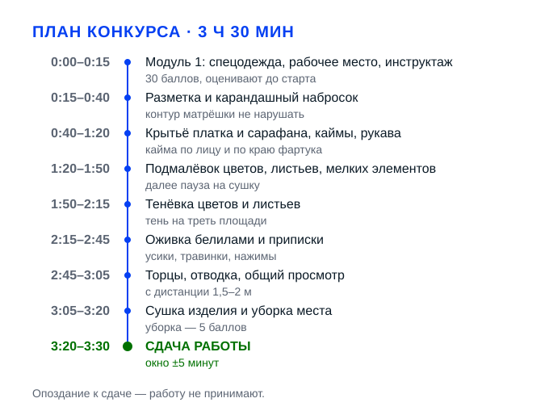
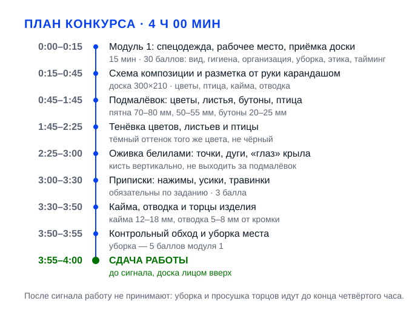
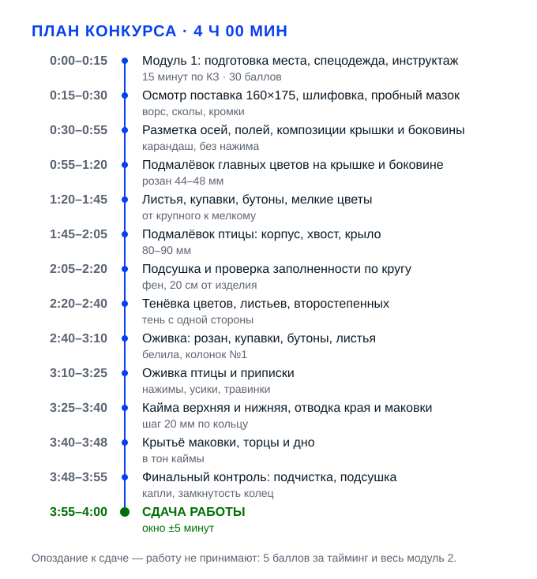

Мастер народно-художественных промыслов (Городецкая роспись) (Р)
Задания ниже — официальные файлы «Абилимпикс» (источник: abilympics-russia.ru), разложенные по категориям. Решения написаны по тексту задания, регламенту и критериям оценки; в них указано, что именно проверяет эксперт.
Школьник
14–16 лет, базовый уровень заданияВыдержка из официального конкурсного задания: страницы, относящиеся к категории «Школьник» (стр. 4–6 источника).
Пошаговое решение
Конкурсное задание категории «Школьники» состоит из двух модулей и длится три часа тридцать минут: пятнадцать минут на подготовительные работы и три часа пятнадцать минут на саму роспись. Участник получает разделочную доску в форме матрёшки с уже нанесённым контуром и должен расписать её городецкой росписью: закрыть платок и сарафан, дать кайму по окружности лица и по краю фартука, нанести геометрический орнамент на рукава, выполнить на фартуке цветочный орнамент в технике подмалёвка, тенёвки и оживки, покрыть торцы гармонирующими цветами. Контур матрёшки нарушать нельзя, готовых эскизов приносить нельзя — вся композиция строится на площадке. Баллы распределены так: 30 за подготовительные работы и 70 за роспись, итого 100. Ниже задание разобрано на пять задач и сорок девять шагов в том порядке, в котором их надо выполнять, с цифрами из критериев и типичными потерями на каждом этапе.

Задача 1. Подготовить рабочее место и войти в работуМодуль 1 · 15 минут · 30 баллов
Первый модуль длится пятнадцать минут и стоит 30 баллов из 100, то есть почти треть итога набирается до того, как кисть коснётся дерева. Здесь оценивают фартук и косынку, внешний вид и гигиену, порядок на столе, обращение с приборами, уборку, этику общения и соблюдение времени. Ошибки этого модуля не отменяют роспись, но отнимают баллы, которые потом нечем закрыть: за саму роспись максимум 70, и добрать их рисунком почти невозможно. Поэтому пятнадцать минут мы тратим не на «подготовку вообще», а строго на пять проверяемых вещей, и каждую доводим до состояния, которое видно с первого взгляда.
Действие 1.1. Надеть спецодежду и привести себя в порядок
Шаг 1.1.1
До старта надеваем фартук и повязываем косынку. Фартук завязываем на линии талии так, чтобы завязки не свисали на стол и не попадали в банку с водой, а передник закрывал грудь и колени. Косынку повязываем узлом на затылке и закрываем волосы полностью — до линии роста на лбу и до шеи. Ткань должна быть чистой, выглаженной, без пятен от прошлых красок: гуашь на ткани сохнет намертво и не отстирывается.
Наличие рабочей одежды — это первые 5 баллов модуля 1, самые дешёвые во всём конкурсе: их получают все, кто просто принёс форму и надел её правильно. Заодно фартук защищает вашу одежду, а испорченная школьная форма к середине конкурса читается экспертом как небрежность, хотя формально это не критерий.
Проверьте перед зеркалом или попросите наставника посмотреть со спины: завязки выше линии бёдер, косынка держит всю массу волос, узел не сползает при наклоне. Наклонитесь над столом — ни один угол ткани не должен оказаться в рабочей зоне и на палитре.
Самая частая ошибка — надеть косынку на макушку, оставив затылок открытым: спереди всё аккуратно, а сзади волосы лежат на плечах и попадают в краску. Вторая — подвязать фартук на груди «чтобы не мешал»: эксперт снижает балл за наличие и правильность рабочей одежды, даже если роспись будет сильной.
Эксперт фиксирует спецодежду в первые минуты модуля, до того как вы возьмёте кисть, и потом отдельно отмечает, осталась ли она чистой к сдаче изделия.
Шаг 1.1.2
Волосы убираем в хвост или косичку и только потом закрываем косынкой: так они не выбьются из-под ткани при наклоне над доской. У кого есть чёлка — закалываем её заколкой или невидимкой надо лбом, потому что при работе над фартуком голова опущена низко и чёлка ложится прямо на мокрую краску. Ногти коротко подстрижены, без лака и покрытия, руки вымыты с мылом и вытерты насухо.
Внешний вид и гигиена — отдельные 5 баллов модуля 1, и они проверяются не «в целом», а по конкретным признакам: убраны ли волосы, чистые ли руки, нет ли на ногтях лака. Лак и длинные ногти в росписи — не украшение, а риск: под ними остаётся краска, и она переносится в белила, которыми делают оживку.
Посмотрите на руки при дневном свете: под ногтями нет цветной каймы от прошлой работы, кожа сухая и чистая. Проверьте наклоном головы, что чёлка не падает на глаза — иначе вы будете поправлять её испачканной рукой.
Классика — прийти с длинными ногтями и лаком, считая, что «это не влияет на рисунок». Эксперт снимает баллы за гигиену, а лак ещё и собирает краску: белила для оживки быстро становятся розовыми, и вся мелкая разделка идёт грязным тоном.
Смотрит на руки и волосы до старта, а дальше — в течение всей работы: поправили чёшку испачканной рукой, и на лбу остался след, эксперт это заметит. Отдельно фиксируется, поправляла ли участница причёску испачканной рукой: на лбу остаётся след, и это снижает балл за внешний вид.
Шаг 1.1.3
Снимаем часы, браслеты, кольца и длинные серьги — всё, что может стукнуть по доске, зацепиться за кисть или испачкаться. Украшения убираем в сумку, а не кладём на стол рядом с палитрой: на столе они попадут в кадр оценки организации рабочего места. Застёгиваем фартук до конца, проверяем, что рукава не свисают на запястья и не мешают держать кисть у самой обоймы.
Это тот же блок «внешний вид и гигиена» на 5 баллов, но вторая его половина: эксперт смотрит на участника целиком. Свободное запястье и убранные украшения дают ещё и практическую выгоду — кисть ложится в руку так, как нужно для поворота вокруг пальца, а именно этот поворот и делает городецкий мазок живым.
Проверьте себя простым движением: возьмите кисть и поверните её между пальцами вокруг оси — ничего не цепляется, рукав не тянет, часы не мешают. Если мешает хоть что-то, убирайте сейчас, а не в середине подмалёвка.
Оставить обручальное кольцо или умные часы «они же не мешают»: кольцо царапает отшлифованную поверхность доски, а часы при наклоне бьют по краю. Эксперт отмечает это как нарушение внешнего вида, минус баллы из тех же пяти.
Осматривает участника в начале модуля, и повторно — когда вы поднимаете руку над доской: браслет на запястье видно сразу, объяснение «я забыл снять» не принимается.
Действие 1.2. Организовать рабочее место под роспись
Шаг 1.2.1
Раскладываем стол по зонам, и зоны лучше мысленно пронумеровать. По центру — доска на подкладном листе или клеёнке, повёрнутая контуром к вам. Слева от доски — палитра и баночка с водой, справа — кисти в стакане ворсом вверх и тряпка. Свет ставим слева и чуть впереди, если есть настольная лампа: при работе правой рукой тень от кисти не должна падать на фартук матрёшки.
Организация рабочего места — 5 баллов, и это единственный критерий, который оценивают буквально глазами, без разбора рисунка. Зоны нужны и практически: если вода стоит справа, вы каждый раз тянетесь через доску и задеваете рукавом ещё сырой подмалёвок. По нормам на рабочее место отводят площадку 3000 на 1900 мм с проходом 1,5 м, а освещённость для участников с нарушением зрения — не менее 300 люкс, так что свет вы вправе попросить до старта.
Обойдите стол взглядом по часовой стрелке: всё, что нужно для работы, достаётся без наклона корпуса и без переноса руки через изделие. На столе нет лишнего — телефона, сумки, еды, стаканов. Под доской лежит подкладка, иначе краска уйдёт на столешницу.
Сложить всё в одну кучу у края и начать работать, потому что «некогда раскладываться»: пятнадцать минут на это и даны. Вторая ошибка — поставить воду справа и тянуться через доску: рукав идёт по сырому подмалёвку, и композиция фартука размазывается, а баллы за организацию уже потеряны.
Эксперт проходит по площадке в конце модуля 1 и оценивает именно порядок: расположение материалов, чистоту стола, наличие подкладки под изделием. Оценивает в конце модуля, до старта росписи, поэтому навести порядок можно успеть до того, как высохнет первый мазок.
Шаг 1.2.2
Готовим палитру и кисти под конкретную задачу. В гуаши неограниченной палитры нам нужны: белила, краплак или красный, ультрамарин или синий, зелёный, охра, чёрный. Белка или колонок номеров 5–6 — для крытья платка и сарафана, номера 3–4 — для подмалёвка цветов и листьев, номер 1–2 с острым кончиком — для тенёвки, оживки и приписок. Кисти ставим в стакан ворсом вверх, чтобы не заломить кончик, воду наливаем на две трети.
Техника выполнения подмалёвка и оживки оценивается отдельными критериями, и половина техники — это правильная кисть. Крупным ворсом нельзя положить дугу оживки толщиной в миллиметр, а тонким невозможно ровно закрыть платок: пойдут полосы и просветы. Вода на две трети нужна потому, что при полной банке вы задеваете её обоймой кисти и разбрызгиваете краску по доске.
Проверьте каждую кисть: кончик собран, волос не топорщится в стороны, обойма не шатается. Капните водой на палитру и проведите тестовый мазок — кисть должна оставлять ровный след без проплешин и без веера волосков.
Взять одну кисть «на всё» и размывать ею же: подмалёвок получится грязным, а оживка — толстой и грубой, минус баллы за технику и за оживку. Вторая ошибка — поставить кисти ворсом вниз: кончик заламывается, и тонкая линия уже не получается до конца конкурса.
Эксперт смотрит на палитру и набор кистей в модуле 1, а качество мазка проверяет уже по готовой работе — по ровности крытья и тонкости линий. Отмечает, разведены ли кисти по назначению: отдельная для крытья, отдельная для подмалёвка, отдельная для оживки.
Шаг 1.2.3
Электрические приборы — настольную лампу, фен для сушки — включаем только сухими руками и только те, что разрешены на площадке, а шнур укладываем вдоль края стола, не поперёк прохода. Если розетка далеко, просим удлинитель у технического эксперта, а не тянем свой через всю площадку. Мусор — обрезки бумаги, использованные салфетки — складываем в отдельный пакет сразу, по ходу, а не в конце.
Работа с электроприборами и уборка — это 3 и 5 баллов модуля 1, то есть восемь баллов за действия, которые занимают минуту. Шнур поперёк прохода — ещё и нарушение охраны труда: по площадке ходят эксперты и другие участники, и споткнуться о провод — реальный риск. Мусор в общей куче мешает вам же: мокрая салфетка прилипает к доске и оставляет след на краске.
Проверьте: шнур лежит вдоль стола и не пересекает зону ног, вилка вставлена до конца, лампа не качается. Пакет с мусором закрыт и стоит на полу, а не на столе. Стол сухой, вода не натекла под палитру.
Включить фен мокрыми руками или поставить его на край стола так, что он сдует лист с палитрой. Эксперт фиксирует нарушение техники безопасности, и это уже не баллы, а замечание в протокол; мусор на столе снимает баллы за уборку, которую оценивают в конце.
Технический эксперт проверяет электроприборы до старта и следит за ними по ходу, а уборку оценивают в самом конце конкурса, после сдачи изделия. Проверяет шнуры и приборы на старте, а уборку — в самом конце, после сдачи изделия.
Действие 1.3. Пройти инструктаж и разобрать задание
Шаг 1.3.1
Слушаем инструктаж по технике безопасности и задаём вопросы, если что-то непонятно, а не додумываем на ходу. Сразу уточняем три вещи: где вода, где можно сушить изделие и что делать, если краска капнула на пол. Отдельно проговариваем запреты: нельзя приносить материалы на ацетоновой и нитрооснове, режущие инструменты, электронные носители и любые эскизы, сделанные до старта.
Этика общения — 2 балла, и они складываются из таких мелочей: слушать до конца, не перебивать, отвечать по существу, благодарить. Но практический смысл выше: запрет на готовые эскизы означает, что вся композиция строится здесь и сейчас, по памяти, и попытка принести рисунок — прямая дорога к дисквалификации, а не к потере баллов.
Вы понимаете, где берёте воду, куда ставите изделие на сушку и к кому идти с проблемой. Запрещённые предметы убраны в сумку и не лежат на столе: канцелярский нож в пенале на площадке — уже нарушение. Запрещённые предметы не лежат на площадке и убраны в сумку.
Кивнуть и не слушать, а потом искать воду в середине модуля: время уходит из трёх часов пятнадцати минут. Вторая ошибка — принести с собой распечатку схемы росписи «для образца»: её изымут, а факт зафиксируют в протоколе.
Эксперт наблюдает за коммуникацией на инструктаже и отмечает, задаёт ли участник вопросы по делу; грубость или спор с экспертом идут в минус по критерию «Этика общения».
Шаг 1.3.2
Читаем конкурсное задание по пунктам и выписываем для себя перечень того, что должно быть на изделии: крытьё платка и сарафана, кайма по окружности лица на платке и по краю фартука на сарафане, геометрический орнамент на рукавах, цветочный городецкий орнамент на фартуке, закрашенные торцы. Отдельно подчёркиваем главное ограничение: контур матрёшки, уже нанесённый на доску, нарушать нельзя.
Каждый пункт этого перечня — отдельная строка в критериях оценки, и пропуск любого стоит баллов: геометрический орнамент на рукавах — 3 балла, кайма на платке — 2, кайма или витейка на сарафане — 2, крытьё платка и сарафана по 1. Учтите: модуль 2 идёт 3 часа 15 минут, а всего на задание 3 часа 30 минут, и всё перечисленное надо успеть высохнуть к сдаче.
У вас на столе лежит короткий список из пяти-шести пунктов, и вы можете назвать по памяти, что именно будете рисовать на каждой зоне матрёшки. Сверьте его с текстом задания ещё раз перед стартом. Перед стартом вы проговариваете список наставнику или про себя вслух, без подглядывания.
Прочитать только первую фразу «выполнить городецкую роспись» и начать с цветов, забыв про рукава и торцы. В итоге два-три критерия просто не закрыты: минус 3 балла за рукава, минус 2 за кайму, минус 1 за торцы — и это при хорошем рисунке.
Эксперт проверяет полноту выполнения по каждому пункту отдельно, поэтому незакрытая зона видна сразу, без сравнения с эталоном. Он сверяет готовое изделие с этим перечнем, и незакрытая зона видна сразу, без сравнения с эталоном.
Шаг 1.3.3
Прикидываем время на 3 часа 15 минут и записываем план на листке: разметка и набросок — 25 минут, крытьё платка и сарафана с каймами — 40 минут, подмалёвок цветов и листьев — 30 минут, тенёвка — 25 минут, оживка и приписки — 30 минут, торцы и доработка — 15 минут, сушка и сдача — остаток. Плюс обязательный резерв 20 минут, который нельзя трогать до самого конца.
Выполнение задания в установленное время — 5 баллов, и они снимаются целиком, если работа не сдана в срок, даже при идеальном рисунке. Гуашь сохнет долго: плотный слой — до получаса и больше, поэтому резерв нужен не «на всякий случай», а на физику материала. План ещё и защищает от главной ловушки новичка — бесконечного вылизывания одного цветка.
План записан и лежит на виду, рядом с палитрой. Каждые полчаса вы сверяетесь с ним и видите, идёте вы в графике или отстаёте. Если отставание больше десяти минут — упрощаете, а не ускоряетесь в ущерб качеству.
Держать план в голове: время уходит незаметно, и на оживку — самую балльную часть — остаётся пять минут вместо тридцати. Вторая ошибка — начать с торцов и каймы, потратить на них час и оставить фартук с пустым полем.
Эксперт фиксирует время начала и сдачи по факту, а по темпу работы видит, был ли у участника план или он импровизировал до последней минуты. Кроме того, по темпу видно, оставлял ли участник время на сушку гуаши.
Задача 2. Разметить изделие и построить набросок орнаментаМодуль 2 · разметка · до 5 баллов
Первые двадцать пять минут второго модуля уходят на то, что почти не видно в готовой работе, но определяет её целиком: разметку. По конкурсному заданию набросок орнамента выполняется прямо на доске, где уже нанесён контур матрёшки, и линия контура нарушена быть не может. Значит, вся композиция должна сначала уместиться в карандаше: оси, габариты цветов, направление стебля, места каймы и рукавов. Разметка стоит всего 1 балл, но от неё зависят пропорциональность элементов на 2 балла, соразмерность с полем росписи на 2 балла и уравновешенность композиции ещё на 2 — то есть один карандашный этап держит семь баллов и всю дальнейшую работу.
Действие 2.1. Осмотреть изделие и разобрать зоны
Шаг 2.1.1
Берём доску в руки и осматриваем её целиком, до начала любой разметки. Смотрим три вещи: где лицевая сторона, а где тыл, как отшлифована поверхность и как нанесён контур. Проводим ладонью по всей плоскости — рука должна идти гладко, без зацепов на ворсе. Отмечаем карандашом на обороте своё рабочее место или номер, чтобы не перепутать доску с чужой.
Роспись ложится на подготовленную поверхность, и если на доске осталась шлифовальная пыль или задир, гуашь пойдёт пятнами, а тонкая линия оживки поплывёт по ворсу. Лицевая сторона важна потому, что рисунок на обороте не оценивают вообще, и перевёрнутая доска — это ноль за модуль при идеальной работе.
Поверхность гладкая, контур чёткий и замкнутый по всему периметру фигуры. Если на плоскости есть тёмные сучки или следы клея — покажите техническому эксперту до старта, а не после: замена изделия возможна только в модуле 1.
Начать работать сразу, не осмотрев доску: к середине росписи обнаруживается, что фигура повёрнута тыльной стороной, и перевернуть уже нельзя — краска на лицевой. Вторая ошибка — стереть пыль ладонью: она втирается в поры и потом проступает через светлую гуашь серыми точками.
Эксперт осматривает изделие вместе с участником в начале модуля 2 и фиксирует в протоколе исходное состояние доски до нанесения краски. О повреждённой доске нужно сказать в первом модуле: после старта её уже не заменят.
Шаг 2.1.2
Разбиваем фигуру матрёшки на зоны и проговариваем, что в каждой будет. Платок — верхняя часть вокруг лица, его мы крыем и по окружности лица даём кайму. Лицо не расписываем вообще, оно остаётся чистым деревом. Рукава — две узкие зоны по бокам от фартука, там геометрический орнамент. Сарафан — основное поле вокруг фартука, его крыем и по краю фартука делаем кайму. Фартук — центральное поле под цветочный орнамент.
Такое деление — не наша выдумка, оно прямо задано в последовательности выполнения задания, и каждый элемент оценивают отдельной строкой критериев: крытьё платка — 1 балл, крытьё сарафана — 1, кайма на платке — 2, кайма или витейка на сарафане — 2, геометрический орнамент на рукавах — 3. Если зоны перепутать, цветы уедут на сарафан, и два критерия разом не будут закрыты.
Вы можете показать пальцем на доске, где заканчивается платок и начинается фартук, и назвать, что будет в каждой из пяти зон. Границы зон совпадают с линиями контура, а не с вашими представлениями о том, где было бы красивее.
Решить, что фартук — это вся нижняя половина матрёшки, и расписать цветами сарафан: кайма по краю фартука тогда идёт по чужой линии, а поле сарафана остаётся пустым. Минус баллы за границы каймы и за заполненность изделия.
Эксперт сверяет роспись с зонами, заданными в задании, и отмечает, попали ли каймы именно на те линии, которые обозначены контуром. Чаще всего путают сарафан и фартук: цветы, написанные на сарафане, сразу снимают баллы за границы каймы.
Шаг 2.1.3
Находим поле росписи фартука и определяем его геометрию: ширину вверху, ширину внизу, высоту, форму — трапеция, прямоугольник со скруглением или овал. Прикидываем, сколько места останется под кайму по краю: обычно это полоса 5–8 мм, и её надо сразу вычесть из поля. Оставшееся пространство и есть площадь под цветочный орнамент, и именно от неё считаются размеры цветов.
Соразмерность элементов орнамента полю росписи — 2 балла, и это самая частая потеря у школьников: цветы либо жмутся в серединке, оставляя пустые края, либо лезут на кайму. Заполненность орнаментом изделия стоит ещё 3 балла. Поле фартука на доске-матрёшке небольшое, и три крупных цветка на нём не помещаются — это видно уже по разметке.
Поле измерено и записано: например, 90 мм по низу, 60 мм по верху, 110 мм по высоте, минус по 7 мм на кайму с каждой стороны. Под цветы остаётся примерно 76 на 96 мм — под эти цифры и подбираем размер розана.
Рисовать «на глаз» и обнаружить, что третий цветок не влезает, уже после подмалёвка первых двух. Исправлять придётся по сырой краске, и пропорциональность сбивается окончательно. Переделка съедает половину второго модуля, а пропорциональность после неё восстановить почти невозможно.
Эксперт смотрит на готовую работу, но видит результат именно этого шага: насколько крупные цветы соотносятся с полем и не срезана ли кайма. Отдельно смотрит, не наезжают ли цветы на кайму: это первый признак того, что поле не измеряли.
Действие 2.2. Построить композицию по традиционной схеме
Шаг 2.2.1
Выбираем схему построения и останавливаемся на одной. Для узкого поля фартука матрёшки подходят три традиционных варианта: «гирлянда» — три-четыре цветка по диагонали или дуге, «букет» — крупный розан в центре, купавка и бутоны по сторонам, «ромб» — цветы по углам с мелким цветком в середине. Для вытянутого фартука удобнее гирлянда: она читается на любой ширине и легко уравновешивается приписками.
Соответствие схемы построения орнамента традициям городецкой росписи — 2 балла, и формально это значит, что композиция должна опираться на известный тип построения, а не быть произвольной россыпью цветов. Гармония орнаментальных элементов и образное решение композиции дают ещё 2 и 3 балла: эксперт смотрит, есть ли у рисунка центр, направление и ритм.
Схема названа и нарисована на черновике за две минуты: видно, где центр, в какую сторону идёт рост стебля, сколько крупных и сколько мелких элементов. Если с первого взгляда рисунок читается как городецкий, а не как открытка — схема выбрана верно.
Смешать всё сразу: розан в углу, купавка в другом углу, бутоны врассыпную. Композиция рассыпается, и по критерию «соответствие схемы традициям» идёт минус 2 балла, а за уравновешенность — ещё 2. В итоге теряется целостность работы, хотя каждый цветок может быть написан хорошо.
Эксперт оценивает схему целиком, с расстояния: есть ли читаемый центр, держится ли рисунок как единое целое или распадается на отдельные пятна. Он смотрит, есть ли читаемый центр и направление роста, а не набор отдельных пятен.
Шаг 2.2.2
Проводим оси. На фартуке это вертикальная осевая линия — она должна совпадать с осью симметрии всей матрёшки, иначе посадка рисунка «поедет» вбок. Дальше проводим дугу гирлянды: плавную линию от нижнего левого угла фартука к верхнему правому или наоборот, с провисанием вниз на треть высоты поля. На этой дуге и будут сидеть цветы — крупные ближе к центру, мелкие к краям.
Ось симметрии — условие уравновешенности композиции на 2 балла: матрёшка сама по себе симметрична, и смещённый центр читается как ошибка глазом, даже если цветы нарисованы хорошо. Дуга гирлянды нужна, чтобы цветы не выстроились в линейку: городецкий орнамент всегда живой, с наклоном и поворотом каждого цветка.
Ось проходит точно через середину фартука: отложите ширину поля вверху и внизу и проверьте середины линейкой. Дуга не задевает кайму и не уходит за границы поля ни с одной стороны. Дуга не провисает ниже середины поля и не поднимается к кайме.
Вести ось «примерно по центру»: на глаз ошибка в 5 мм на узком фартуке уже заметна, а к низу она удваивается. Вторая ошибка — прямая линия вместо дуги: гирлянда становится строем, и композиция теряет городецкий характер.
Эксперт проверяет симметрию по центральной оси матрёшки — это делается быстро, взглядом от лица вниз по фигуре. Смещение оси на 5 мм уже читается, потому что фигура симметрична и глаз ищет середину.
Шаг 2.2.3
Определяем размеры цветов и их соотношение. В городецкой росписи главный цветок — розан, он самый крупный: на фартуке матрёшки его диаметр около 30–35 мм. Купавка меньше розана примерно в 1,3–1,5 раза, то есть 20–25 мм. Бутоны и мелкие цветы-ромашки — 10–14 мм, в два-три раза меньше купавки. Такое трёхступенчатое соотношение и даёт ту самую иерархию, по которой орнамент читается.
Пропорциональность элементов цветочного орнамента — 2 балла, и она оценивается по отношению размеров, а не по абсолютным цифрам. Если розан и купавка одинаковые, рисунок выглядит плоским и «обойным»: глаз не находит главного. Заниженный розан, наоборот, теряет центр композиции.
Проверьте разметку циркулем или на глаз отойдя на расстояние: главный цветок заметно крупнее остальных, купавка меньше его, мелочь явно мельче. Разница должна быть видна с полутора метров, а не угадываться.
Нарисовать три одинаковых цветка — самая распространённая ошибка новичка, она сразу снимает баллы за пропорциональность и за образное решение. Обратная ошибка — сделать розан на весь фартук, тогда купавке места нет.
Эксперт сравнивает размеры элементов между собой на готовой работе, и дисбаланс виден даже без линейки. Сравнение размеров занимает секунды: рядом стоящие цветы одного диаметра видны сразу.
Шаг 2.2.4
Расставляем элементы по дуге с ритмом: крупный розан — в центре или чуть смещённым к верхней трети, купавка — с одной стороны от него, второй розан поменьше или крупный бутон — с другой. Между ними оставляем промежутки 15–25 мм, чтобы в них потом легли листья и приписки. Пустоты по краям поля заранее распределяем под мелкие цветы и травку. Разметку ведём от центра поля, а не от края, чтобы погрешность распределялась симметрично.
Уравновешенность композиции — 2 балла, заполненность орнаментом — 3 балла, насыщенность разнообразием элементов — тоже 3. Пустое поле в углу фартука или, наоборот, цветы, сбитые в кучу, стоят дороже, чем кажется: это три критерия сразу. Промежутки под листья нужны потому, что дорисовать их потом «поверх» некуда — лист должен примыкать к стеблю.
Отойдите от доски на полтора метра и прищурьтесь: пятна цветов должны распределяться по полю равномерно, без тяжёлого угла и без пустой полосы. В каждом промежутке между крупными цветами помещается хотя бы один лист.
Сдвинуть всю группу к одному краю, оставив широкую пустую полосу: уравновешенность теряется, и заполненность падает до половины баллов. Вторая ошибка — поставить цветы вплотную, тогда листьям и припискам места не остаётся вовсе.
Эксперт отходит от работы на расстояние и оценивает распределение пятен по полю — именно на этом шаге закладывается результат. Он оценивает именно распределение пятен, а не детали: детали на этом расстоянии не видны.
Действие 2.3. Нанести карандашный набросок
Шаг 2.3.1
Рисуем простым карандашом ТМ или НВ, остро заточенным, без сильного нажима: линия должна быть видна вам, но не проступать через гуашь. Сначала лёгкими точками намечаем центры цветов по дуге, затем обводим их окружностями нужного диаметра. Ластик держим под рукой, но стираем аккуратно, плашмя, чтобы не поднять ворс на дереве и не оставить серого следа.
Разметка орнамента на поверхности изделия — 1 балл, но её настоящая цена выше: карандашная линия — это страховка. На разметке видно, влезает ли третий цветок, не задевает ли кайму дуга, симметричен ли рисунок; исправить это карандашом — тридцать секунд, а краской — уже невозможно.
Линия тонкая и светлая, легко стирается ластиком без размазывания. Центры цветов лежат точно на дуге, окружности не пересекаются и не выходят за поле фартука. Проверьте наклоном доски к свету: карандаш не блестит и не продавил дерево.
Давить на карандаш «чтобы лучше видеть»: борозда на дереве не закрашивается гуашью и остаётся светлой линией в готовой работе, а тёмный графит просвечивает через розовый подмалёвок и делает его грязным.
Технический эксперт может подойти в момент разметки: оценивается аккуратность и то, что разметка ведётся на изделии, а не переносится с готового эскиза.
Шаг 2.3.2
Внутри окружностей намечаем строение цветка, пока только карандашом. Розан — это круг, разделённый на лепестки: проводим от центра пять-шесть лучей и намечаем серединку-кружок диаметром примерно в треть цветка. Купавку строим как бутон из трёх-четырёх лепестков, смотрящий вверх или в сторону. У бутонов рисуем короткую ножку-основание, от которой пойдёт стебель.
Форма элементов орнамента, соответствующая традициям, — 2 балла, и техника подмалёвка — ещё 1: городецкий розан пишут не «кружком», а поворотом кисти по заранее намеченным лепесткам. Если лепестки не размечены, кисть пойдёт как получится, и цветок выйдет плоским блином.
Каждый цветок на разметке имеет центр, лепестки и явное направление — вверх или в сторону. Купавки смотрят в разные стороны, а не все в одну: именно это делает гирлянду живой. Карандашная линия не выходит за контур фартука и не залезает на кайму.
Рисовать все цветы строго анфас и одинаково — орнамент становится штампованным, и балл за форму элементов снижается. Вторая ошибка — размечать лепестки уже после подмалёвка, поверх краски: карандаш её царапает.
Эксперт оценивает форму готовых цветов, но по разметке видно, понимает ли участник, как устроен городецкий розан и купавка. По разметке видно, понимает ли участник, из чего складывается городецкий цветок.
Шаг 2.3.3
Проверяем набросок целиком до первой капли краски. Смотрим на доску с расстояния вытянутой руки и в перевёрнутом виде — так сразу видны перекосы. Проверяем три вещи: симметрию относительно оси, равные промежутки между цветами, отступ от каймы не меньше 5 мм. Всё, что не нравится, правим сейчас, пока дерево чистое. Перевёрнутый вид нужен потому, что глаз привыкает к своей ошибке и перестаёт её замечать; перевернув доску, вы смотрите на неё как на чужую работу.
Корректировка орнамента на изделии — 1 балл, и это единственный шанс исправить композицию бесплатно. После подмалёвка исправления стоят перекрытия краской, а на светлом фоне розового перекрытие даёт грязное пятно, которое видно в готовой работе. Разметка — единственный этап, который можно переделать бесплатно: карандаш стирается, а краска нет.
Набросок читается как законченная композиция: видно центр, видно ритм, видно, где пройдёт стебель. Отступы от каймы и от контура одинаковые слева и справа, сверху и снизу. Промежутки между цветами не меньше 15 мм, иначе листьям негде лечь.
Пропустить этот просмотр и начать крытьё, а потом обнаружить, что гирлянда сдвинута влево. Переделка по краске занимает двадцать минут и почти всегда оставляет следы, а время уже ушло из бюджета. На исправленной по краске композиции видно сдвоенный контур, и балл за корректировку не компенсирует потерю.
Эксперт замечает, что разметка была исправлена до начала росписи — это признак грамотной работы, а не суеты. Ему важно, что разметка была исправлена до начала росписи, а не после первых пятен.
Задача 3. Закрыть платок и сарафан, выполнить каймы и рукаваМодуль 2 · крытьё и каймы · до 9 баллов
Прежде чем браться за цветы, матрёшке нужно дать «одежду»: закрыть плотным тоном платок и сарафан, провести кайму по окружности лица и по краю фартука, нанести геометрический орнамент на рукава. Делать это надо именно до цветочной росписи, потому что крытьё идёт широкой кистью и обязательно заедет на уже написанные цветы, а исправлять поверх подмалёвка нельзя. На этом этапе работает правило больших пятен: сначала всё крупное и фоновое, потом среднее, потом мелкое. Ошибки здесь дешёвые по баллам — крытьё платка и сарафана стоят по 1 баллу, — но дорогие по последствиям: кайма задаёт границы поля фартука, и от неё зависит вся дальнейшая композиция.
Действие 3.1. Закрыть платок и дать кайму по окружности лица
Шаг 3.1.1
Набираем на широкую кисть номер 5–6 плотный тон для платка: традиционно это краплак или бордо, иногда ультрамарин, но обязательно насыщенно, а не пастельно. Крытьё ведём от края платка к линии лица, короткими мазками в одном направлении, слегка накладывая мазок на мазок, чтобы не оставалось светлых просветов. Первый слой даём тонким и даём подсохнуть минуту, второй кладём уже плотно, до полной укрывистости.
Крытьё платка — 1 балл в критериях, но именно оно создаёт тот контраст, на котором держится вся матрёшка: светлое лицо и фартук читаются только на плотном тёмном фоне. Второй слой нужен потому, что гуашь при высыхании садится и светлеет: один слой почти всегда даёт полосы и «пробелы» по ворсу дерева.
Поднимите доску к свету и посмотрите на платок под углом: тон должен лежать ровно, без полос, светлых прожилок и без сухих проплешин. Граница с лицом чистая, краска не затекла за контур ни в одном месте.
Крыть в один слой «чтобы быстрее»: после высыхания платок становится пятнистым, и балл за крытьё снимается. Вторая, более грубая ошибка — заехать краской на лицо: стереть её уже нельзя, лицо остаётся чистым по замыслу, и любое пятно на нём видно как брак.
Эксперт оценивает ровность тона и чистоту границы с лицом на готовой работе, и первое, что бросается в глаза, — полосы и проплешины. Отдельно отмечает, не затекла ли краска за контур лица, потому что это уже не исправить.
Шаг 3.1.2
По окружности лица, уже по закрытому тону платка, ведём кайму. Отступаем от линии контура лица 3–4 мм и проводим полосу шириной 4–6 мм кистью номер 2–3: либо сплошную, либо из коротких дуг-«чешуек», наложенных одна за другой. Цвет каймы берём контрастный к платку: по бордо — белила или жёлтая охра, по синему — белила с каплей жёлтого. Полосу ведём от затылка к лицу по часовой стрелке, не отрывая кисть на длинных участках.
Кайма на платке — 2 балла, и роспись каёмки платка ещё 2: это одна из самых заметных деталей всей работы, потому что она обрамляет лицо и находится в центре внимания. Сплошная полоса читается строже, дуги — живее; в любом случае линия должна идти на равном расстоянии от контура, иначе лицо выглядит перекошенным.
Расстояние от контура до каймы одинаковое по всему кругу — проверьте пальцем или циркулем в двух-трёх точках. Ширина полосы не гуляет, концы замыкаются без уступа и без наплыва краски. Проверьте замыкание каймы: у стыка не должно быть уступа по толщине.
Вести кайму «по краю лица» без отступа: полоса прилипает к контуру, и лицо съедается, становится меньше. Вторая ошибка — разная ширина каймы слева и справа: два балла снимаются сразу, потому что асимметрия на таком видном месте очевидна.
Эксперт смотрит на кайму вокруг лица в первую очередь — это оптический центр изделия, и равномерность полосы оценивается без линейки. Кайма вокруг лица — оптический центр изделия, и её равномерность видна даже на фотографии.
Шаг 3.1.3
Оживляем кайму ритмичными точками или короткими штрихами белилами. Набираем белила на кончик кисти номер 1–2, ставим точку диаметром 1,5–2 мм и повторяем её через равный шаг 8–10 мм по всей длине каймы. Точки ставим лёгким касанием, поворачивая кисть вокруг оси, чтобы получался круглый след, а не запятая. Если кайма из дуг — оживляем каждую вторую дугу.
Ритм в оживке — это 2 балла за оживку главных элементов и общее впечатление аккуратности. Равный шаг создаёт ощущение узора, а сбитый — ощущение случайных клякс, хотя точек поставлено столько же. Точки на кайме ещё и связывают платок с фартуком: та же белильная оживка повторится на цветах, и работа станет цельной.
Шаг между точками одинаковый на всём протяжении, точки одного размера и не сливаются в пунктирную линию. Проверьте, отойдя на полшага: кайма должна читаться как орнамент, а не как случайные брызги. Проверьте, не слиплись ли точки у самого узкого места каймы.
Тыкать кистью без счёта, ускоряясь на повороте: точки сбиваются в кучу и сливаются, ритм пропадает. Вторая ошибка — слишком жидкие белила: точка расплывается в кляксу, а на плотном тёмном фоне это видно мгновенно.
Эксперт оценивает ритмичность и размер точек, а также то, насколько оживка каймы согласуется с оживкой цветов на фартуке. Отмечает, держится ли шаг точек на всём протяжении, включая повороты у затылка.
Действие 3.2. Закрыть сарафан и провести кайму по краю фартука
Шаг 3.2.1
Крыем сарафан — поле вокруг фартука — плотным цветом, чаще всего зелёным, синим или тёмно-красным. Работаем кистью номер 5–6, ведём мазки вдоль краёв фартука, а не поперёк: так меньше шансов заехать на поле, где будут цветы. Краску набираем умеренно, чтобы она не текла под контур, и доводим до кромки фартука, оставляя нетронутой полосу в 5–8 мм под кайму.
Крытьё сарафана — 1 балл, но сарафан занимает самую большую площадь, и именно по нему судят о чистоте работы: пятна, полосы и потёки на большой плоскости видны сразу. Оставленная полоса под кайму — не небрежность, а технология: кайму кладут на чистый тон сарафана, иначе она сольётся с фартуком и потеряет границу.
Тон ровный, без просветов и без наплывов на фартук. Кромка фартука осталась чистой, полоса под кайму не закрашена. Проверьте наклоном доски: при боковом свете не должно быть видно мазков. Полоса под кайму осталась незакрашенной по всему периметру фартука.
Закрыть сарафан, заехав за кромку фартука: граница пропадает, и кайму приходится вести по грязному стыку. Вторая ошибка — разводить краску водой на большой площади: тон сохнет неравномерно и идёт пятнами, а балл за качество исполнения снимается.
Эксперт оценивает чистоту большой плоскости и то, сохранена ли граница между сарафаном и фартуком. Он смотрит на большую плоскость целиком: полосы и пятна на ней видны даже при беглом осмотре.
Шаг 3.2.2
По краю фартука, со стороны сарафана, ведём кайму. Есть два традиционных решения: узкая лента с точками или витейка — волнистый S-образный стебель с мелкими листиками, идущий по кромке. Для кромки фартука удобнее витейка: она заполняет полосу шириной 6–8 мм и не выглядит жёсткой рамкой. Рисуем её тонкой кистью: сначала волну, потом листики попеременно влево и вправо.
Кайма или витейка на сарафане — 2 балла, границы каймы и отводки — ещё 2, и кайма как украшение общего вида — 2. Кайма по краю фартука выполняет двойную работу: отделяет поле росписи и одновременно украшает сарафан. Витейка предпочтительнее сплошной полосы там, где нужна мягкая граница: она не спорит с цветами и не превращает фартук в рамку для картины.
Волна идёт на равном расстоянии от кромки, амплитуда одинаковая, листики не выходят за полосу каймы и не залезают в поле фартука. На поворотах у углов волна не сбивается и не обрывается. Углы кромки оформлены так же, как середина, без утолщений.
Вести кайму с разной шириной: у углов полоса расширяется, и граница фартука становится волнистой, хотя контур прямой. Вторая ошибка — слишком крупная витейка: листики заходят в поле, и цветам приходится тесниться, что снимает баллы за соразмерность.
Эксперт проверяет границы каймы на всём протяжении и оценивает, не спорит ли она с цветочной композицией. Он проходит взглядом по всей кромке фартука, отмечая, где кайма меняет ширину.
Шаг 3.2.3
Согласуем кайму с полем и контуром. Проверяем, что кайма не съела поле фартука: после её проведения остаётся та площадь, под которую мы считали размеры цветов на разметке. Если поле уменьшилось, пересматриваем размер розана в сторону уменьшения на 2–3 мм, но не сдвигаем центр. Заодно цветом каймы повторяем один из цветов, которые будут в орнаменте, чтобы работа читалась как единое целое.
Сочетание каймы и отводки с общей концепцией изделия — 3 балла, и это самый весомый критерий блока декорирования. Кайма, выкрашенная в случайный цвет, смотрится как чужая заплатка: она должна либо повторять цвет лепестков, либо поддерживать фон. Уменьшение розана на пару миллиметров сохраняет пропорциональность — 2 балла.
Отойдите на полтора метра: кайма читается как граница, но не как главный элемент. Поле фартука осталось достаточно большим, чтобы главный цветок смотрелся свободно. Ширина каймы и размер главного цветка соотносятся как один к четырём.
Провести кайму и только потом заметить, что для трёх задуманных цветов места нет. Переделывать кайму по сырому нельзя, придётся уменьшать цветы — а это потеря баллов за пропорциональность и заполненность.
Эксперт оценивает кайму в связке с орнаментом: совпадает ли она по цвету и по масштабу с тем, что нарисовано на фартуке. Он оценивает кайму не отдельно, а в паре с орнаментом на фартуке.
Действие 3.3. Нанести геометрический орнамент на рукава
Шаг 3.3.1
Рукава — две узкие полосы по бокам от фартука, и расписываем их геометрическим орнаментом. Простейший и самый надёжный вариант: полоса из ромбов с точками в середине, разделённая тонкими линиями, или чередование коротких наклонных штрихов и точек. Размечаем шаг карандашом: например, ромб 8 на 8 мм, между ромбами 4 мм. Работаем кистью номер 1–2, следя, чтобы краска не перетекала на фартук и кайму.
Геометрический орнамент на рукавах — 3 балла, и это самый дорогой элемент декорирования после приписок. Оценивают и сам факт наличия орнамента, и симметрию между рукавами, и то, что он не разваливается по краям. Разметка шага карандашом здесь обязательна: на глаз ромбы поплывут уже к третьему элементу.
Ромбы одинакового размера, расстояние между ними равное, точки стоят в центрах. Орнамент на правом и левом рукаве зеркально повторяет друг друга по количеству элементов и по высоте, на которой начинается.
Рисовать ромбы без разметки и разного размера — самая частая ошибка: к концу полосы они мельчают. Вторая — разное количество элементов на двух рукавах: асимметрия видна сразу, и из трёх баллов остаётся один.
Эксперт сравнивает рукава между собой — это делается взглядом, и разница в количестве элементов видна мгновенно. Сравнение двух рукавов занимает секунды: разница в количестве ромбов видна сразу.
Шаг 3.3.2
Завершаем рукава: проводим тонкие ограничительные линии по краям полосы, если они задуманы, и добавляем мелкие точки в промежутках, чтобы орнамент не выглядел разреженным. Цвет берём тот же, что в кайме платка или в оживке цветов, — так рукава связываются с остальной росписью. Если рукав узкий и ромбы в него не встают, переходим на вертикальные штрихи и точки, не пытаясь втиснуть геометрию силой.
Качество исполнения геометрического орнамента входит в критерий «техника исполнения орнамента в традициях городецкой росписи» — 1 балл, и в общее впечатление от декорирования. Согласованность цвета с каймой работает на гармонию орнаментальных элементов — 2 балла: глаз воспринимает работу как целое, когда одинаковые цвета повторяются в разных зонах.
Орнамент на рукавах выглядит как продолжение каймы по цвету и по плотности, а не как отдельная вставка. Пустых мест внутри полосы не осталось, но и тесноты нет. Плотность орнамента на рукавах такая же, как на кайме платка.
Заполнить рукава чем-то случайным в последние минуты, лишь бы зона не была пустой: эксперту видно, что орнамент не продуман, и балл за технику снимается. Вторая ошибка — оставить рукава вовсе без росписи, тогда три балла теряются целиком.
Эксперт оценивает рукава в общем просмотре изделия, сверяя их с характером остальной росписи. Отмечает, читаются ли рукава как часть общей декоративной системы изделия.
Задача 4. Расписать фартук цветочным городецким орнаментомМодуль 2 · цветочный орнамент · до 40 баллов
Это ядро задания и самая большая группа критериев: подмалёвок, тенёвка, оживка и приписки вместе дают около сорока баллов из семидесяти. Городецкая роспись строится строго в четыре приёма, и переставлять их местами нельзя: сначала цветовое пятно, потом его оттенение, потом белильная разделка, и только в конце чёрная графика приписок. Каждый приём делает работу всё более дробной, поэтому идти надо от крупного к мелкому и давать слоям подсохнуть. Если начать оживку, пока подмалёвок сырой, белила смешаются с розовым, и вместо чёткой точки получится мутное пятно — именно на этом теряется больше всего баллов.
Действие 4.1. Выполнить подмалёвок главных элементов
Шаг 4.1.1
Смешиваем краски для подмалёвка на палитре, а не на доске. Для розана берём белила и добавляем краплак или красный по капле, пока не получится плотный розовый цвет — не бледный и не малиновый. Для купавки так же смешиваем белила с ультрамарином до голубого. Оба состава делаем густыми, как сметана: капля должна стоять на палитре горкой, а не растекаться лужей.
Цветовое решение цветочного орнамента городецкой росписи — 3 балла, самый весомый одиночный критерий во всём модуле. Городецкий подмалёвок всегда плотный и светлый по тону: тёмная краска под тенёвку и оживку не оставит места. Жидкая краска течёт по дереву и даёт ореолы вокруг пятна, которые потом не перекрыть, потому что перекрытие испортит форму.
Капните смесь на ноготь или на край палитры: она держит форму и не стекает. Проведите мазок на черновике — цвет ровный, без крупинок и без просветов основы. Розовый и голубой должны различаться по тону, а не только по цвету.
Разводить гуашь водой «чтобы легче шло»: пятно получается прозрачным, и через него видно дерево, а балл за нанесение краски снимается. Вторая ошибка — смешивать краску прямо на фартуке: грязные разводы вокруг цветка, которые уже не убрать.
Эксперт оценивает плотность и чистоту цвета на готовой работе, а также то, соответствуют ли розовый и голубой традиционной палитре. Отдельно смотрит, нет ли вокруг пятна ореолов: они появляются от жидкой краски и не перекрываются.
Шаг 4.1.2
Пишем главный розан по карандашной разметке. Набираем розовый на кисть номер 4–5 и ставим первое пятно в центре размеченного круга, поворачивая кисть вокруг оси, — получается округлое тело цветка. Затем, не отрывая логики движения, добавляем по кругу четыре-пять лепестков: каждый лепесток это мазок от центра наружу с поворотом кисти так, чтобы внешний край получился округлым, а внутренний — суженным к середине.
Подмалёвок главных элементов цветочного орнамента — 2 балла, и техника его выполнения ещё 1. Розан пишут поворотом кисти, а не раскрашиванием по контуру: именно поэтому он получается живым, с мягкими переходами. Если «закрасить кружок» ровным тоном, цветок станет плоским, и тенёвка ляжет на ровное пятно без формы, которую надо оттенять.
Пятно плотное, без просветов, лепестки читаются по внешнему краю. Форма круглая или слегка овальная, без потеков за разметку больше чем на миллиметр. Серединка осталась чуть светлее краёв — там потом ляжет оживка.
Раскрашивать размеченный круг, водя кистью туда-сюда: получаются полосы, а не лепестки, и минус балл за технику. Вторая ошибка — набирать слишком много краски: она стекает к нижнему краю пятна и образует утолщение, из-за которого цветок выглядит подтаявшим.
Эксперт смотрит на форму и плотность пятен и на то, виден ли мазок с поворотом кисти — это и есть признак владения техникой. Ему важно увидеть мазок с поворотом кисти: ровно закрашенный круг считается слабой техникой.
Шаг 4.1.3
Ставим второй главный цветок и купавку. Купавку пишем так же, но пятно тянем вверх, к серёдке: получается бутон, у которого нижняя часть шире верхней, а в верхней оставляем светлый участок под «глазок». Размер купавки — примерно две трети розана, ставим её на дугу разметки с наклоном в сторону главного цветка, чтобы она «смотрела» на него. Второй розан, если он есть в схеме, делаем чуть меньше первого.
Пропорциональность элементов — 2 балла, и она проверяется по отношению размеров: купавка в две трети розана, второй розан меньше главного на 10–15 процентов. Наклон купавки к главному цветку — не украшение, а признак традиционной схемы: в городецкой гирлянде цветы всегда обращены друг к другу, и это даёт ощущение роста.
Все пятна лежат на дуге, ни одно не срезано краем поля. Купавка ниже розана по тону и меньше по размеру. Расстояние между пятнами не меньше 15 мм — в эти промежутки потом войдут листья. Ни один цветок не срезан краем поля больше чем на миллиметр.
Сделать купавку того же размера, что и розан: иерархия пропадает, композиция становится плоской, минус два балла. Вторая ошибка — поставить купавку строго вертикально, тогда она выпадает из движения гирлянды и висит как отдельное пятно.
Эксперт сравнивает размеры и наклон элементов между собой — это одна из первых вещей, которую видно на готовой работе. Он сравнивает размеры и наклон элементов: купавка должна быть меньше и смотреть на розан.
Шаг 4.1.4
Отходим от доски на полтора-два метра и смотрим на подмалёвок как на эскиз: читается ли композиция одними пятнами. Если видно, что один угол тяжелее, а другой пустой, добавляем мелкий цветок или бутон на место, отведённое под него разметкой, — но только пока краска сырая, тогда пятна соединятся без шва. Если пятно получилось с перекосом, поправляем форму влажной кистью, снимая лишнее у края.
Корректировка орнамента на изделии — 1 балл, и это последний момент, когда композицию можно менять без потерь: по сырому краска соединяется бесшовно, по сухому останется видимая граница. Уравновешенность композиции — 2 балла, и она определяется именно на этом этапе: пятна уже все есть, и видно, как распределяется вес по полю.
Прищурьтесь: пятна должны распределяться по полю ровно, без пустого угла. Проверьте симметрию относительно оси фартука — смещение больше 5 мм уже заметно. Проверьте, что пятна не выходят за отведённые им места разметки.
Оставлять перекос «потом закрою листьями»: листья мелкие и вес не перераспределяют. Вторая ошибка — править сухое пятно, наращивая его сбоку: получается сдвоенный контур, который виден в готовой работе как грязь.
Эксперт оценивает уравновешенность по пятнам, до появления мелкой разделки: если композиция не держится в подмалёвке, оживка её не спасёт. Ему видно, держится ли композиция одними пятнами: если нет, мелкая разделка её уже не спасёт.
Действие 4.2. Написать листья и второстепенные элементы
Шаг 4.2.1
Пишем листья. В городецкой росписи лист — это каплевидный мазок, положенный от стебля наружу: набираем зелёный (смесь зелёного с охрой или белилами, чтобы он не был «аптечным»), ставим кисть у основания и ведём с поворотом, отпуская нажим к кончику. Листья группируем по два-три у каждого цветка, направляя их в стороны от дуги гирлянды, и добавляем длинный лист на стебле между цветами.
Подмалёвок листьев цветочного орнамента — 1 балл, техника подмалёвка — 1. Листья связывают цветы в единую ветвь: без них гирлянда распадается на отдельные пятна, и композиция теряет уравновешенность. Цвет зелёного важен: чистый яркий зелёный из баночки выглядит по-школьному, а с охрой он становится тёплым и роднится с розовым и голубым.
Листья лежат парами или тройками у каждого цветка, направление мазка совпадает с направлением роста гирлянды. Кончики острые, основания примыкают к стеблю без разрывов. Цвет ровный по всей массе листвы.
Писать листья кружками или «как получится»: форма теряется, и цветок висит в воздухе. Вторая ошибка — набрать слишком тёмный зелёный: листья становятся тяжёлыми и перебивают цветы, которые должны быть главными.
Эксперт оценивает форму листьев и то, насколько они поддерживают цветы, а не спорят с ними по тону. Он смотрит на форму листьев и на то, поддерживают ли они цветы по тону, а не спорят с ними.
Шаг 4.2.2
Ставим второстепенные элементы: мелкие цветы-ромашки и бутоны. Ромашка — это круг из пяти-шести коротких мазков, сходящихся к центру, диаметром 10–14 мм, её пишут кистью номер 2–3. Бутон — два-три мазка у основания ножки, он мельче ромашки. Размещаем их в промежутках между главными цветами и по краям поля, заполняя пустоты, но не подменяя ими крупные элементы.
Подмалёвок второстепенных элементов — 2 балла и техника — ещё 2: это дорогая группа, и она отвечает за насыщенность орнамента разнообразием элементов на 3 балла. Мелкие цветы нужны, чтобы поле не выглядело пустым по краям: заполненность орнаментом изделия — 3 балла, и она проверяется именно по краям поля.
Мелкие элементы в три-четыре раза меньше купавки, их не спутать с главными. Пустых мест по краям поля не осталось, но и тесноты нет: между элементами читается фон. Каждый мелкий элемент стоит в своём промежутке и не наезжает на крупный цветок.
Рассчитывать, что пустоту закроют приписки: травка заполняет, но не заменяет цветы, и балл за насыщенность не дотягивает. Вторая ошибка — сделать мелкие цветы слишком крупными, тогда иерархия ломается и главный розан теряет роль центра.
Эксперт проверяет соотношение размеров главных и второстепенных элементов, а также распределение мелких цветов по полю. Он проверяет соотношение размеров главных и второстепенных элементов по всей работе.
Шаг 4.2.3
Проверяем плотность массы и даём подмалёвку подсохнуть. Пятна должны покрывать примерно три четверти поля фартука, оставляя фон только в промежутках и по краям. Смотрим на просвет: если между цветами видны большие участки незакрашенного дерева, добавляем лист или бутон, пока краска сырая. Затем оставляем доску в покое на 15–20 минут, не касаясь поверхности, до полного высыхания гуаши.
Заполненность орнаментом — 3 балла, и она оценивается по площади: поле с редкими цветами читается как незаконченная работа. Пауза на сушку технологически обязательна: по сырому подмалёвку тенёвка расплывётся, а белила оживки смешаются с розовым и станут грязно-розовыми, и вместо чёткой разделки получится мутное пятно.
Прикоснитесь тыльной стороной ладони к краю пятна: оно холодное и не липнет — значит, схватилось. Масса заполняет поле без пустых провалов, но фон ещё читается между элементами. Проверьте, что между элементами остаётся фон, а не сплошная краска.
Начинать тенёвку через две минуты после подмалёвка: краска не успела схватиться, кисть тащит её за собой, форма цветка разваливается, и исправить это уже нельзя. Вторая ошибка — сушить феном на горячем режиме: гуашь вспучивается и покрывается коркой.
Эксперт видит плотность заполнения и качество слоёв: работа, написанная по сырому, выдаёт себя смазанными краями. Работа, написанная по сырому слою, выдаёт себя смазанными краями и мутными тенями.
Действие 4.3. Выполнить тенёвку
Шаг 4.3.1
Тенюем розан. Берём на кисть номер 2–3 краплак или бордо — тот же тон, что в подмалёвке, но без белил, то есть заметно темнее, — и ведём изогнутую дугу по нижней части цветка, внутри его контура. Движение идёт от одного края лепестка к другому с нажимом в середине: получается скобка, которая тоньше к концам. Светлую часть подмалёвка оставляем нетронутой — именно она и создаст объём.
Тенёвка главных элементов — 1 балл, соразмерность тенёвки в главных элементах — 2 балла. Смысл приёма в том, что цветок получает объём: тень ложится с той стороны, откуда нет света, и остаётся светлая часть, на которой потом появится оживка. Если закрасить тенью весь цветок, объём пропадёт, а оживка ляжет на тёмное и потеряется.
Тень занимает примерно треть площади цветка и прижата к одному краю. Светлая часть сохранилась и читается. Дуга повторяет форму лепестка, а не пересекает её; края тени тонкие, без наплывов. Светлая часть подмалёвка осталась свободной на каждом цветке.
Закрашивать тенью половину или весь розан «чтобы был виден объём»: светлого не остаётся, и оживка на тёмном фоне не читается, минус два балла за соразмерность. Вторая ошибка — класть тень сухой кистью: краска не ложится, идут рваные края.
Эксперт смотрит на соотношение площади тени и подмалёвка — это прямо прописано в критериях как «соразмерность тенёвки подмалёвку». Соотношение площади тени и подмалёвка прописано в критериях отдельной строкой.
Шаг 4.3.2
Тенюем купавку тёмно-синим или ультрамарином, тем же приёмом: дуга по нижней части бутона и короткие скобки на лепестках, обращённых от света. У купавки тенёвка идёт ещё и вокруг светлого «глазка» — тонкой скобкой, подчёркивающей его форму. Работаем кончиком кисти, не касаясь края пятна, чтобы тень осталась внутри контура. Дугу ведём от основания бутона к его верхушке, не разворачивая кисть.
Соразмерность тенёвки второстепенных элементов подмалёвку — 2 балла, и у мелких форм это сложнее всего: площадь маленькая, чуть пережал — и тень съела весь бутон. Тень на купавке держит её форму и отличает от розана не только цветом, но и характером: у купавки она более округлая, у розана — лепестковая.
Тень не выходит за контур пятна и не разрывает его. Светлый «глазок» остался светлым. Купавка по-прежнему читается как бутон, а не как тёмное пятно. Тень не разрывает контур бутона и не выходит за него.
Сильно тёмная тень на маленьком элементе: купавка сливается по тону с каймой, и работа теряет голубой акцент, который держит всю цветовую схему. Вторая ошибка — тенёвка тем же тоном, что подмалёвок: объёма нет вовсе, приём выполнен формально.
Эксперт проверяет, читается ли объём на мелких элементах: на маленькой форме ошибка заметнее, чем на крупной. На маленькой форме ошибка видна сильнее: съеденный тенью бутон сразу читается как пятно.
Шаг 4.3.3
Тенюем листья и мелкие цветы. Лист оттеняем тёмно-зелёным по нижнему краю и у основания: тонкая скобка вдоль одной стороны, а не по всей площади. У ромашек и бутонов тень ставим коротким штрихом с одной стороны, оставляя второй край светлым. Работаем кистью номер 1–2, следя, чтобы тень не затекла в промежутки между листьями. Листья у основания цветка тенюем чуть плотнее, чем на концах ветки.
Оживка и тенёвка второстепенных элементов оцениваются отдельно — 2 балла за соразмерность тенёвки мелких цветов. Листья с тенёнкой перестают быть плоскими пятнами и начинают работать как объёмная масса, которая держит цветы. Кроме того, тень на листьях создаёт тот тёмный акцент, без которого розовый и голубой выглядят слишком нарядно и не по-городецки.
Тень на листе идёт по одной стороне, вторая остаётся светлой. Мелкие цветы не превратились в тёмные точки: у них видна светлая часть. Промежутки между элементами чистые. У каждого листа светлая сторона заметно шире теневой.
Прокрашивать тень по всему листу целиком: он становится пятном без формы, и балл за тенёвку листьев теряется. Вторая ошибка — тень на мелких цветах слишком тёмная: они читаются как грязь на светлом поле.
Эксперт оценивает тенёвку в связке с подмалёвком: если тень не соотносится с формой, приём считается невыполненным. Он смотрит, соотносится ли тень с формой листа, а не покрывает его целиком.
Действие 4.4. Выполнить оживку и приписки
Шаг 4.4.1
Оживляем главный розан белилами. Белила должны быть густыми: набираем на кисть номер 1–2 и ставим в центре цветка маленький кружок или несколько точек вокруг серёдки, а затем по светлой части лепестков кладём короткие дуги-скобки, повторяющие форму лепестка. Каждая скобка тоньше к концам, ставится с нажимом в середине. Работаем по сухому подмалёвку, не размазывая белила.
Оживка главных элементов — 2 балла, и это тот приём, который отличает городецкую роспись от любой другой цветочной: белильная разделка придаёт цветку праздничность и объём. Белила ложатся только на светлую часть — на тени они дают серый грязный тон и разрушают только что построенный объём.
Белильные скобки и точки читаются чётко, без растекания. Они лежат на светлой части лепестков, повторяют их форму, а не пересекают наискосок. В центре цветка есть акцент — серёдка или точка. Скобки не пересекают теневую часть лепестка.
Разводить белила водой: они становятся прозрачными, и оживка превращается в бледные разводы. Вторая ошибка — ставить скобки на теневую часть: цветок «гаснет», и вместо нарядного розана получается серое пятно.
Эксперт смотрит на оживку при боковом свете: белила должны лежать рельефно и не смешиваться с подмалёвком. При боковом свете видно, лежат ли белила поверх краски, а не смешались с ней.
Шаг 4.4.2
Оживляем купавку и листья. На купавке белилами подчёркиваем «глазок» и ставим две-три точки по краю лепестков. На листьях оживка идёт светло-зелёным или белилами с каплей зелёного: короткие штрихи-прожилки от основания к кончику, один-два на лист, без перебора. Кисть та же, номер 1, кончик острый, движение быстрое и лёгкое. На каждом листе ставим одну прожилку, на крупном — две, больше не нужно.
Оживка листьев — 2 балла, оживка второстепенных — 2: обе группы оцениваются отдельно, и именно они дают работе ту тонкую разделку, по которой видно уровень исполнителя. Прожилка на листе читается как жилка растения, а не как случайная царапина, только если она идёт от основания к кончику и повторяет изгиб формы.
Прожилки идут вдоль листа, не выходят за его контур. На купавке белильная точка стоит в верхней светлой части, «глазок» читается. Мелких штрихов столько, что форма остаётся ясной, а не рябой. Штрих один, а не набор мелких потёртостей.
Разрисовывать листья частыми штрихами «чтобы было нарядно»: лист становится полосатым и теряет форму, минус баллы за оживку. Вторая ошибка — оживлять листья чистыми белилами: на зелёном это выглядит как иней и спорит с цветами.
Эксперт оценивает оживку листьев на увеличенном просмотре: важно, чтобы штрих был один, уверенный, а не набор мелких потёртостей. Отмечает, читается ли прожилка как жилка растения, а не как случайная царапина.
Шаг 4.4.3
Оживляем второстепенные элементы: на ромашках ставим точку в центре и по две короткие скобки на лепестках, на бутонах — одну светлую точку у основания. Работаем самым кончиком кисти, почти не нажимая, чтобы на форме 10 мм не получилось кляксы. Следим за ритмом: оживка должна быть на всех мелких цветах, иначе часть орнамента выглядит недоделанной. На каждом элементе оживка ставится за один заход, без возврата к уже высохшему.
Оживка второстепенных элементов — 2 балла, и здесь оценивается равномерность: если оживлены только два цветка из шести, эксперт считает приём невыполненным по всей группе. Ритм оживки связывает мелкие элементы между собой и с главными цветами, и работа начинает читаться как единый орнамент.
На каждом мелком цветке есть светлый акцент, размер точек одинаковый. Пройдите по полю взглядом: ни один бутон не остался без оживки. Клякс и потёков нет. Размер светлых точек на мелких цветах одинаковый.
Оживить только крупные элементы, а мелкие оставить глухими: на общем просмотре это видно как обрыв ритма, и два балла теряются. Вторая ошибка — слишком крупные точки на маленьких формах: они разрушают силуэт цветка.
Эксперт оценивает полноту оживки по всей массе орнамента, а не по отдельным элементам. Он проверяет полноту оживки по всей массе мелких элементов, а не по отдельным цветкам.
Шаг 4.4.4
Завершаем работу приписками. Берём чёрный или тёмно-синий и тонкую кисть номер 1, и заполняем промежутки между цветами графикой: усики — короткие пружинки с завитком на конце, травинки — наклонные штрихи с утолщением у основания, нажимы — короткие капли. Каждая приписка ставится между элементами, не касаясь цветов, и подчиняется общему движению гирлянды: снизу вверх, от края к центру.
Приписки — 3 балла, самый весомый критерий блока декорирования, и одновременно то, что делает городецкую роспись городецкой. Чёрная графика даёт контраст, без которого светлые цветы выглядят недорисованными. Приписки же закрывают пустоты между элементами, работая на заполненность и на насыщенность орнамента разнообразием элементов — ещё 3 балла.
Приписки не касаются цветов и не выходят за границы поля. Усики закручиваются в одну сторону, штрихи повторяют направление роста. Пустот между элементами не осталось, но графика не спорит с цветами по плотности.
Наставить приписок «побольше», чтобы заполнить поле: чёрная графика начинает перебивать цветы, и работа становится грязной, минус баллы за гармонию и за образное решение. Вторая ошибка — вести приписки толстой кистью: получаются грубые палки вместо усиков.
Эксперт оценивает приписки в последнюю очередь, на общем просмотре изделия, и смотрит, поддерживают ли они композицию или разрушают её. Он смотрит, поддерживают ли приписки композицию или начинают перебивать цветы по плотности.
Задача 5. Закрыть торцы, проверить контур и сдать изделиеМодуль 2 · финал · до 10 баллов
Финал конкурса почти не занимает времени, но закрывает сразу несколько критериев. На торцах изделия задание требует положить цветá, гармонирующие с основной палитрой, и проверить, что контур матрёшки не нарушен ни в одном месте. Потом работа должна высохнуть, а рабочее место — вернуться в исходное состояние: за уборку дают 5 баллов, за выполнение задания в установленное время ещё 5, и оба этих пункта теряются чаще всего именно потому, что участник дорабатывает рисунок в последнюю минуту. Правильный порядок здесь такой: закончить роспись заранее, дать высохнуть, привести в порядок стол и только потом сдать изделие.
Действие 5.1. Закрыть торцы и провести отводку
Шаг 5.1.1
Закрываем торцы — боковые кромки доски по всему периметру. Цвет берём из уже использованной палитры, но не белила и не чёрный: подойдёт краплак, ультрамарин или зелёный, тот, которого больше в росписи. Ведём широкой кистью вдоль кромки, не заходя на лицевую сторону, и проходим дважды: торец впитывает краску сильнее плоскости, и в один слой он остаётся пятнистым.
Покрыть торцы изделия цветами, гармонирующими с основной палитрой, — прямое требование задания, и в критериях оно входит в блок декорирования и в общий внешний вид изделия. Незакрашенный торец виден с любого ракурса на выставке: работа читается как недоделанная, хотя лицевая сторона может быть идеальной. Гармонирующий цвет означает, что торец поддерживает роспись, а не спорит с ней случайным оттенком.
Торец закрыт ровно, без просветов и без потёков на лицевую сторону. Цвет тот же, что на платке, сарафане или в кайме — приложите доску к образцу и сравните. Кромка сухая, краска не сползла на фартук. На торце нет просветов, сквозь которые видно дерево.
Закрыть торцы первым случайным цветом, который попал под руку: работа начинает «звенеть» чужим оттенком, и балл за сочетание снимается. Вторая ошибка — красить торцы, держа доску на весу: краска течёт на лицо и портит готовую роспись.
Эксперт осматривает изделие со всех сторон, включая торцы, и оценивает, насколько их цвет вписан в общую палитру. Он осматривает изделие со всех сторон, и незакрашенный торец виден на выставке сразу.
Шаг 5.1.2
Проводим отводку — тонкую линию, отделяющую одну зону от другой там, где это нужно: по границе платка и лица, по кромке фартука, по краю сарафана у нижнего среза. Толщина линии 1–2 мм, ведём её кистью номер 1 от себя, ровным движением, придерживая доску второй рукой так, чтобы она не дрожала. Цвет отводки — тот же, что у каймы или у приписок, чтобы линия читалась как часть орнамента.
Границы каймы и отводки на деревянном изделии — 2 балла, и сочетание каймы с отводкой в концепции изделия — ещё 3. Отводка нужна там, где крытьё двух зон стыкуется неровно: она прячет стык и одновременно придаёт работе законченность. Это самый дешёвый способ поднять впечатление от изделия — полтора метра ровной линии.
Линия одинаковой толщины по всей длине, не прерывается и не гуляет по ширине. Она идёт на равном расстоянии от кромки. Проверьте, наклонив доску: при боковом свете неровность линии видна сразу. Отводка нигде не наезжает на кайму.
Вести отводку на весу, не придерживая доску: рука дрожит, линия получается волнистой, и два балла за границы снимаются. Вторая ошибка — слишком толстая отводка: она превращается в ещё одну кайму и спорит с орнаментом.
Эксперт оценивает ровность отводки по всей длине и то, не разрывает ли она композицию. Отмечает, где отводка меняет толщину: на длинной линии это видно без линейки.
Действие 5.2. Проверить контур, композицию и дать работе высохнуть
Шаг 5.2.1
Проверяем контур матрёшки по всему периметру. Кладём доску на стол, отходим и ведём взглядом по линии контура, начиная от верха платка и заканчивая низом: линия должна быть видна непрерывно, не перекрыта краской и не срезана ею. Отдельно смотрим стыки, где крытьё подходило к контуру вплотную, и места, где работали широкой кистью. Осматриваем кромку на просвет, наклоняя доску к лампе.
Контур матрёшки — 1 балл, но он же и главный признак аккуратности для эксперта: нарушенный контур означает, что участник не удержал границу изделия. Задание формулирует это отдельным требованием — «контур матрёшки не должен быть нарушен», и его проверяют у всех без исключения.
Линия контура чистая по всему периметру, краской не перекрыта. Если где-то есть затёк, он убран влажной кистью до высыхания, а не закрашен сверху: закрашивание оставляет бугор и другой тон. Затёков за контуром нет ни на платке, ни на сарафане.
Крыть платок или сарафан «до самого края», не глядя на линию: краска переходит за контур, и балл снимается, даже если всё остальное сделано хорошо. Вторая ошибка — попытаться стереть затёк после высыхания: на дереве остаётся светлое пятно.
Эксперт проводит по контуру взглядом и отмечает любые затёки — это делается на общем осмотре изделия. Он ведёт взглядом по контуру и отмечает любые затёки, даже мелкие.
Шаг 5.2.2
Делаем общий просмотр на расстоянии полутора-двух метров — именно так изделие будет выглядеть на выставке и на фото. Смотрим по очереди: читается ли центр композиции, не пустует ли какой-то угол, нет ли пятна, которое случайно оказалось самым тёмным, ровно ли легли каймы и отводка. Всё, что бросается в глаза с этого расстояния, и есть то, что увидит эксперт.
Уравновешенность композиции — 2 балла, гармония орнаментальных элементов — 2, образное решение — 3. Все эти критерии проверяются именно с дистанции: вблизи видно технику, а с расстояния — композицию. Мелкие правки, сделанные после такого просмотра, дают больше, чем полчаса доработки деталей вплотную.
Композиция читается целиком, без объяснений: видно главный цветок, видно, куда движется гирлянда, крайние зоны не пустые. Ни одно пятно не вырывается по тону из общего строя. Ни одно пятно не вырывается из общего строя по тону.
Дорабатывать детали, стоя носом в доску: за деталями теряется целое, и работа уходит на сдачу с пустым углом. Вторая ошибка — сделать «напоследок» ещё одну яркую приписку и перегрузить композицию, сняв баллы за гармонию.
Эксперт отходит от работы на расстояние при оценке композиции — именно поэтому просмотр с дистанции обязателен до сдачи. Он отходит от работы на расстояние именно при оценке композиции.
Шаг 5.2.3
Даём работе высохнуть. Плотный гуашевый слой сохнет от двадцати минут до получаса, а в местах, где краска положена в два слоя, — дольше. Доску не трогаем, не переворачиваем, не кладём на неё ничего; сушим при комнатной температуре, в стороне от окна и от батареи. Если до сдачи остаётся мало времени, начинаем сушку раньше — сразу после оживки, оставив приписки на высохшем фоне.
Смазанное изделие не оценивается: отпечаток пальца на подмалёвке или слипшаяся краска при переворачивании — это потеря баллов за качество исполнения и за внешний вид готового изделия. Кроме того, на мокрую работу нельзя положить этикетку и нельзя аккуратно поставить её на полку для сдачи.
Краска не липнет к тыльной стороне ладони, поверхность матовая и не блестит. На изделии нет отпечатков и вмятин. Проверка делается на нетронутом участке у самого края, чтобы не оставить след. На поверхности нет отпечатков и слипшихся участков.
Проверять сухость пальцем по центру фартука: остаётся отпечаток на самом видном месте. Вторая ошибка — сушить над батареей: верхний слой схватывается коркой, а под ним краска остаётся сырой и потом трескается.
Эксперт оценивает внешний вид готового изделия — 2 балла, и отпечатки, потёртости и слипшаяся краска идут прямо в минус. Отпечатки и потёртости идут прямо в минус по внешнему виду изделия.
Действие 5.3. Убрать место и сдать работу
Шаг 5.3.1
Убираем рабочее место, пока работа сохнет. Кисти промываем тёплой водой с мылом до полной прозрачности стекающей воды, промакиваем и ставим ворсом вверх; палитру отмываем от краски, воду сливаем, банку ополаскиваем. Стол протираем насухо, подкладной лист снимаем, мусор и использованные салфетки выбрасываем в отведённое место. Банку ополаскиваем и ставим вверх дном, чтобы не осталось запаха краски.
Уборка рабочего места — 5 баллов, столько же, сколько стоит вся разметка вместе с пропорциональностью. Эти баллы снимаются или добавляются в конце, когда эксперт проходит по площадке, и потерять их можно за одну невымытую кисть. Промытые кисти нужны и вам: если впереди ещё одна попытка или другой этап, кисть с засохшей гуашью уже не работает.
Стол чистый и сухой, на нём не осталось ни капли краски, ни бумажек. Кисти чистые, в стакане ворсом вверх. Палитра и банка вымыты, вода слита. Мусор в контейнере, а не под столом. На столе не осталось ни капли краски и ни одной бумажки.
Свалить кисти в стакан немытыми «дома отмою»: эксперт видит это при осмотре площадки, и пять баллов теряются. Вторая ошибка — оставить на столе мокрую палитру и разлитую воду: это ещё и нарушение требований безопасности.
Эксперт обходит площадку после сдачи и оценивает чистоту стола и состояние инструмента — это последний критерий, который фиксируется в протоколе. Он обходит площадку после сдачи изделия.
Шаг 5.3.2
Сдаём изделие в установленное время: относим доску на стол сдачи лицевой стороной вверх, ставим так, чтобы её не задели другие работы, и проверяем, что на ней есть ваша маркировка. Если есть этикетка, заполняем её печатными буквами и клеим на тыльную сторону, а не на роспись. Время сдачи фиксируем по часам площадки, а не по своим. Если на площадке есть журнал сдачи, расписываемся в нём сразу.
Выполнение задания в установленное время — 5 баллов, и эти баллы снимаются целиком при опоздании, каким бы хорошим ни был рисунок. Окно сдачи узкое, и работы, принесённые после него, не принимают. Маркировка нужна, чтобы изделие не перепутали при оценке: безымянная доска может уйти в общую стопку.
Работа стоит на столе сдачи до объявленного времени, маркировка на месте, ничего не приклеено к лицевой стороне. Вы можете назвать время, в которое сдали, и оно внутри окна. Маркировка на тыльной стороне, а не на росписи.
Донести работу за минуту до закрытия окна, расталкивая других: любая заминка у стола — и время уходит. Вторая ошибка — приклеить этикетку на фартук матрёшки: она снимается вместе с краской. Тогда работа остаётся непринятой, сколько бы баллов она ни стоила.
Эксперт фиксирует время сдачи по факту, и это единственный критерий, где спорить бесполезно: либо успел, либо нет. Он фиксирует время по часам площадки, и спорить с этой отметкой бесполезно.
Шаг 5.3.3
Если эксперт задаёт вопросы о работе, отвечаем коротко и по делу: какая схема построения использована, почему выбраны такие цвета, где главный элемент и как построена кайма. Говорим спокойно, не оправдываясь и не приписывая себе лишнего: если что-то не успели, лучше сказать прямо, чем искать причины. Заканчиваем словами благодарности и уточняем, можно ли забирать работу.
Этика общения — 2 балла в модуле 1, но оценка коммуникации идёт по всему конкурсу, включая сдачу. Понимание собственной работы косвенно подтверждает критерий «образное решение композиции» на 3 балла: участник, который может объяснить, почему розан крупнее купавки, явно работал осознанно, а не по образцу.
Вы можете за минуту объяснить композицию и назвать хотя бы одну традиционную схему, по которой строили орнамент. Вопросов без ответа не осталось, работа сдана и принята. Работа принята, и вы знаете, когда её можно забрать.
Отвечать односложно или раздражённо, особенно если торопили: впечатление от разговора переносится на оценку коммуникации. Вторая ошибка — спорить с замечанием эксперта: замечание всё равно останется в протоколе.
Эксперт задаёт вопросы при сдаче и отмечает, насколько участник владеет собственной работой и как держится в разговоре. По ответам видно, работал ли участник осознанно или повторял чужой образец.
Студент
учащиеся колледжей и техникумовВыдержка из официального конкурсного задания: страницы, относящиеся к категории «Студент» (стр. 4–7 источника).
Пошаговое решение
Конкурсное задание категории «Студенты» рассчитано на четыре часа: пятнадцать минут первого модуля уходит на спецодежду, организацию рабочего места и инструктаж, а три часа сорок пять минут второго — на саму роспись. Изделие — столярная пирожная доска 300 на 210 миллиметров, и её нужно расписать городецким цветочным орнаментом с мотивом птицы в гамме, соответствующей традиции. Материалы простые — гуашь неограниченной палитры, кисти, карандаш, фартук и косынка, — поэтому всё решает техника: разметка наносится от руки, орнамент обязательно дополняется приписками в виде нажимов, усиков и травинок, торцы покрываются цветами, гармонирующими с росписью. Из ста баллов тридцать приходится на подготовку и дисциплину и семьдесят — на роспись, где отдельно оцениваются подмалёвок, тенёвка, оживка, птица, кайма с отводкой и общее образное решение. Ниже — разбор по шагам, от площадки до сдачи.

Задача 1. Подготовить рабочее место и надеть спецодеждуМодуль 1 · 30 баллов · 15 минут
Первый модуль длится всего пятнадцать минут, но стоит тридцать баллов — почти треть всей оценки. Устроен он предельно просто: надеть фартук и косынку, убрать волосы, разложить материалы так, чтобы до них не приходилось тянуться через доску, принять изделие и осмотреть его до первой линии. Здесь не рисуют, здесь закладывают условия, при которых роспись вообще возможна: чистая палитра нужного оттенка, подготовленное дерево, устойчивая доска под рукой и отсутствие запрещённых предметов в карманах. Всё, что вы не сделаете в эти пятнадцать минут, придётся отнимать у трёх часов сорока пяти минут росписи, а это уже прямые потери по таймингу.
Действие 1.1. Привести себя в рабочий вид
Шаг 1.1.1
Надеваем фартук поверх одежды и повязываем косынку так, чтобы она закрывала линию роста волос полностью — не на макушке, а с заходом на лоб и с затылком, завязанным узлом или концами назад. Фартук завязываем на поясе так, чтобы нагрудная часть не болталась: при работе кистью над доской висящий край цепляется за локоть, и мазок уходит в сторону. Манжеты и широкие рукава подворачиваем до локтя, если они есть: рукав, лежащий на доске, собирает краску и размазывает её по уже расписанному полю.
Наличие рабочей одежды — это отдельный критерий на 5 баллов, и его выставляет эксперт в первые минуты, а не по итогам росписи. Косынка нужна не для красоты: упавший волос на мокрой гуаши оставляет борозду, которую потом невозможно закрасить, не потеряв мазок. Плюс аккуратный вид читается как готовность к работе — с этого начинается впечатление, которое держится всё время конкурса.
Проверьте себя по трём признакам: косынка сидит плотно и не съезжает при наклоне головы; фартук застёгнут или завязан и не сползает с плеч; рукава не касаются стола, когда вы кладёте руки перед собой. Наклонитесь над столом — если что-то свисает к доске, перевяжите.
Частая ошибка — надеть косынку «шапочкой» на макушку, оставив лоб и виски открытыми: спереди это выглядит почти нормально, а волос всё равно падает на работу. Вторая — работать в фартуке, завязанном наспех сзади одним узлом: он развязывается в середине модуля, и вы тратите время на поправку вместо росписи.
Эксперт фиксирует спецодежду до старта модуля, отдельно отмечая, закрыты ли волосы и опрятен ли вид, а дальше поглядывает, не снимает ли участник косынку «чтобы не мешала» в разгар работы — за это балл снимают.
Шаг 1.1.2
Волосы убираем в хвост или косичку, а у мальчиков длинную чёлку закалываем заколкой или невидимками под косынку — прямо по тексту конкурсного задания. Если косынка скользит по гладким волосам, сначала соберите их резинкой у затылка, а уже потом повязывайте: так узел держится и не сползает на глаза. Серьги, длинные цепочки и болтающиеся браслеты снимаем сразу, до того как открыть краски.
Пункт «Гигиена» в модуле 1 оценивается ещё в 5 баллов, и волосы — его главная часть. Практическая сторона важнее формальной: при работе с наклоном головы над доской чёлка перекрывает обзор композиции, и вы перестаёте видеть симметрию, а выбившийся локон пачкается в белилах и переносит их на тёмный фон. Украшения мешают ещё и потому, что кисть держится близко к лицу.
Соберите волосы, наклоните голову вниз и в стороны — ничего не должно свешиваться в поле зрения. Проверьте, что резинка и заколки не видны из-под косынки, а украшения лежат в сумке, а не на столе: на столе они считаются посторонними предметами.
Ошибка — заколоть чёлку «на время», а через час вынуть невидимку, потому что давит: об этом эксперт узнаёт сразу, а восстановить убранные волосы без зеркала уже сложно. Вторая — оставить на руке часы с широким браслетом: они цепляют мокрую кисть и оставляют цветной след на запястье и на работе.
Внешний вид оценивают целиком, но волосы эксперт отмечает отдельно — именно они чаще всего нарушают опрятность к середине конкурса. Отдельно он отмечает, не выбиваются ли волосы из-под косынки в конце модуля, когда участник наклоняется над доской.
Шаг 1.1.3
Руки моем с мылом, вытираем насухо и осматриваем: ногти коротко подстрижены, без лака и покрытия, на пальцах нет краски с прошлых занятий. Полезно сразу приготовить бумажное полотенце или салфетки, которыми будете вытирать кисти и руки по ходу работы, — они должны лежать не на доске, а сбоку, в отведённой зоне. Ладони при работе с гуашью всё равно пачкаются, поэтому привычка вытирать их о фартук должна быть заменена на салфетку.
Чистые сухие руки — условие ровного мазка: жир с пальцев, попавший на грунтованное дерево, отталкивает гуашь, и на этом месте краска ложится пятнами, которые видно на просвет. Кроме того, липкие от краски пальцы переносят цвет: одно касание к белому розани и он становится грязно-розовым, а исправить это можно только перекрытием, то есть потерей слоя.
Проверьте руки на свету: ногти без покрытия, кожа сухая, краски под ногтями нет. Салфетки и полотенце лежат отдельной стопкой справа или слева от доски, но не в зоне росписи. Вода для мытья кистей налита в ёмкость и стоит так, чтобы её не приходилось переставлять через работу.
Типичная ошибка — начать роспись, не вымыв руки после дороги, и оставить на грунте жирные отпечатки: гуашь на них «садится» неравномерно, и подмалёвок получается пятнистым. Вторая — держать воду прямо у доски: одно неловкое движение, и стакан опрокинут на ещё сырую роспись.
Гигиена и опрятность рук входят в те же 5 баллов и проверяются в начале модуля, когда участник раскладывает материалы. Взгляд на руки — первое, что он делает, подойдя к столу, ещё до разговора с участником.
Действие 1.2. Разложить инструмент и краски по зонам
Шаг 1.2.1
Делим стол на три зоны и не смешиваем их до конца конкурса. Ближняя к вам полоса — рабочая: там лежит только доска, и ничего больше. Слева ставим палитру, баночки с гуашью и воду для промывки, справа — подставку с кистями, салфетки и карандаш с ластиком. Дальше от края стола убираем всё, что не нужно в ближайшие полчаса: сумку, чехлы, лишние кисти.
Организация рабочего места — 5 баллов из тридцати, и оценивают её глазами, а не по результату. Разложенные зоны дают ещё и скорость: когда палитра стоит на фиксированном месте, рука находит её не глядя, и вы не тратите по десять секунд на каждый мазок. На доске 300 на 210 миллиметров любая лишняя вещь задевается локтем, а сдвинутая чашка с водой — прямая угроза работе.
Встаньте перед столом и проверьте: доска полностью в рабочей зоне, палитра достаётся без наклона корпуса, кисти не лежат на красках, вода не стоит над доской. Между доской и краем стола должно оставаться место, куда можно положить руку, не задев изделие.
Ошибка — разложить всё «по-удобному» вокруг доски, в том числе воду и палитру, и потом каждый раз тянуться через расписанное поле. Вторая — держать открытыми сразу все баночки гуаши: они сохнут, а широкий ряд банок гарантированно опрокидывается локтем.
Эксперт обходит рабочие места в начале модуля и отмечает, есть ли зоны, убран ли мусор и не занята ли площадь росписи посторонними предметами. Он смотрит и на то, убрано ли лишнее со стола к началу росписи.
Шаг 1.2.2
Открываем гуашь и проверяем каждую банку: свежая краска однородная, как густые сливки, а подсохшая тянется комками и требует разведения водой. Разводим до состояния жидкой сметаны — краска должна стекать с кисти медленно, оставляя за собой ровный след, а не капать. Готовим сразу нужные цвета: розовый, алый, оранжевый, голубой, синий, два оттенка зелёного, жёлтый, белила и чёрный для приписок.
Городецкая роспись держится на чистоте цвета: подмалёвок, тенёвка и оживка идут одной гаммой, и если розовый разведён на глаз из разных банок, тенёвка на нём «звучит» грязно. Критерий «Цветовое решение цветочного орнамента» прямо оценивает гармонию, а консистенция влияет на технику: густая краска ложится буграми, жидкая растекается по волокну и даёт ореол по краю пятна.
Проведите пробный мазок на обрезке дерева или на торце доски: мазок должен быть укрывистым, ровным по краю, без просветов и без капель. Если краска просвечивает — добавьте гуаши, если расползается — воды. Бери тот оттенок, который на пробе совпал с задуманным, а не тот, что кажется правильным в банке.
Частая ошибка — развести всю палитру «пожиже, чтобы ровнее ложилось»: жидкая гуашь впитывается в торцы и подчёркивает волокно, а на основном поле даёт бледный, водянистый подмалёвок. Вторая — экономить краску и набирать её на кисть по крошке: мазок получается рваным.
Эксперт смотрит на палитру при первом обходе: аккуратные лужицы краски нужных оттенков говорят о подготовке, а мутная смесь всего со всем — о том, что участник не планировал колорит.
Шаг 1.2.3
Ставим кисти в подставку ворсом вверх, а не кладём на стол: между работой кисть должна лежать на подставке или на чистой салфетке. Набираем набор под задачу — широкая кисть или флейц для крытья фона и торцов, круглая средняя для подмалёвка лепестков и листьев, тонкая колонковая для тенёвки и приписок, самая тонкая для оживки. Воду наливаем в две ёмкости: в одной промываем кисть от тёмных цветов, в другой держим чистую для белил.
Разделение воды — не формальность: белила, набранные после промывки в грязной воде, дают серый оттенок, и оживка, которая должна «зажигать» цветок, выглядит мутной. Критерии «Оживка главных элементов» и «Оживка мотива птица» оценивают именно чистоту и точность этих мазков. Кисть, брошенная ворсом на стол, ломается и начинает «вилять», и тонкие линии каймы и отводки уже не получаются.
Проверьте каждую кисть на ладони: ворс ровный, кончик острый, на ручке нет засохшей краски от прошлых занятий. Тонкая кисть должна собираться в одну точку — если кончик раздвоен, этой кистью оживку не сделать.
Ошибка — взять одну кисть на всё и одной же водой промывать белила: оживка выходит грязной, а толстая кисть вместо тонкой линии оставляет кляксу. Вторая — держать кисти в банке с водой: ворс заламывается, и восстановить его в середине конкурса нечем.
Эксперт оценивает технику исполнения и качество росписи, а по кистям сразу видно, знаком ли участник с материалом: правильный подбор кистей — часть критерия «Техника исполнения орнамента в традициях».
Действие 1.3. Принять и подготовить изделие
Шаг 1.3.1
Получаем пирожную доску размером 300 на 210 миллиметров и осматриваем её при эксперте, не отходя от стола выдачи: проверяем габариты, ровность кромок, наличие сколов и сучков, влажность дерева на ощупь. Отмечаем, где проходит волокно и куда смотрят торцы. Если на лицевой стороне есть заметный дефект — вмятина, тёмное пятно, скол на кромке — показываем его эксперту до начала работы.
Изделие выдаётся один раз: замена после старта возможна только через главного эксперта и только при обоснованной причине. Дефект, замеченный сразу, можно учесть в композиции — закрыть сучок цветком или листом, а дефект, обнаруженный на третьем часу, уже не спрятать. Критерий «Внешний вид готового изделия» на 2 балла оценивает именно цельность поверхности, и скол на кромке читается как небрежность.
Доска лежит на столе без качания, размеры соответствуют 300 на 210, поверхность без задиров, кромки целые. Проведите ладонью по лицевой стороне: шероховатости чувствуются рукой раньше, чем видны глазом, и именно они будут собирать краску.
Ошибка — принять изделие не глядя и начать разметку: через час обнаруживается скол на видном месте, и вся композиция съезжает в сторону от дефекта. Вторая — промолчать про вмятину и пытаться закрасить её гуашью: краска провалится в углубление и подчеркнёт его.
Эксперт присутствует при выдаче и фиксирует состояние изделия в протоколе — ваше замечание, сделанное сразу, защищает вас от претензий в конце. Он сверяет размеры с заданием и делает пометку о состоянии поверхности изделия.
Шаг 1.3.2
Шлифуем лицевую сторону и кромки шкуркой средней зернистости, двигая её вдоль волокна, а не поперёк: поперёк остаются царапины, которые после грунта проступают рельефом. Затем проходим мелкой шкуркой и снимаем пыль сухой тряпкой или мягкой кистью — пыль в порах мешает грунту лечь ровно. Особое внимание торцам: они ворсистые всегда, и на них уходит больше всего времени.
Шлифовка — это то, что делает подмалёвок чистым: на неотшлифованном дереве гуашь цепляется за ворс, и край лепестка получается рваным. Торцы без шлифовки впитывают краску в несколько раз сильнее лицевой стороны, и цвет на них получается темнее — а по заданию торцы должны быть покрыты цветами, гармонирующими с палитрой, то есть попасть в тон.
Проведите по поверхности тыльной стороной ладони: она должна быть гладкой и прохладной, без ощущения «шерсти». Пыли на доске нет — после протирки тряпка остаётся чистой. Торцы не «лохматятся» при касании пальцем.
Ошибка — шлифовать поперёк волокна: царапины забиваются краской и проявляются уже на готовой работе, исправить их без перекрытия нельзя. Вторая — не снять пыль: она смешивается с краской и даёт грязный оттенок по всему подмалёвку.
Техника подготовки поверхности входит в критерий «Качество исполнения росписи»: эксперт проводит рукой по кромке и смотрит, нет ли задиров и наплывов.
Шаг 1.3.3
Грунтуем лицевую сторону и торцы тонким слоем: акриловым грунтом или клеем ПВА, разведённым водой примерно один к трём. Наносим мягкой широкой кистью или губкой вдоль волокна, не оставляя луж и не втирая до блеска. Даём просохнуть до состояния, когда палец не липнет, — на тонком слое это занимает несколько минут, и это время как раз уходит на разметку карандашом на черновике.
Без грунта гуашь уходит в поры и выглядит приглушённо, а тонкие линии оживки расплываются по волокну. Грунт закрывает ворс и выравнивает впитывание, поэтому один и тот же оттенок на всей доске читается одинаково — это прямо влияет на критерий «Цветовое решение цветочного орнамента» и на оценку равномерности подмалёвка.
Высохший грунт ровный, матовый, без потёков и без пропусков. Проверьте наклоном доски к свету: блики должны быть одинаковыми по всей площади, а не «пятнами». Капля воды, поставленная на пробу, не впитывается мгновенно.
Ошибка — налить грунт толстым слоем «чтобы лучше закрыло»: он сохнет неравномерно, тянет доску и даёт волдыри, а по мокрому грунту краска поплывёт. Вторая — начать роспись, не дождавшись высыхания, и получить размытые края у всех пятен.
Подготовка поверхности видна эксперту на просвет: на загрунтованном поле подмалёвок ложится ровным пятном, на негрунтованном — с «дырами». На просвет видно, где грунт лёг тоньше, — там подмалёвок позже даст пятно.
Действие 1.4. Пройти инструктаж и проверить допуск
Шаг 1.4.1
Слушаем инструктаж по технике безопасности и охране труда, не отвлекаясь на раскладку кистей, и задаём вопросы сразу: сколько времени отведено модулям, что считается сдачей работы, можно ли выходить с площадки, где вода и куда выливать грязную. Затем читаем конкурсное задание целиком, своей категории, и отмечаем для себя три вещи: изделие, технику и обязательные элементы.
Знание задания — прямой источник баллов: в тексте для студентов прямо перечислены мотив «птица», приписки в виде нажимов, усиков и травинок, покрытие торцов гармонирующими цветами. Пропустить одно из этих требований означает потерять баллы сразу в нескольких критериях, причём без возможности что-то исправить в конце. Вопросы, заданные до старта, бесплатны; вопросы, заданные в середине модуля, стоят времени.
Вы можете своими словами пересказать задание: доска 300 на 210, цветочный орнамент с птицей, гамма городецкая, разметка от руки карандашом, приписки обязательны, торцы прокрашены, время — четыре часа с учётом подготовки. Если хотя бы один пункт не вспоминается — перечитайте.
Ошибка — пропустить инструктаж «потому что уже слышал на тренировке»: на площадке могут измениться правила сдачи, время и порядок обращения к эксперту. Вторая — не уточнить, где находится вода: поиски раковины в середине работы съедают пять-семь минут из модуля.
Эксперт фиксирует факт прохождения инструктажа и по ходу конкурса следит за соблюдением правил: нарушение техники безопасности может остановить работу, независимо от её качества.
Шаг 1.4.2
Проверяем, что на площадке нет ничего из запрещённого списка: материалов на ацетоновой и нитрооснове, режущих инструментов вроде канцелярского ножа, электронных носителей и любых готовых эскизов, рисунков и распечаток, сделанных до конкурса. Разрешено взять гуашь, простой карандаш, кисти, фартук и косынку — всё остальное остаётся вне площадки. Телефон убираем в сумку и не держим на столе.
Запреты прописаны в конкурсном задании отдельным разделом, и их нарушение не «штрафуется баллами», а ставит под вопрос всю работу: готовый эскиз или фото на экране — это уже не самостоятельная роспись. Кроме того, спиртовые и нитроосновные материалы дают пары, а площадка общая, и за это работу могут остановить.
Пройдите по своему столу глазами: на нём только разрешённые материалы. В карманах фартука ничего не должно остаться от тренировок — ни потрёпанного эскиза, ни карандашной шпаргалки. Сумка закрыта и стоит в отведённом месте.
Ошибка — принести с собой «маленький эскизик для памяти»: это самое частое нарушение и самое дорогое, потому что работа снимается целиком. Вторая — оставить телефон на столе, даже выключенным: он читается как электронный носитель.
Эксперт осматривает рабочие места перед стартом, и наличие запрещённых предметов фиксируется до того, как участник возьмёт кисть. Проверка идёт до старта, поэтому убрать лишнее можно без последствий для оценки.
Задача 2. Построить композицию и разметить её карандашомМодуль 2 · 70 баллов · начало росписи
Разметка — самый дешёвый по баллам и самый дорогой по последствиям этап: за неё дают всего 1 балл, но от неё зависит всё остальное, от подмалёвка до оживки. По конкурсному заданию разметка наносится от руки карандашом, значит циркуль, шаблоны и калька не годятся: нужна схема, которая держится на двух-трёх осях и на глазомере. На доске 300 на 210 миллиметров поле маленькое, и ошибка в десять миллиметров здесь заметна так же, как на холсте в метр. Поэтому сначала решаем, что и где стоит, потом переносим это лёгкими линиями и только потом берём краску.
Действие 2.1. Выбрать схему и распределить массу
Шаг 2.1.1
Выбираем композиционную схему под горизонтальный формат: центральная группа цветов, птица, развёрнутая к центру или в профиль, и свободное поле по краям, которое закроет кайма. Классическая городецкая схема — крупный цветок в центре, два цветка поменьше по сторонам и птица рядом с одним из них, связанная с цветком веткой с листьями. Птицу не ставим в геометрический центр и не прижимаем к самому углу.
Критерии «Уравновешенность композиции» на 2 балла и «Образное решение композиции» на 3 балла оценивают именно схему, а не качество отдельного лепестка. Птица в задании — смысловой центр, и если она окажется второстепенной по размеру или спрячется за цветком, мотив считается не раскрытым, даже если перья прописаны идеально. Схема из задания — «цветочный орнамент с мотивом птица», а не птица с цветочками вокруг.
Издалека, отойдя на два шага, вы должны увидеть три ясных пятна: крупный цветок, второй по массе цветок с птицей и пустой воздух между ними. Проверьте на черновике: обведите пятна пальцем в воздухе — если рука идёт по кругу и не спотыкается, схема держится.
Ошибка — рассыпать по доске много мелких цветков «чтобы было нарядно»: получается ситец, а не городецкая роспись, и баллы за образное решение уходят. Вторая — поставить птицу по центру, а цветы по углам: композиция распадается на части.
Эксперт смотрит на работу в целом с расстояния и оценивает читаемость схемы до того, как разглядывать мазки. Он делает это до того, как начнёт разглядывать отдельные мазки, и первое впечатление решает многое.
Шаг 2.1.2
Проводим карандашом две оси: вертикальную — по центру доски, горизонтальную — чуть выше середины, деля поле примерно на 40 и 60 процентов по высоте. Это нужно, потому что нижняя треть доски уходит под кайму, а верхняя должна остаться легче: тяжёлая нижняя часть и лёгкая верхняя дают устойчивость. Осевые линии ведём тонко, еле касаясь дерева, и потом стираем их мягким ластиком перед подмалёвком.
Оси — это скелет, по которому потом выравниваются цветы и птица; без них симметрия держится «на глаз» и разъезжается к третьему элементу. Смещение композиционного центра вверх примерно на десять процентов поля — известный приём: работа воспринимается уравновешенной, хотя геометрически асимметрична, и именно это оценивает критерий «Уравновешенность композиции».
Проверьте линейкой: центральная ось проходит ровно через 150 миллиметров от боковых кромок, горизонтальная — на уровне, где вы наметили, и обе линии параллельны кромкам. Отойдите на два шага: оси должны быть заметны, но не бросаться в глаза.
Ошибка — вести ось с сильным нажимом: карандашный след проступает через гуашь и остаётся в работе светлой полосой, особенно на голубом и розовом. Вторая — разметить «на глазок», без осей, и получить завал композиции вправо уже на втором цветке.
Разметка орнамента на поверхности изделия — отдельный критерий, 1 балл, и эксперт смотрит, есть ли построение или рисунок начат сразу краской. Ему важно увидеть оси и габариты, а не художественные достоинства линий.
Шаг 2.1.3
Определяем размеры элементов в миллиметрах и запоминаем их: крупный цветок — примерно 70–80 миллиметров в поперечнике, боковые — по 50–55, птица по высоте с хвостом — около 90–100 миллиметров, бутоны — 20–25. Кайма по периметру занимает 12–18 миллиметров от кромки, отводка идёт по борту тонкой линией в 5–8 миллиметрах от края. Все размеры прикидываем на месте, а не по памяти с тренировки.
Масштаб — это то, что отличает роспись от раскраски: если цветы мелкие, поле выглядит пустым, и участник начинает добивать его мелкими точками, теряя ритм. Критерий «Соразмерность элементов орнамента полю росписи» на 1 балл и «Пропорциональность цветочных элементов орнамента» прямо оценивают эти соотношения, а «Заполненность орнаментом изделия» на 3 балла — итоговый баланс.
Приложите к доске линейку: крупный цветок должен занимать примерно четверть ширины поля, птица — треть высоты с хвостом. Отметьте габариты карандашом лёгкими точками, проверьте расстояния между пятнами — они должны быть сопоставимы, чтобы воздух распределился равномерно.
Ошибка — нарисовать цветы крупно, «чтобы издалека было видно», и обнаружить, что для птицы не осталось места: мотив уходит в угол и теряется. Вторая — сделать всё мелко и получить пустое поле, которое потом нечем заполнить.
Эксперт при первом подходе оценивает именно масштаб: работа, где элементы соразмерны полю, сразу читается как профессиональная. Соразмерность он проверяет в первую очередь по отношению цветка к ширине поля.
Шаг 2.1.4
Проверяем равновесие масс, не дорисовывая деталей: прикройте глаз или отойдите, и посмотрите, не «тянет» ли работа в одну сторону. Если правый низ перегружен, добавьте на левый верх мелкий бутон или ветку с листьями, но не увеличивайте цветы. Массу уравновешивают не только размером, но и цветом: тёмное пятно весит больше светлого. Перекос, замеченный сейчас, правится ластиком за минуту.
Городецкая композиция всегда строится на равновесии крупного и мелкого, и критерий «Гармония орнаментальных элементов на изделии» на 2 балла ловит именно это. Практический смысл тоже есть: уравновешенная схема позволяет потом свободно добавлять приписки, не боясь испортить строй — а приписки, нажимы, усики и травинки, оцениваются отдельно в 3 балла.
Переверните доску вверх ногами и посмотрите на неё как на абстракцию: пятна должны распределяться по полю без пустых углов и без сгустка в одном месте. Затем верните и проверьте, что птица не «вылетает» за пределы каймы.
Ошибка — уравновешивать композицию добавлением ещё одного крупного цветка: поле перегружается, и роспись становится плотной, без воздуха. Вторая — не проверить схему, пока она ещё карандашная, и обнаружить перекос, когда уже положен подмалёвок.
Эксперт смотрит на композицию целиком в конце модуля, но вывод делает по первым минутам: перегруженная или распадающаяся схема заметна сразу. Он смотрит, держится ли работа на весу и не распадается ли на части.
Действие 2.2. Нанести разметку от руки
Шаг 2.2.1
Размечаем лёгкими линиями карандашом средней твёрдости, почти без нажима: карандаш держим как при рисовании, а не как при письме, и ведём линию длинным движением от плеча. Начинаем с габаритов: прямоугольник поля, свободный от каймы, потом положение цветов, потом птицы. Лишние линии сразу не стираем — они помогают держать строй и уйдут под краску или будут убраны перед подмалёвком.
По заданию разметка наносится от руки, и это значит, что ценится живая, свободная линия: ровная циркульная окружность здесь не нужна и даже мешает традиции. Слабый нажим важен технологически: графит под масляной или густой гуашью проступает через слой, а на розовом и голубом это видно как серая паутина, за которую снимут балл за качество исполнения.
Посмотрите на доску в наклон к свету: линии должны быть видны вам и почти не заметны сбоку. Проведите пальцем — карандаш не должен оставлять ощутимого углубления в грунте. Отдельно проверьте, что разметка не выходит за линию каймы — стирать её потом будет поздно.
Ошибка — продавить грунт твёрдым карандашом: борозда останется даже после стирания и проявится на готовой работе. Вторая — размечать сразу всеми деталями, включая лепестки: потом невозможно менять схему, а стирать приходится по мокрому грунту.
Разметка — 1 балл, но эксперт по ней судит о понимании построения: видно ли оси, соблюдены ли габариты, нет ли случайных линий. Он отмечает, есть ли на доске осевые линии и соблюдены ли габариты пятен.
Шаг 2.2.2
Намечаем цветы: крупный центральный — окружностью с небольшим смещением центра, боковые — двумя дугами, которые замыкаются на глаз. Круг рисуем одним движением, поворачивая кисть руки, а не дорисовывая по частям: городецкий цветок — это округлое плотное пятно, и его форма задаёт характер всему мотиву. Вокруг цветка сразу намечаем места листьев — двумя-тремя короткими дугами.
Круглое плотное пятно — основа подмалёвка в городецкой росписи: именно в него потом вписывается тенёвка и по нему идёт оживка. Критерий «Подмалёвок главных элементов цветочного орнамента» на 2 балла и «Пропорциональность цветочных элементов» на 1 балл оценивают, насколько форма и размер соответствуют замыслу. Кривой, «грушевидный» контур приходится исправлять краской, и тогда пятно расползается.
Отойдите на шаг: цветы должны читаться как круги, а не как овалы, и расстояние между ними должно быть примерно равно радиусу крупного цветка. Проверьте, что листья не перекрывают будущие лепестки — между ними нужен зазор в 3–5 миллиметров.
Ошибка — наметить цветок, у которого нижняя часть шире верхней: подмалёвок ляжет неровно, и тенёвка «поедет». Вторая — нарисовать листья так плотно, что цветок оказывается в кольце зелени и теряет силуэт.
Эксперт проверяет форму пятен уже на подмалёвке, но причина дефекта — всегда в разметке. Он смотрит на форму пятен и на расстояние между ними: слишком близко поставленные цветы при оживке сливаются.
Шаг 2.2.3
Строим птицу от общей массы: сначала овал тела, наклонённый под углом около тридцати градусов, затем из передней части овала выводим шею плавной S-образной линией вверх и небольшую голову, потом от задней части — хвост с двумя-тремя крупными перьями. Крыло намечаем дугой внутри тела. Птицу разворачиваем к цветку, чтобы она «смотрела» в композицию, а не за край доски.
Мотив птицы — то, что отличает задание студентов от школьного, и он оценивается отдельно: «Подмалёвок мотива птица» на 1 балл, «Оживка мотива птица» на 1 балл, «Выполнение мотива птица в традициях» на 1 балл, плюс вклад в «Образное решение композиции» на 3 балла. Силуэт в городецкой традиции узнаётся по плавной шее, маленькой голове с хохолком и крупному хвосту; если птица получится «курицей» с короткой шеей, мотив не читается.
Проверьте пропорции по трём отношениям: голова примерно в пять раз меньше тела, шея по длине близка к телу, хвост по длине равен телу или чуть длиннее. Птица целиком должна вписаться в отведённое место, не задевая кайму и не наезжая на цветок.
Ошибка — начать птицу с хвоста и потом не уместить тело: хвост съедает место, и птица выходит сплющенной. Вторая — сделать голову крупной и круглой: силуэт теряет городецкий характер, и балл за традиции уходит.
Эксперт смотрит на силуэт птицы целиком: узнаётся ли порода мотива, есть ли плавная шея и характерный хвост. Птицу он оценивает по силуэту: плавная шея, небольшая голова и крупный хвост — три признака традиции.
Шаг 2.2.4
Размечаем кайму и отводку: по периметру доски откладываем от кромки 12–18 миллиметров и проводим тонкую линию, параллельную краю; вторая линия — отводка — идёт ещё ближе к кромке, в 5–8 миллиметрах. Проверяем параллельность на глаз по трём точкам на каждой стороне, углы сводим аккуратно, без «перехлёста». Внутри полосы каймы сразу намечаем ритм будущего узора — расстояние между мотивами.
Кайма и отводка оцениваются отдельным блоком: «Кайма, отводка деревянного изделия» — 1 балл, «Разметка каймы и отводки» — 1 балл, «Границы каймы и отводки» — 2 балла, «Кайма как украшение общего вида изделия» — 2 балла. Ровная кайма держит композицию и не даёт росписи «свалиться» с края; кривая кайма видна сразу, потому что она длинная и прямая — глаз ловит отклонение в один-два миллиметра.
Проверьте ширину каймы в четырёх местах каждой стороны: расхождение не должно превышать одного миллиметра. Пройдите вдоль кромки ногтем — линия каймы должна идти на одинаковом расстоянии от края, без «волны».
Ошибка — вести кайму «по краю», не отложив ширину: полоса получается разной толщины и на углах расходится. Вторая — наметить кайму после росписи, когда цветок уже заходит на её место, и обрезать лепесток.
Эксперт проверяет границы каймы и отводки линейкой на просвет: это один из самых объективных критериев модуля. На углах он отдельно ищет «перехлёст» линий: именно там чаще всего сбивается ширина полосы.
Действие 2.3. Проверить разметку до первой капли краски
Шаг 2.3.1
Сверяем птицу с цветком по размеру: птица не должна быть мельче бокового цветка, иначе она читается как случайная деталь. Проверяем и направление движения: клюв смотрит в центр композиции, хвост уходит к кайме. Если птица смотрит в пустое поле, поворачиваем её или переносим цветок так, чтобы между ними возникла связь — ветка, лист, бутон. Если связь не читается, добавьте короткую ветку с листом между птицей и цветком.
Соотношение птицы и цветка — это то, что делает мотив частью орнамента, а не аппликацией. Критерий «Пропорции цветочного орнамента с включением мотива птица» на 1 балл прямо про это, и он снимается, если птица выглядит вклеенной. Связь через ветку и листья ещё и облегчает дальнейшую работу: у вас появляется естественное место для приписок, которые оцениваются в 3 балла.
Проведите взглядом от клюва птицы к центру цветка — линия должна проходить через лист или ветку. Замерьте высоту птицы и диаметр бокового цветка: разница не должна быть больше десяти миллиметров. Расстояние от клюва до края цветка не должно быть больше двадцати миллиметров.
Ошибка — поставить птицу «где осталось место»: она оказывается в углу и читается как случайный силуэт. Вторая — сделать птицу крупнее цветка: мотив превращается в иллюстрацию, а орнаментальность теряется.
Эксперт оценивает образное решение композиции на 3 балла, и первое, на что он смотрит, — взаимодействие птицы и цветка. Он смотрит, работает ли птица на орнамент или выглядит вставленной в готовую схему.
Шаг 2.3.2
Отходим от стола на два-три шага и смотрим на доску как на картинку издалека: видны ли главные пятна, читается ли птица, не «сползает» ли всё в один угол. Затем возвращаемся и проверяем мелочи: не пересекает ли разметка линию каймы, хватает ли места для приписок между цветами, не слишком ли близко к кромке подходит хвост. Эта проверка занимает не больше минуты, но экономит часы переделок.
Проверка с расстояния — единственный способ увидеть композицию целиком: вблизи глаз цепляется за детали и не замечает перекоса. Именно так смотрит эксперт, когда выставляет баллы за уравновешенность и гармонию. Найдя перекос сейчас, вы правите его ластиком за минуту; найдя после подмалёвка — перекрываете краской и теряете чистоту цвета.
Издалека должны читаться три-четыре пятна и силуэт птицы; вблизи — ни одна линия не должна выходить за кайму, а между элементами должны оставаться промежутки не меньше пяти миллиметров для приписок. Если хотя бы один элемент не читается издалека, схему надо править сейчас.
Ошибка — рассматривать работу только вблизи, наклонившись над доской: перекос в двадцать миллиметров в таком положении не виден. Вторая — подправлять разметку уже после начала подмалёвка, размазывая краску ластиком.
Эксперт обходит работы и смотрит с расстояния полутора-двух метров — ровно так, как вы сейчас проверяете себя. Именно с этого расстояния он оценивает уравновешенность композиции и общее впечатление.
Шаг 2.3.3
Убираем лишние линии мягким ластиком, стараясь не тереть грунт: снимаем только вспомогательные построения, а рабочие контуры оставляем. Если ластик начал «скатывать» грунт, прекращаем и оставляем линию — она уйдёт под краску. Затем протираем доску от карандашной пыли мягкой сухой тряпкой и только после этого набираем краску на кисть. Не бойтесь оставить рабочие контуры — они всё равно уйдут под первый слой краски.
Графитовая пыль смешивается с гуашью и даёт грязный оттенок, особенно заметный на белилах и голубом — а оживка белилами оценивается в 2 балла за главные цветы и 2 балла за листья. Стирание до начала работы ещё и освобождает место для приписок: чем чище поле, тем свободнее ложится травка и усики, которые входят в критерий «Приписки» на 3 балла.
Наклоните доску к свету: серых следов и катышков нет, поверхность однородная. Рабочие контуры видны, но не давят. Пыли на тряпке после протирки почти нет. Отдельно пройдитесь ладонью: катышков и шероховатостей быть не должно. Если грунт начал скатываться, прекращайте стирать и оставьте линию как есть.
Ошибка — тереть ластиком сильно и до блеска: на грунте появляются потёртости, краска на них ложится неровно. Вторая — стирать уже после первого подмалёвка, когда линии уходят под краску и стирание рвёт слой.
Качество исполнения росписи — 2 балла, и потёртый грунт с карандашными следами в это входит. Он смотрит на чистоту поля: карандашная пыль и потёртости на грунте читаются как небрежность.
Задача 3. Выполнить подмалёвок цветов, листьев и птицыМодуль 2 · подмалёвок
Подмалёвок — это первый слой цвета, из которого потом вырастает вся роспись. В городецкой традиции он делается широкой кистью плотным округлым пятном, без контуров и без деталей: пятно задаёт массу, а форму и объём добавят тенёвка и оживка. На доске 300 на 210 миллиметров это значит, что каждое пятно должно быть поставлено с первого касания кисти, потому что исправления на дереве видны сразу. Здесь важно не торопиться и не начинать с мелкого: сначала главные цветы, потом листья, потом птица и бутоны — иначе крупные пятна приходится вписывать между уже готовыми мелкими элементами, и композиция теряет строй.
Действие 3.1. Положить подмалёвок главных цветов
Шаг 3.1.1
Набираем на среднюю круглую кисть розовую или алую краску — она должна покрывать ворс до половины, но не капать. Ставим кисть почти вертикально в центр намеченного круга и, чуть поворачивая её, разгоняем пятно к краям, не отрывая ворс от поверхности до самого края. Пятно получается плотным в середине и чуть тоньше по краю; на один цветок уходит два-три касания кистью. Диаметр держим в пределах 70–80 миллиметров.
Подмалёвок главных цветов — 2 балла из семидесяти и основа под всё остальное: тенёвка идёт по нему, оживка ложится поверх, и если пятно получилось с просветами или с жёстким краем, дальше это не спрятать. Укрывистость и ровность пятна — часть критерия «Техника выполнения подмалёвка элементов цветочного орнамента» на 1 балл, а соразмерность цветка полю оценивается отдельно.
Наклоните доску к свету: пятно должно быть одинаковым по плотности, без «дыр» и без тёмных сгустков, край мягкий, но читаемый. Проведите по границе сухой кистью — она не должна цеплять краску, то есть слой не слишком толстый.
Ошибка — набирать краску скупо и «дорисовывать» пятно по частям: границы между касаниями остаются полосами, которые потом видны как грязь. Вторая — налить краску лужей: сохнет долго, тянет за собой соседние элементы и даёт вал по краю.
Эксперт смотрит подмалёвок при первом обходе модуля 2 и отмечает ровность пятен — по ним сразу видно уровень владения кистью. Ему важно увидеть укрывистость и мягкий край, а не скорость работы.
Шаг 3.1.2
Боковые цветы делаем меньшего размера, 50–55 миллиметров, и другим оттенком: если центральный розовый, боковые лучше сделать голубым и оранжевым — это классическое городецкое сочетание и оно даёт цветовое разнообразие без пестроты. Техника та же: плотное пятно с мягким краем, наклон кисти в сторону предполагаемого объёма. Пятна ставим симметрично относительно центральной оси.
Критерий «Цветовое решение цветочного орнамента городецкой росписи» оценивается в 2 балла, и держится он именно на этих трёх пятнах. Городецкая гамма узнаётся по сочетанию тёплых розовых, алых, оранжевых с холодными голубыми и синими плюс зелень и белила; если все цветы одного цвета, роспись выглядит плоской, а если взять случайные кислотные оттенки — перестаёт быть городецкой.
Посмотрите на три цветка вместе: они должны читаться как родственные, но разные, а их размеры — убывать от центра к краям без резкого скачка. Отойдите на два шага: цветовая пара должна быть видна, но не спорить с птицей.
Ошибка — сделать все цветы одного размера: композиция становится плоской, центр не выделен. Вторая — взять для боковых цветов оттенки, которые с центральным дают грязь при смешении по краю пятна. Проверяйте оттенки на пробном мазке, а не в банке.
Эксперт оценивает цветовое решение по всей работе, но вывод делает по первым трём пятнам: они задают гамму. Он сравнивает цвет центрального и боковых цветов: они должны быть разными, но из одной гаммы.
Шаг 3.1.3
Подмалёвок второстепенных элементов — мелких цветков и бутонов — делаем тонкой кистью, пятнами 20–25 миллиметров, по три-пять штук, распределяя их между крупными цветами и у птицы. Бутон — это капля или овал, а не круг: у него есть направление роста, и он должен смотреть вверх или в сторону от стебля. Краску берём ту же гамму, но светлее — бутоны не должны перетягивать внимание.
За подмалёвок второстепенных элементов дают 2 балла, и они же обеспечивают заполненность поля: критерий «Заполненность орнаментом изделия» на 3 балла снимается, если между крупными цветами остаются пустые провалы. Мелкие пятна связывают композицию в единый ритм, и именно по ним потом идёт оживка мелкими точками, оцениваемая в 2 балла.
Проверьте распределение: мелкие пятна не должны выстраиваться в линию или группироваться в одном углу. Между бутоном и крупным цветком должен оставаться зазор не меньше пяти миллиметров — иначе при оживке элементы сольются.
Ошибка — поставить бутоны редко и «по одному на угол»: поле остаётся пустым, а композиция — рыхлой. Вторая — сделать бутоны такими же крупными, как боковые цветы: иерархия рушится, и работа читается как хаос пятен.
Эксперт смотрит на заполненность и ритм: мелкие элементы должны поддерживать крупные, а не спорить с ними. Он смотрит на расстояние между пятнами — при оживке мелкие элементы легко сливаются с крупными.
Шаг 3.1.4
Следим за техникой на всём подмалёвке: краску набираем один раз на один-два элемента, кисть держим под углом около шестидесяти градусов к поверхности, ведём от центра к краю. Между цветами кисть промываем и просушиваем о салфетку, чтобы вода не попала в краску. Работаем от центра доски к краям, чтобы не задеть локтем уже положенные пятна. Доску лучше поворачивать, а не тянуться кистью через уже написанное.
Техника выполнения подмалёвка — отдельный критерий на 1 балл, но он влияет на всё остальное: от того, как положено пятно, зависит, ляжет ли на него тенёвка и не поплывёт ли оживка. Вода в краске — главная причина дефектов: разбавленная гуашь даёт ореол по краю пятна, и он проявляется именно после высыхания, когда исправлять уже поздно.
Проверьте три пятна подряд на одинаковость: плотность, край, размер. Если очередное пятно светлее предыдущего — краска на кисти кончилась, и это видно на общей картине как «выцветание» к краю доски. Если пятна различаются по плотности, краску на кисть набирайте щедрее.
Ошибка — работать мокрой после промывки кистью: разбавленная краска растекается, и подмалёвок получается с рваными краями. Вторая — начинать с дальнего угла и, опираясь рукой, стирать уже положенное. Привычка работать мокрой кистью — самая частая причина бледного подмалёвка.
Эксперт оценивает алгоритм: видно ли, что участник идёт от главного к второстепенному, а не мечется по всей доске. Он оценивает последовательность: от крупного к мелкому, от центра к краям.
Действие 3.2. Положить подмалёвок листьев и зелени
Шаг 3.2.1
Листья пишем мазком: кисть ставим плашмя у основания, прижимаем и ведём к кончику с отрывом, чтобы получилась капля с острым концом. Каждый лист направлен от стебля к цветку или к птице, размер — 15–30 миллиметров. Группируем листья по два-три, чтобы получилась ветка, а не отдельные пятна: у городецкой росписи лист всегда поддерживает цветок и указывает на него.
Подмалёвок листьев — 1 балл, но именно листья держат композицию: без них цветы «висят» в воздухе, а птица не связана с орнаментом. Направление мазка — не украшение: лист, растущий против движения стебля, читается как ошибка, и глаз это замечает даже без объяснений. Кроме того, листья дают место для тенёвки зелени и оживки, которые оцениваются отдельными баллами.
Проверьте каждый лист: острый кончик есть, основание плотное, направление совпадает с ростом ветки. Между листом и цветком не должно быть разрыва больше двух-трёх миллиметров — они должны касаться. Если между листом и цветком остался зазор больше, допишите стебель.
Ошибка — писать листья круглыми пятнами: они превращаются в горошины и не читаются как зелень. Вторая — развернуть листья в разные стороны без логики: ветка распадается на случайные мазки. Листья, написанные без направления, к концу работы читаются как зелёные кляксы.
Эксперт оценивает соответствие формы элементов традициям — мазок-капля и есть традиционная форма городецкого листа. Он проверяет форму мазка: острый кончик и плотное основание — признак верной техники.
Шаг 3.2.2
Берём два оттенка зелёного: тёмный — у основания ветки и на нижних листьях, светлый — на верхних и на листьях, выходящих к свету. Сначала кладём все тёмные листья, потом, не дожидаясь полного высыхания, светлые: на границе они мягко соединятся. Тёмно-зелёный не разводим до серого — он должен остаться насыщенным, иначе работа потеряет контраст с розовым и голубым.
Два оттенка зелени дают объём ещё до тенёвки и делают роспись менее плоской — это прямо работает на критерий «Соответствие формы элементов орнамента традициям городецкой росписи» на 2 балла. Кроме того, тёмная зелень оттеняет цветы, и розовый на её фоне читается ярче, что важно на маленьком поле в 300 на 210.
Наклоните доску к свету: зелень должна читаться двумя слоями, но без резкой границы. Проверьте, что светлые листья не оказались у основания, а тёмные — на концах ветки. Если граница между оттенками слишком резкая, пройдите её сухой кистью до высыхания.
Ошибка — смешать зелёный с белилами «для мягкости»: получается серо-зелёный, который на дереве выглядит грязно. Вторая — положить светлый тон поверх тёмного слишком рано, по мокрому: цвета перемешиваются в мутное пятно.
Эксперт смотрит на цветовое решение целиком: зелень должна быть в той же гамме, что и цветы, а не отдельным сюжетом. Он сравнивает зелень с цветами по насыщенности: зелень не должна быть ярче.
Шаг 3.2.3
Мелкие листья и усики у бутонов делаем тонкой кистью, короткими мазками по 8–12 миллиметров, соблюдая тот же принцип направления. Не стремимся заполнить всё: мелкая зелень нужна там, где она связывает элементы, а не покрывает поле. Если между цветами остаётся пустое место, лучше оставить его для приписок, чем забить мелкими листьями. Крупные и мелкие листья должны быть написаны в одном направлении.
Мелкая зелень — часть критерия «Насыщенность орнамента разнообразием элементов» на 3 балла: разнообразие достигается не количеством, а типами элементов. Перегруженное поле теряет воздух и читается хуже, а приписки, нажимы и травинки на 3 балла требуют свободного места между крупными формами.
Отойдите на два шага: мелкие листья должны быть заметны как акцент, но не складываться в общий зелёный фон. Проверьте, что они не перекрывают намеченные места для усиков и травинок. Мелкие листья не должны касаться намеченных усиков и травинок.
Ошибка — обвести каждый бутон зелёным кольцом: поле становится плотным, и работа теряет глубину. Вторая — сделать мелкие листья толстой кистью: они сливаются с крупными в бесформенные пятна. Мелкая зелень, написанная толстой кистью, сливается с крупными листьями в одно пятно.
Эксперт оценивает насыщенность и разнообразие элементов, но перегруз фиксирует как потерю гармонии — 2 балла. Он оценивает разнообразие приёмов, но избыток мелких элементов считает потерей гармонии.
Действие 3.3. Написать птицу
Шаг 3.3.1
Тело птицы пишем плотным овальным пятном тёмно-синим, чёрным или алим — в городецкой традиции птица контрастнее цветов. Кисть ведём от хвоста к груди, формируя овал, немного суженный к голове. Шея выводится отдельным движением: узкая, плавно изогнутая, с плавным переходом в голову. Не стараемся сразу прорисовать перья — на этом этапе важна только масса и силуэт.
Подмалёвок мотива птица оценивается отдельно, в 1 балл, а силуэт влияет на «Образное решение композиции» на 3 балла и на «Выполнение мотива птица в традициях городецкой росписи» ещё на 1 балл. Птица в городецкой росписи узнаётся по плавной шее и гордой посадке головы: если тело получилось круглым, а шея короткой, мотив превращается в силуэт курицы, и все связанные критерии проседают.
Посмотрите на силуэт прищуренным глазом: он должен читаться как птица даже без деталей. Проверьте отношения — длина тела примерно равна длине шеи с головой, ширина тела в два раза больше ширины шеи. Если силуэт не читается, тело слишком круглое или шея короткая.
Ошибка — начать птицу с головы и «наращивать» тело: пропорции съезжают, птица получается головастой. Вторая — сделать шею толстой, как продолжение тела: силуэт теряет изящество и традиционность. Головастая птица с короткой шеей сразу перестаёт быть городецкой.
Эксперт оценивает птицу как отдельный мотив: сначала силуэт, потом детали. Для него важно, чтобы птица читалась и без мелких деталей, на уровне силуэта.
Шаг 3.3.2
Хвост пишем широкими мазками от тела наружу: два-три крупных пера в виде капель или удлинённых овалов, с небольшим веерным разворотом. Перья делаем контрастными по отношению к телу — если тело тёмное, перья пишем голубым или синим с более светлым краем. Крыло намечаем дугой внутри тела, оставляя под него место: в этом овале потом будет «глаз» крыла с оживкой.
Хвост и крыло — то, что делает птицу городецкой, и по ним оценивается «Оживка мотива птица» на 1 балл: оживка ложится именно по перьям и по крылу. Крупное перо, написанное одним движением, держит форму; перо, собранное из мелких мазков, выглядит мохнатым и теряет декоративность.
Проверьте хвост на симметрию веера: перья должны расходиться равномерно, без скучивания с одной стороны. Внутри тела должен остаться свободный овал под крыло размером примерно с треть тела. Если перья сбились в одну сторону, веер разворачивают заново.
Ошибка — сделать хвост из многих тонких пёрышек: птица становится петушиной и мелкой по массе. Вторая — закрасить всё тело одним тоном без места под крыло: оживку потом некуда ставить. Тело, закрашенное целиком, не оставляет места для «глаза» крыла.
Эксперт смотрит на декоративность хвоста: он должен быть крупным и ритмичным, как в традиционных образцах. Он оценивает декоративность: хвост должен быть крупным, а перья — читаемыми по отдельности.
Шаг 3.3.3
Голову завершаем небольшой, с маленьким клювом и хохолком из двух-трёх коротких мазков. Глаз на этом этапе только намечаем точкой тёмной краски, белую точку-блик поставим при оживке. Клюв ведём одним движением от головы, слегка раскрытым или сомкнутым — главное, чтобы он был направлен в композицию, к цветку. Клюв не должен касаться цветка — между ними оставляйте один-два миллиметра.
Голова и клюв — самая мелкая часть мотива, и именно на них держится узнаваемость: «Выполнение мотива птица в традициях городецкой росписи» оценивается в 1 балл, а ошибки в голове заметны даже на общем плане. Хохолок — традиционная деталь, которая отличает городецкую птицу от любой другой и добавляет образу декоративности.
Проверьте голову на расстоянии вытянутой руки: клюв читается, хохолок виден как акцент, глаз не больше миллиметра. Птица должна смотреть в сторону цветка, а не в пустое поле. Если глаз больше миллиметра, птица начинает выглядеть мультяшной.
Ошибка — сделать клюв длинным и прямым, как у цапли: силуэт теряет городецкий характер. Вторая — поставить глаз слишком крупно: голова выглядит мультяшной, а на маленьком поле это особенно заметно. Крупный глаз и длинный клюв — две самые частые ошибки в голове птицы.
Эксперт разглядывает голову птицы вблизи — по ней судят, знаком ли участник с традиционным образом, а не рисует «птичку вообще». Он смотрит на голову вблизи, потому что именно она выдаёт, срисовывал ли участник образ или знает его строение.
Задача 4. Сделать тенёвку, оживку и припискиМодуль 2 · тенёвка и оживка · около 17 баллов
Тенёвка и оживка — то, что превращает цветные пятна в городецкую роспись. Тенёвка наносится более тёмным оттенком того же цвета и придаёт лепесткам объём, оживка — белилами или светлым цветом — «зажигает» цветок точками, дугами и штрихами. На этом этапе работает самое строгое правило городецкой росписи: оживка не должна выходить за пределы подмалёвка и не должна спорить с тенёвкой по размеру. Здесь же добавляются приписки — нажимы, усики и травинки, — которые в задании студентов названы прямо и оцениваются отдельными баллами. Работаем тонкой кистью, держим её почти вертикально и не торопимся: каждый мазок здесь виден.
Действие 4.1. Затенить цветы, листья и птицу
Шаг 4.1.1
Тенёвку главного цветка делаем более тёмным оттенком того же цвета: на розовом — насыщенный красный, на голубом — синий. Тонкой кистью наносим дуги и скобки по нижней и боковой части лепестков, начиная от края пятна и ведя внутрь. Скобка должна повторять форму лепестка и занимать примерно треть его ширины, оставляя середину цветка светлой. Кисть промываем между цветами, чтобы тень не смешивалась со светлым тоном.
Тенёвка главных элементов — 1 балл, а её соразмерность подмалёвку — ещё 2 балла: это самые «дорогие» мазки в блоке. Смысл в том, что тень создаёт объём: без неё цветок остаётся плоским пятном, с чрезмерной тенью — выглядит грязным. Тёмный оттенок берём из той же краски, добавив немного насыщенного цвета, а не чёрного: чёрный делает цветок серым и убивает городецкую гамму.
Прищурьтесь: цветок должен читаться как объёмный, с тенью снизу и светом сверху. Проверьте, что тень не выходит за край пятна и не доходит до центра — светлая середина остаётся шириной не меньше трети диаметра.
Ошибка — затенять весь лепесток целиком, «чтобы было контрастно»: цветок темнеет и теряет цвет. Вторая — добавлять в тенёвку чёрный: оттенок уходит в грязь, и работа перестаёт быть городецкой. Тень, заливающая лепесток целиком, гасит цвет и делает пятно тёмным.
Эксперт оценивает соразмерность тенёвки подмалёвку — 2 балла, и смотрит именно на то, осталась ли светлая середина. Он смотрит, где проходит граница тени: она должна повторять форму лепестка.
Шаг 4.1.2
На боковых цветах и бутонах тенёвку делаем проще: одна дуга по нижнему краю и короткая скобка сбоку. Мелкие бутоны можно не тенить вовсе или дать одну точку тени — они не должны перегружать композицию. Тень на мелких элементах обязательно меньше, чем на крупных: соотношение примерно один к трём по ширине мазка. Если сомневаетесь в густоте, проверьте на пробном мазке рядом с бутоном.
Соразмерность тенёвки второстепенных элементов подмалёвку — отдельные 2 балла, и это типичная точка потери: участники теньят бутоны так же плотно, как главный цветок, и поле становится тёмным. Кроме того, перегруженные мелкие элементы мешают читать птицу, которая должна остаться смысловым центром.
Посмотрите на группу мелких элементов: они должны читаться как лёгкие акценты, а не как тёмные точки. Тень на бутоне не должна занимать больше трети его высоты. Сравните бутоны между собой: тень на них должна быть одинаковой плотности.
Ошибка — тенить все бутоны одинаково плотно: композиция распадается на тёмные и светлые куски. Вторая — забыть про тень на мелких элементах совсем: они выглядят плоскими на фоне объёмных цветов. Тёмные бутоны перетягивают внимание с птицы и цветов.
Эксперт сравнивает плотность тенёвки на крупных и мелких элементах — разница должна быть очевидной. Отдельно он отмечает, не появились ли на бутонах тёмные точки, которые читаются как грязь.
Шаг 4.1.3
Листья теним по нижней стороне мазка, повторяя его форму: тонкая дуга от основания к кончику, иногда с одной стороны. Тень на листе идёт тем же зелёным, что и основа, но на два тона глубже; для светлых листьев берём средний зелёный. Не теним все листья одинаково — на верхних ветках тень легче, на нижних плотнее, так создаётся объём всей ветки. Тень на зелени лучше делать в один приём, пока краска не подсохла.
Соразмерность тенёвки в главных элементах, включая листья, оценивается теми же 2 баллами, а «Оживка главных элементов (листья)» на 2 балла делается уже поверх тени. Лист с тенью читается как объёмная форма, без тени — как зелёное пятно; при этом тень не должна затемнять лист целиком, иначе пропадёт контраст с цветком.
Наклоните доску: тень должна идти по одной стороне листа полосой в один-два миллиметра, а не покрывать его половину. На светлых листьях тень должна быть заметно светлее, чем на тёмных. На светлых листьях тень должна быть заметно бледнее, чем на тёмных.
Ошибка — тенить листья чёрным или синим «для контраста»: зелень уходит в холодный грязный тон. Вторая — тень по всему листу: он становится тёмным пятном и спорит с цветком по массе. Тень по всему листу превращает его в тёмное пятно и ломает контраст с цветком.
Эксперт смотрит на листья в паре с цветком: они должны поддерживать его, а не перетягивать внимание. Он смотрит на листья в паре с цветком: они должны поддерживать его по массе и не спорить по яркости.
Шаг 4.1.4
Птицу теним по нижней части тела и под крылом: тонкая дуга тёмного тона, идущая от груди к хвосту. Крыло обводим по краю с одной стороны, оставляя внутри светлый овал для «глаза» и оживки. Перья хвоста теним по нижнему краю каждого пера — это даёт вееру глубину. Шею не теним сплошь: одна короткая тень под головой, чтобы отделить её от тела. Тень по хвосту ведём от тела наружу, по направлению пера.
Тень на птице работает на «Оживку мотива птица» на 1 балл и на общее «Образное решение композиции» на 3 балла: именно тень делает силуэт объёмным, а без неё птица выглядит аппликацией. Кроме того, тень подчёркивает границу тела и хвоста, и птица перестаёт сливаться с фоном доски.
Проверьте силуэт: тень не должна «съедать» шею и голову — это самые тонкие части. Внутри крыла должен остаться светлый овал, по которому пойдёт оживка, размером примерно с треть тела. Если тень съела голову, промойте кисть и снимите лишнее до высыхания.
Ошибка — тенить птицу по всему телу: она становится чёрным пятном, и детали крыла не читаются. Вторая — не тенить хвост: перья сливаются в одно плоское пятно, и веер пропадает. Птица без тени по хвосту теряет веер и сливается с фоном доски.
Эксперт оценивает птицу как объёмную форму: тень должна работать на силуэт, а не разрушать его. Он смотрит на силуэт в целом: тень должна подчёркивать грудь и хвост, а не разрушать плавную линию шеи.
Действие 4.2. Выполнить оживку
Шаг 4.2.1
Оживку главных цветов делаем белилами тонкой кистью, держа её почти вертикально: ставим точки по краю лепестков, соединяем их короткими дугами и добавляем по две-три точки в середине. Мазок должен быть коротким и упругим — рука идёт от кисти, а не от плеча. Точки ставим по направлению лепестка, с одинаковым шагом, и не выходим за границу подмалёвка.
Оживка главных элементов — 2 балла за цветы и 2 балла за листья, и это самый заметный слой: именно оживка делает городецкую роспись узнаваемой. Белила должны быть густыми, чтобы точка оставалась точкой, а не расплывалась в пятно; на жидких белилах оживка выглядит как размазанный след и балл снимается.
Проверьте рисунок оживки на одном цветке: точки одинакового размера, шаг ровный, дуги повторяют форму лепестка, ни одна точка не вышла за край цветка. Белила непрозрачные — под ними не просвечивает розовый.
Ошибка — набирать мало белил и «вести» линию: получается полупрозрачный след вместо точки. Вторая — оживлять цветок хаотично, без ритма: пятно белил распадается, и цветок выглядит грязным. Белила, набранные на мокрую кисть, расплываются в пятно вместо точки.
Эксперт оценивает оживку вблизи: по ней видно, умеет ли участник держать тонкую кисть и чувствовать ритм. Если белила разной густоты, точки получаются разного размера, и это видно на общем фоне.
Шаг 4.2.2
Листья оживляем короткими штрихами и точками по центральной жилке: два-три мазка от основания к кончику, иногда один у основания. Белила берём те же, но мазок делаем тоньше, чем на цветах, чтобы зелень не перебивала цветок по яркости. На тёмных листьях оживку можно сделать светло-жёлтым — это традиционный приём, который даёт тёплый отблеск. Жёлтую оживку наносим последней, чтобы не смешать её с белилами.
Оживка листьев — 2 балла, и здесь важно соотношение: оживка на зелени должна быть заметно скромнее, чем на цветах, иначе глаз теряет главное. Жёлтая оживка на тёмной зелени — приём городецкой традиции, который сразу придаёт работе теплоту и связанность с общей гаммой.
Проверьте листья: штрихи идут по направлению листа, не выходят за контур, по плотности слабее, чем на цветах. Расстояние между штрихами одинаковое, без случайных клякс. Если штрихи выходят за контур листа, уберите их сразу, пока белила не схватились.
Ошибка — оживить все листья одинаково плотно: зелень начинает светиться и спорит с цветами. Вторая — ставить оживку поперёк листа: она разрушает форму и читается как царапина. Плотная оживка на зелени заставляет её светиться и спорить с цветами.
Эксперт сравнивает плотность оживки на цветах и листьях — иерархия должна быть видна. Он сравнивает плотность оживки на цветах и листьях: иерархия должна быть очевидной даже вблизи.
Шаг 4.2.3
Птицу оживляем по крылу и хвосту: в светлом овале крыла ставим «глаз» — окружность с точкой в центре, вокруг него два-три коротких дуговых мазка, повторяющих форму пера. По хвосту идём тонкими дугами вдоль каждого пера, у основания — точка. На голове ставим белую точку-блик у глаза и короткий штрих на хохолке. «Глаз» крыла ставим одним движением, не обводя его по кругу дважды.
Оживка мотива птица — 1 балл, и она же удерживает «Выполнение мотива птица в традициях» на 1 балл: «глаз» крыла и дуги по перьям — традиционные элементы, без них птица остаётся тёмным силуэтом. Блик у глаза оживляет голову, которая на общем плане иначе теряется, а на маленьком поле в 300 на 210 миллиметров это критично.
Проверьте птицу на расстоянии вытянутой руки: «глаз» крыла читается как круг с точкой, дуги по перьям идут в одном направлении, блик на голове не сливается с глазом. Оживка не должна выходить за силуэт.
Ошибка — оживлять птицу так же плотно, как цветок: она начинает светиться и перетягивает внимание с орнамента. Вторая — ставить «глаз» крыла слишком крупно: он превращается в дыру, и птица теряет декоративность.
Эксперт разглядывает крыло и хвост птицы отдельно: по оживке видно понимание традиционного образа. Он разглядывает крыло и хвост отдельно: по ним видно, знаком ли участник с традиционным образом птицы.
Шаг 4.2.4
Мелкие цветы и бутоны оживляем экономно: по одной-две точки и короткой дуге на каждом. Точки ставим того же размера, что и на крупных цветах, но их меньше — так сохраняется иерархия. Затем проверяем всю доску на равномерность оживки: не должно быть участков, где белил нет вовсе, и участков, где их слишком много. Точки на бутонах ставим той же кистью, что и на цветах, чтобы размер совпадал.
Оживка второстепенных элементов — 2 балла, и она отвечает за цельность работы: если мелкие элементы остались без оживки, они выглядят незаконченными, а если оживки слишком много — поле становится пёстрым. Критерий «Насыщенность орнамента разнообразием элементов» на 3 балла тоже смотрит на этот слой.
Пройдите по доске взглядом по кругу: плотность белых точек должна быть примерно одинаковой по всей площади, с усилением в центре. Каждый бутон должен иметь хотя бы одну точку. Проверьте, что на каждом бутоне есть хотя бы одна точка.
Ошибка — оставить мелкие элементы без оживки, устав к концу работы: они читаются как незавершённые, и это сразу заметно. Вторая — поставить на бутоны столько же точек, сколько на крупный цветок: мелкие элементы «кричат».
Эксперт оценивает завершённость: работа должна выглядеть одинаково проработанной по всему полю. Он оценивает завершённость поля: работа должна выглядеть одинаково проработанной во всех секторах.
Действие 4.3. Добавить приписки
Шаг 4.3.1
Нажимы делаем тонкой кистью тёмным цветом — чёрным, синим или тёмно-зелёным: короткий мазок с нажимом у основания и тонким кончиком, длиной 5–10 миллиметров. Ставим их на ветках между цветами, у основания листьев и на стеблях, как маленькие «кисточки» травы. Нажим должен быть упругим: толстая часть у основания, тонкий хвостик к концу. Между нажимами держим одинаковый шаг, иначе трава читается как случайные чёрточки.
Приписки прямо названы в конкурсном задании студентов — нажимы, усики, травинки — и оцениваются в 3 балла. Кроме того, они добавляют «Насыщенность орнамента разнообразием элементов» ещё 3 балла: без приписок работа выглядит схематичной, как раскраска. Нажимы — самый простой вид приписки, и именно они связывают крупные формы в единый ритм.
Проверьте нажимы на увеличенном участке: основание толще кончика, направление совпадает с ростом ветки, размеры одинаковые. Они не должны наезжать на цветы и на птицу. Сравните нажимы на ветке: они должны быть одного размера и идти в одну сторону.
Ошибка — ставить нажимы беспорядочно, во все пустые места: поле становится шумным. Вторая — делать их толстой кистью: вместо травинки получается клякса, и работа теряет аккуратность. Нажимы, поставленные во все пустые места, превращают поле в шум.
Эксперт оценивает приписки как отдельный критерий: смотрит на упругость мазка и на то, связаны ли они с композицией. Он смотрит на упругость мазка: толстое основание и тонкий кончик — признак верной кисти.
Шаг 4.3.2
Усики рисуем тонкой линией с завитком на конце: линия идёт от стебля и закручивается спиралью в один-два оборота. Травинки — пучок из трёх-пяти коротких расходящихся мазков у основания ветки или между цветами. И те и другие ставим там, где нужно связать элементы, а не где просто пусто: усик всегда «растёт» из стебля, а травинка — из земли, то есть из нижней части композиции.
Усики и травинки — самые характерные приписки городецкой росписи, и вместе с нажимами они входят в те же 3 балла. Их роль — заполнить воздух и придать работе живость: правильно поставленный усик ведёт глаз от цветка к птице, то есть работает на композицию, а не просто украшает.
Проверьте усики: завиток читается, линия не рвётся, толщина одинаковая по всей длине. Травинки должны расходиться веером из одной точки, без перекрещивания. Если завиток не читается, ведите линию от плеча, а не от кисти.
Ошибка — рисовать усики одинаковыми завитками по всей доске: получается штамп, и живость исчезает. Вторая — вести линию с нажимом в конце: завиток получается толстым и грубым. Одинаковые завитки по всей доске превращают приписки в штамп.
Эксперт смотрит на приписки в связке с композицией: работают ли они на движение или просто заполняют пустоту. Он смотрит, работают ли усики на движение: они должны вести глаз от цветка к птице.
Шаг 4.3.3
Завершаем приписки распределением по полю: проходим доску и отмечаем места, где осталась пустота больше двух сантиметров, — туда добавляем усик, травинку или пару точек. Одновременно проверяем, нет ли участков с избытком приписок: там, где их слишком много, одну-две можно не добавлять. Главное — чтобы приписки шли по направлению движения композиции от краёв к центру.
Критерии «Приписки» на 3 балла и «Заполненность орнаментом изделия» на 3 балла работают вместе: поле не должно быть ни пустым, ни забитым. Ритм приписок — последнее, что смотрит эксперт перед оценкой внешнего вида: именно он отличает завершённую роспись от набора элементов.
Отойдите на два-три шага и прищурьтесь: приписки должны читаться как лёгкая графическая сетка, а не как отдельные чёрточки. Крупных пустых пятен на поле быть не должно. Если приписки собираются в одном секторе, перенесите одну-две на противоположную сторону.
Ошибка — заполнять приписками всё подряд в конце, когда время подходит: работа становится пёстрой и теряет воздух. Вторая — оставить пустые углы: композиция выглядит незавершённой, и балл за заполненность снимается.
Эксперт оценивает работу целиком: приписки должны восприниматься как часть орнамента, а не как добавка. Он оценивает приписки вместе с заполненностью: поле не должно быть ни пустым, ни шумным.
Задача 5. Оформить кайму и торцы, убрать место и сдать работуМодуль 2 · декорирование · сдача
Последняя часть работы решает, как роспись будет выглядеть на столе зрителя и в протоколе эксперта. Кайма и отводка обрамляют доску и держат композицию внутри поля, торцы закрывают краской, гармонирующей с палитрой, — это прямо прописано в задании. Кроме того, в модуле 1 есть баллы за уборку рабочего места и за выполнение задания в установленное время, а они выставляются именно здесь: убрать стол, сложить материалы, сдать изделие до конца четвёртого часа. На этот этап стоит оставить не меньше двадцати минут, потому что кайма идёт по всему периметру, а торцы на пирожной доске — четыре плоскости, и каждая впитывает краску по-своему.
Действие 5.1. Выполнить кайму и отводку
Шаг 5.1.1
Кайму ведём тонкой кистью по намеченной линии, начиная с верхней стороны и двигаясь слева направо, если вы правша: так рука идёт по линии и не перекрывает уже написанное. Кисть держим вертикально, набираем краску ровно столько, чтобы линия была непрерывной. Дойдя до угла, делаем короткую остановку и продолжаем по следующей стороне, не заходя за угол одним длинным движением.
Кайма, отводка деревянного изделия — 1 балл, разметка — 1 балл, границы — 2 балла, и «Кайма как украшение общего вида изделия» — ещё 2 балла. Это самый объективный блок: линия длинная и прямая, любое отклонение в миллиметр видно глазом. Работа по сторонам, а не по кругу, даёт возможность держать одинаковую толщину: на повороте кисть меняет угол, и линия утолщается.
Проверьте толщину линии в нескольких местах каждой стороны: она должна быть одинаковой, без утолщений на углах. Отойдите на два шага: кайма должна читаться как ровная рамка, а не как волнистая полоса.
Ошибка — вести кайму одним движением по всему периметру: на углах линия «провисает» и утолщается. Вторая — набрать много краски и получить потёк, который потом не убрать, не испортив поле. Потёк на кромке придётся снимать сухой кистью, и на этом месте останется светлое пятно.
Эксперт проверяет границы каймы и отводки, прикладывая линейку и сравнивая расстояние до кромки в нескольких точках. Особое внимание — углам: там линия не должна ни обрываться, ни заходить на соседнюю сторону.
Шаг 5.1.2
Отводку наносим ближе к кромке, чем кайму, — тонкой линией в 5–8 миллиметрах от края. Для отводки удобно использовать кисть с длинным ворсом и вести линию на одном дыхании, чуть поворачивая доску, а не руку: так линия получается прямее. Если доска лежит на столе неподвижно, поворачивать проще саму доску, поддерживая её второй рукой за торец. Доску поддерживаем второй рукой за торец, чтобы она не съезжала по столу.
Отводка — вторая линия рамки, и вместе с каймой она образует то самое обрамление, которое в критериях названо «Сочетание каймы и отводки вписываются в общую концепцию изделия» — 3 балла. Расстояние между каймой и отводкой должно быть одинаковым по всему периметру: это то, что делает рамку профессиональной, а не нарисованной на глаз.
Замерьте расстояние от кромки до отводки в четырёх-пяти точках: расхождение не больше миллиметра. Линия не должна пересекать кайму и не должна срезаться на углах. Если линия ушла, дайте ей высохнуть и пройдите заново более тонкой кистью.
Ошибка — вести отводку поверх каймы или вплотную к ней: рамка сливается в одну толстую полосу. Вторая — двигать рукой при неподвижной доске: линия уходит дугой к середине стороны. Отводка, слившаяся с каймой, читается как одна грубая полоса.
Эксперт смотрит на рамку целиком: две параллельные линии одинаковой толщины читаются как признак аккуратной работы. Он смотрит на параллельность двух линий и на одинаковую толщину по всему периметру.
Шаг 5.1.3
Заполняем полосу каймы ритмичным узором: точки, короткие штрихи, «крестики» или мелкие дуги — на выбор, но в одном типе и с одинаковым шагом. Узор ставим тем же цветом, что и основные элементы, или белилами, если поле каймы тёмное. На углах узор либо зеркально повторяем, либо ставим акцент — точку или ромб, — чтобы рамка не «разваливалась». Узор наносим после того, как кайма полностью высохла.
Узор каймы добавляет работе завершённости и работает на «Кайма как украшение общего вида изделия» — 2 балла, а также на «Насыщенность орнамента разнообразием элементов». Главное правило — ритм: одинаковый шаг и одинаковый размер элементов. Именно ритм отличает декоративную кайму от случайных точек, и именно он виден на расстоянии.
Пройдите взглядом вдоль каймы: шаг между элементами не меняется, размеры одинаковые, на углах нет пустот и наложений. Узор не выходит за границы полосы. Пройдите вдоль всей рамки и сравните шаг: он не должен меняться на углах.
Ошибка — заполнять кайму разными элементами: рамка начинает спорить с росписью. Вторая — ускорять шаг к концу стороны, когда рука устала: ритм сбивается, и это заметно сразу. Сбитый шаг сразу выдаёт спешку, даже если остальная роспись аккуратна.
Эксперт оценивает кайму как украшение: она должна поддерживать композицию, а не отвлекать от неё. Он оценивает кайму как часть общего вида: она должна обрамлять, а не перетягивать внимание.
Действие 5.2. Прокрасить торцы изделия
Шаг 5.2.1
Выбираем цвет для торцов из той же палитры, что и роспись: подойдёт тёмно-синий, тёмно-зелёный, алый или охра — главное, чтобы он встречался на лицевой стороне. Проверяем выбор на обрезке: нанести мазок на торец и посмотреть, как цвет читается рядом с каймой. Не берём чёрный и не берём цвет, которого нет в росписи. Если подходящего тона нет, смешайте его на палитре из двух цветов росписи.
В задании студентов отдельно сказано: покрыть торцы изделия цветами краски, гармонирующими с основной палитрой. Это условие входит в критерии «Внешний вид готового изделия» и «Качество исполнения росписи»: торт на такой доске видят со всех сторон, и неокрашенный торец сразу выдаёт незавершённость. Гармония здесь важнее яркости — цвет должен продолжать роспись, а не спорить с ней.
Приложите доску к росписи на расстояние вытянутой руки: цвет торца должен выглядеть как продолжение палитры. Проверьте, что выбранный тон не темнее самого тёмного элемента росписи и не светлее фона. На торце не должно быть пятен другого цвета.
Ошибка — красить торцы первым попавшимся цветом, например чёрным: работа выглядит так, будто её поставили в раму из другого материала. Вторая — брать чистый белый: он «съедает» кайму и делает работу бледной.
Эксперт осматривает изделие со всех сторон, включая торцы, и сравнивает их цвет с общей гаммой. Он смотрит, не осталось ли на торце светлых проплешин от ворса и не темнее ли торец самой росписи.
Шаг 5.2.2
Наносим краску на торцы плоской кистью или губкой в два тонких слоя: первый впитывается в ворс и кажется неровным, второй выравнивает цвет. Двигаемся вдоль волокна, не оставляя наплывов на кромке, — краска не должна перетекать на лицевую сторону. Если наплыв всё же появился, снимаем его сухой кистью сразу, пока краска не схватилась. Кисть держим почти плашмя, чтобы краска ложилась тонко и не текла на лицо.
Торцы впитывают краску в несколько раз сильнее лицевой стороны, поэтому один слой почти всегда выглядит пятнистым. Два тонких слоя дают ровный цвет — это прямо влияет на «Внешний вид готового изделия» на 2 балла. Наплыв на лицевую сторону опасен тем, что его придётся перекрывать, а это уже потеря чистоты каймы.
Проверьте торец на свету под углом: цвет ровный, без светлых проплешин и тёмных пятен. Кромка чистая, на лицевой стороне нет цветных полос от кисти. Если на кромке появился наплыв, снимите его сухой кистью до высыхания.
Ошибка — налить краску густо в один слой: она собирается в потёки по кромке и пачкает роспись. Вторая — красить торцы, не дав высохнуть первому слою: второй слой снимает первый, и ворс снова проступает.
Эксперт проводит пальцем по кромке: наплыв чувствуется сразу и считается дефектом исполнения. Отдельно проверяется кромка: краска не должна перетекать на лицевую сторону и пачкать кайму.
Шаг 5.2.3
Даём торцам просохнуть, не переворачивая доску лицом вниз и не ставя её на влажный край. Сушим при комнатной температуре, не ускоряя процесс феном и не вынося на сквозняк: гуашь на торцах сохнет дольше, чем на лице, и при неравномерной сушке может «посадить» кромку. Доску удобно положить на две подставки так, чтобы окрашенные торцы не касались стола.
Просушка — часть технологии, а не пауза: если сдать работу с влажными торцами, краска отпечатается на упаковке или на руках эксперта, и критерий «Внешний вид готового изделия» на 2 балла будет снижен. Ровная сушка также сохраняет границу между торцом и лицевой стороной — именно её оценивают в критерии «Границы каймы и отводки на деревянном изделии».
Через несколько минут проверьте тыльной стороной пальца: краска не липнет и не снимается. Кромка не вздулась, граница между торцом и лицом ровная. Прикоснитесь к торцу тыльной стороной пальца: он должен быть сухим и прохладным.
Ошибка — ставить доску на торец сразу после покраски: краска отпечатывается на столе и остаётся на руках, а на торце появляется проплешина. Вторая — сушить феном: верхний слой схватывается, внутри остаётся сырое, и при сдаче краска мажется.
Эксперт берёт изделие в руки при оценке — следы на пальцах сразу показывают, досушена ли работа. Если работа сдана сырой, эксперт просит досушить её и откладывает оценку внешнего вида.
Действие 5.3. Проверить работу, убрать место и сдать
Шаг 5.3.1
Делаем общий контрольный обход: смотрим доску издалека, потом вблизи по секторам, проверяя композицию, цвет, чистоту полей и границы каймы. Убираем случайные пятна и карандашные следы, если они остались на незакрашенных участках, подправляем огрехи тонкой кистью. Смотрим на доску и с торца: она должна читаться с любого направления. Полезно попросить соседа или волонтёра взглянуть на работу свежим глазом.
Именно на этом обходе ловятся те потери, которые уже не исправить перекрытием: пятно краски на фоне, выход оживки за контур, линия каймы поперёк узора. Критерии «Качество исполнения росписи» на 2 балла и «Внешний вид готового изделия» на 2 балла смотрят именно на опрятность, а чистые поля между элементами — признак аккуратной работы.
Пройдите по секторам: центр, четыре угла, кайма, торцы. В каждом секторе не должно быть случайных пятен, размазанных мазков и незакрашенных участков, предусмотренных композицией. Особенно внимательно смотрите фон между элементами — там чаще всего остаются пятна.
Ошибка — считать работу готовой сразу после последнего мазка, не отойдя от стола: вблизи дефекты не видны, и они уходят в сдачу. Вторая — пытаться перекрыть крупный дефект плотным слоем в конце: краска ложится пятном и заметна сильнее, чем сам дефект.
Эксперт оценивает работу целиком и вблизи, и с расстояния, поэтому обход нужно сделать в тех же условиях. Он ищет случайные пятна на фоне: именно они чаще всего снижают оценку за качество исполнения.
Шаг 5.3.2
Убираем рабочее место: промываем кисти, сливаем грязную воду в отведённое место, закрываем банки с гуашью, протираем стол и убираем мусор — салфетки, обрезки, упаковку. Инструмент складываем в чехол или подставку, свои материалы забираем с площадки. Доска остаётся на столе в зоне видимости эксперта, лицом вверх. Грязную воду выливаем в отведённое место, а не в раковину для чистой.
Уборка рабочего места — 5 баллов в модуле 1, и это реальные баллы, которые теряют чаще всего: участник увлечён росписью, и к моменту сдачи стол завален. Кроме того, промытые кисти и закрытая гуашь — это и элемент этики общения на 2 балла: площадка общая, и следующий участник или эксперт не должны получить испачканный стол.
Проверьте стол: он чистый и сухой, на нём нет банок, салфеток и мусора, вода слита, кисти вымыты. Изделие лежит ровно, ничего не касается его поверхности. Ваши вещи собраны. Проверьте, что на столе не осталось салфеток с краской и открытых банок.
Ошибка — оставить уборку «на потом» и уйти сдавать работу: возвращаться к столу уже не дадут, и 5 баллов уйдут. Вторая — промыть кисти в общей ёмкости с чистой водой: воду для белил портят, и это замечают.
Эксперт проходит по местам после сдачи и фиксирует состояние стола — это часть критерия уборки. Он смотрит и на кисти: невымытая кисть в подставке читается как брошенная работа.
Шаг 5.3.3
Сдаём работу в отведённое время: до окончания четвёртого часа подходим к эксперту, называем свой номер и фамилию, оставляем доску на столе в указанном положении и не закрываем её руками. Если остались минуты — не начинаем новый элемент, а доводим мелочи: точку, мазок, чистку кромки. Часы лучше положить на видное место, чтобы не отвлекаться от работы на их поиски.
Выполнение задания в установленное время — 5 баллов, и это чистый тайминг: работа, сданная после сигнала, оценивается по правилам площадки, вплоть до непринятия. Практика показывает, что последние двадцать минут почти никогда не меняют композицию, зато легко её испортить: новый крупный элемент на готовой работе сразу читается как инородный.
Проверьте по часам, что до сигнала остаётся не меньше пяти минут. Изделие подписано или помечено так, как требует площадка, лежит лицом вверх, стол убран, материалы собраны. Если до сигнала меньше пяти минут, заканчивайте и переходите к уборке.
Ошибка — начать новый цветок за десять минут до сдачи: он останется недоделанным, и работа потеряет цельность. Вторая — затянуть сдачу до последней минуты и не успеть убрать место: теряются сразу и тайминг, и уборка.
Эксперт фиксирует время сдачи и состояние работы в момент приёма: подсохшая, чистая, без подтёков. Он фиксирует время сдачи в протоколе, и опоздание рассматривается отдельно от качества росписи.
Специалист
работающие профессионалыВыдержка из официального конкурсного задания: страницы, относящиеся к категории «Специалист» (стр. 4–15 источника).
Пошаговое решение
На категории «Специалисты» расписывают токарное изделие — поставок диаметром 160 и высотой 175 миллиметров, — и это заметно сложнее, чем доска: у тела вращения нет лицевой стороны, рисунок виден со всех сторон сразу, а краска на выпуклости течёт иначе. На всё отводится 4 часа: 15 минут на подготовительный модуль, который стоит 30 баллов, и 3 часа 45 минут на саму роспись, которая стоит 70. На крышке выполняется цветочный орнамент, на боковой поверхности — тот же цветочный орнамент с мотивом «птица», сверху и снизу боковину замыкают кайма и отводка, край и маковка крышки обводятся и покрываются краской. Ниже — весь путь по шагам: от косынки и наждачной бумаги до последней точки белилами и сдачи изделия в установленное время.

Задача 1. Подготовить рабочее место и допустить поставок к росписиМодуль 1 · 30 баллов
Первый модуль длится пятнадцать минут и стоит тридцать баллов — почти треть всего результата, причём набираются эти баллы ещё до первого мазка краской. Здесь важно успеть четыре вещи: привести себя в порядок так, как требует охрана труда, разложить материалы в том порядке, в котором вы будете ими работать, осмотреть токарное изделие и понять, что с его поверхностью делать, а также пройти инструктаж и сверить часы. Дальше вы три часа сорок пять минут не отвлекаетесь на быт: всё, что не приготовлено сейчас, будет отнимать время у росписи.
Действие 1.1. Привести себя в порядок и получить изделие
Шаг 1.1.1
Надеваем фартук и косынку до того, как разложили краски, а не после. Косынка закрывает волосы целиком, узел уходит на затылок, хвост или коса убраны под ткань, чёлка при необходимости прихвачена заколкой. Фартук завязываем так, чтобы нагрудник закрывал грудь, а концы завязок не свисали на изделие; рукава подворачиваем выше локтя, потому что широкий рукав касается мокрого подмалёвка и смазывает его одним движением.
Наличие рабочей одежды — это 5 баллов, внешний вид и гигиена — ещё 5, то есть треть первого модуля, и набираются они за минуту. Эксперт смотрит не на общее впечатление, а на конкретные признаки: закрыты ли волосы, застёгнут ли фартук, нет ли свисающих концов. Волос в мокрой гуаши на изделии — это и брак росписи, и потерянные баллы одновременно.
Попросите соседа по площадке или волонтёра посмотреть на вас со спины: волос не видно ни спереди, ни сзади, завязки убраны, рукава не ниже локтя. Проведите ладонью по нагруднику — он лежит ровно и не открывает одежду под ним.
Частая ошибка — натянуть косынку на макушку, оставив затылок открытым: спереди всё прилично, сзади выбиваются волосы. Вторая — прийти в футболке и вспомнить про фартук, когда краски уже разведены: время уходит из модуля, а 5 баллов за спецодежду уже не вернуть.
Эксперт фиксирует внешний вид на входе, до выдачи изделия, и возвращается к этому критерию в конце: пятна краски на фартуке к финалу тоже считаются. В протокол идёт и опрятность причёски к концу смены: съехавшая косынка читается как небрежность, даже если роспись хороша.
Шаг 1.1.2
Проверяем руки: ногти коротко подстрижены, без лака и покрытия, часы, кольца и браслеты сняты. Длинные волосы дополнительно закалываем под косынку — одной косынки иногда мало, и это нормально. Руки моем с мылом до запястий и вытираем насухо, потому что мокрая ладонь оставляет следы на загрунтованной поверхности поставка ещё до начала росписи. Если на площадке прохладно, руки стоит согреть под тёплой водой: на холодных пальцах кисть держится неустойчиво, а оживка требует точности до миллиметра.
Гигиена и внешний вид — это те же 5 баллов из тридцати, и проверяются они визуально, без приборов. Кроме того, кольцо или браслет цепляются за борт изделия и за кисть, а след от пальца на светлом фоне придётся перекрывать краской, то есть тратить время второго модуля на исправление собственной небрежности.
Посмотрите на ладони и тыльную сторону кистей: украшений нет, ногти короткие, кожа сухая. Проверьте, не осталось ли на пальцах краски с прошлых проб — при необходимости смойте тёплой водой с мылом. Отдельно осмотрите ногти большого и указательного пальцев: именно ими вы будете придерживать изделие при повороте.
Оставить обручальное кольцо «оно не мешает» или не снять часы с широким браслетом: на категории «Специалисты» это фиксируется сразу. Вторая ошибка — мыть руки после того, как взяли изделие, и ставить его мокрыми пальцами.
Эксперт осматривает руки при допуске и отдельно отмечает, моете ли вы руки после работы с палитрой и ветошью. Он также смотрит, не поправляет ли участник волосы рукой в краске: такой жест сразу виден по следу на виске.
Шаг 1.1.3
Получаем поставок у эксперта и сразу сверяем его с заданием: диаметр 160, высота 175 миллиметров, крышка садится на горловину без люфта, низ стоит устойчиво. Проверяем, из чего сделана поверхность — тонирована она, покрыта грунтом или оставлена под роспись чистой древесиной, — и запоминаем это, потому что от ответа зависит, как разводить краску и сколько слоёв класть. Изделие не переворачиваем вверх дном на столе и не ставим на палитру.
Осмотр входит в организацию рабочего места, 5 баллов, и в критерий «Заполненность орнаментом изделия» косвенно: на сколе или трещине краска ложится неровно, и часть поля росписи вы теряете ещё до начала. Понимание того, чем покрыта заготовка, определяет всю технологию: по чистому дереву гуашь сохнет матово и требует более плотного подмалёвка.
Изделие стоит на столе без качания, крышка сидит плотно, на видимой поверхности нет сколов и тёмных полос. Проведите подушечкой пальца по боковой поверхности: ворс ощущается как шершавость, и это нормальный сигнал к тому, чтобы взять мелкую наждачную бумагу.
Взять изделие за крышку и нести его на весу — при срыве скол появится именно на кромке, где потом должна идти отводка. Вторая ошибка — начать работу на неосмотренной заготовке и обнаружить трещину под краской на третьем часу.
Эксперт наблюдает, как участник принимает изделие: за кромки, двумя руками, с осмотром со всех сторон. Если участник сразу спрашивает у эксперта, чем покрыта заготовка, это читается как понимание технологии, а не как неуверенность.
Действие 1.2. Разложить материалы и настроить рабочее место
Шаг 1.2.1
Организуем зону так, чтобы к изделию был доступ со всех сторон: поставок круглый, и расписывать его придётся, поворачивая. Ставим изделие на поворотный круг или на подкладной лист по центру стола, свет — спереди слева, если вы правша, палитру — справа от изделия на расстоянии вытянутой кисти, банку с водой — за палитрой, чтобы её не опрокинуть локтем. Ветхошь и бумажные салфетки кладём слева, ближе к свободной руке.
Организация рабочего места — 5 баллов, и они снимаются за то, что эксперт видит: изделие в тени, палитра на краю стола, вода над работай. Правильная планировка экономит минуты: за три часа сорок пять минут вы повернёте изделие несколько сотен раз, и каждый лишний разворот корпуса — это усталость к четвёртому часу и дрожащая рука на оживке.
Сядьте на рабочее место и проверьте: изделие видно целиком, свет падает спереди и не даёт блика на лаке, палитра и вода не пересекают путь руки к изделию. Дотянитесь до каждой вещи не вставая — если приходится тянуться, переставьте.
Поставить воду справа, рядом с палитрой: при первом же резком движении банка оказывается на изделии, и вода смывает подмалёвок. Вторая ошибка — работать при свете сзади: кисть бросает тень точно на линию, которую вы ведёте.
Эксперт обходит площадку в первые минуты и отмечает, насколько продумана зона: не мешает ли участник соседу, всё ли в пределах вытянутой руки. Отдельно отмечается, не перекрывает ли участник свет соседу и не выходит ли его имущество за границу рабочего места.
Шаг 1.2.2
Разводим гуашь заранее и в нужной консистенции: для подмалёвка — до состояния жидкой сметаны, чтобы краска ложилась ровным пятном и не тянулась за кистью, для тенёвки и оживки — чуть гуще, чтобы мазок держал форму и не расплывался по поверхности вращения. Выкладываем на палитру базовый набор: бордо или краплак, алую, оранжевую, жёлтую, охру, голубую, ультрамарин, зелёную, белила и чёрную. Из них сразу замешиваем разбелённые розовый и голубой — основу городецкого подмалёвка.
Использование цветовой гаммы на изделии с городецкой росписью — 2 балла, распределение цветовых пятен — 3 балла, и оба критерия начинаются здесь, у палитры. Городецкая роспись строится на разбелённых пятнах и плотных тёмных тенёвках с белой оживкой; если развести всё одной густоты, цветы получатся плоскими, а белила забьют форму.
Проведите пробный мазок на листе бумаги: подмалёвочная краска должна дать ровное непрозрачное пятно без просветов, а краска для оживки — держать точку диаметром полтора миллиметра и не растекаться. Если пятно просвечивает деревом, добавьте краски, а не воды.
Развести всё одной водой — самая частая ошибка: жидкая краска течёт по цилиндру вниз и собирается у нижней каймы в грязную полосу. Вторая — набрать полную палитру двадцатью оттенками и запутаться в них к середине работы.
Эксперт смотрит на палитру в первые минуты и оценивает, умеет ли участник готовить краску, а не выдавливать её из тубы на изделие. Если краска разведена заранее и в двух густотах, к тенёвке участник приходит без потерь времени.
Шаг 1.2.3
Готовим кисти и раскладываем их по назначению: флейц или широкая белка № 14–16 — для крытья маковки и торцов, белка или пони № 6–8 — для подмалёвка цветов и листьев, колонок № 2–3 — для тенёвки и каймы, колонок № 1 — для оживки и приписок. Кисти ставим в подставку ворсом вверх, а не кладём на стол, и не оставляем в банке с водой: распаренный волос теряет упругость и перестаёт держать кончик.
Кисть — это инструмент, которым набираются баллы за технику подмалёвка (1 балл), оживку цветов и листьев (по 2 балла) и приписки (3 балла). Колонок № 1 даёт тонкую живую линию, которой не сделать беличьей кистью, а широкая белка кладёт пятно за одно движение; перепутанные кисти означают рваные края у подмалёвка и грубую оживку.
Обмакните каждую кисть в воду и проведите по бумаге: кончик собирается в остриё, волос не топорщится в стороны, нет выпавших волосков. Кисть, которая не собирается в кончик, отложите — ею вы испортите оживку.
Работать одной кистью весь конкурс: тогда и подмалёвок, и оживка выходят одной толщины, а мелкие детали заплывают. Вторая ошибка — держать кисти в банке с водой: к третьему часу волос размокает и линии становятся вялыми.
Эксперт отмечает набор кистей и то, как участник ими пользуется в момент тенёвки и оживки, а не только на старте. Отдельно он смотрит, не лежит ли кисть ворсом на столе между мазками: это быстрый способ испортить инструмент.
Шаг 1.2.4
Проверяем электроприборы, если они есть на рабочем месте: фен для подсушки слоёв и лампу местного света. Фен включаем в розетку сухими руками, шнур прокладываем по краю стола так, чтобы за него не зацепиться, и держим сопло на расстоянии не меньше двадцати сантиметров от изделия. Горячую струю направляем не в одну точку, а ведём вдоль поверхности, и никогда не сушим изделие, стоящее на весу.
Работа с электрическими приборами — 3 балла, и это единственные баллы, которые дают за технику безопасности, а не за рисунок. Фен нужен по делу: гуашь на токарной форме сохнет медленно, а тенёвку по сырому подмалёвку сделать невозможно — тёмный мазок расплывётся, и вся соразмерность (2 балла) уйдёт вместе с ним.
Шнур лежит вдоль края стола и не пересекает рабочую зону, розетка сухая, фен включается и выключается без рывка, изделие при сушке стоит на подставке. Проверьте на пробном мазке: поверхность должна стать матовой и не липнуть к пальцу.
Сушить изделие, держа фен в одной руке, а поставок в другой: от перегрева краска вспучивается, а при падении скол будет на самом видном месте. Вторая ошибка — включать фен мокрыми руками после мытья кистей.
Эксперт наблюдает за обращением с приборами в течение всего конкурса и фиксирует нарушения сразу, не дожидаясь финала. Проверяется и то, выключает ли участник фен, отходя от стола: оставленный включённым прибор фиксируется как нарушение.
Действие 1.3. Подготовить поверхность поставка
Шаг 1.3.1
Осматриваем изделие по кругу: проводим ладонью по боковой поверхности, по крышке и по маковке, ищем сколы на кромках, тёмные смоляные полосы, следы резца и поднятый ворс. Токарная форма имеет переменный радиус — на переходах от горловины к тулову поверхность всегда чуть шершавее, и именно там краска ложится с проплешинами. Особенно внимательно смотрим на кромку крышки и на низ изделия: там поверхность торцевая, и краска держится на ней иначе, чем на боковине.
Осмотр — часть организации рабочего места (5 баллов) и страховка для критерия «Внешний вид изделия» (3 балла). Ворс под краской проступает мелкими точками, а на кромке скол не перекрыть никакой оживкой: он читается как брак изделия, хотя к росписи отношения не имеет.
Проведите по поверхности тыльной стороной ладони — она чувствует шершавость лучше пальцев. На свету под углом посмотрите на кромки: скол виден как светлая точка с тенью. Всё найденное покажите эксперту до начала работы.
Начать расписывать сразу, не пройдясь по поверхности: к третьему часу ворс поднимается, и подмалёвок становится пятнистым. Вторая ошибка — промолчать о сколе: его заметят при оценке, а замена изделия после старта не предусмотрена.
Эксперт фиксирует состояние изделия при выдаче и сверяет с ним результат на финале. Скрытый дефект, о котором участник не сказал, при этой сверке читается против него: получается, что брак пытались выдать за особенность росписи.
Шаг 1.3.2
Снимаем ворс мелкой наждачной бумагой — зерно 240 или 320, — двигаясь вдоль волокон и не нажимая на кромки: кромку легко скруглить, и тогда отводка пойдёт не по ребру, а по скосу. Проходим боковую поверхность, крышку и маковку, после чего убираем пыль сухой ветошью и проверяем пальцем, не осталось ли шершавых участков у горловины. Наждачную бумагу держим пальцами, а не ладонью: так чувствуется давление, и кромка остаётся острой.
Шлифовка напрямую влияет на ровность подмалёвка (2 балла за главные элементы и 1 балл за технику), а значит и на читаемость всей композиции. Пыль, оставшаяся на поверхности, смешивается с краской и делает розовый грязным, а белила — серыми, что сразу видно в критерии цветового решения.
Поверхность на ощупь гладкая и однородная, на ветоши нет древесной пыли, кромки не скруглены. Проведите по изделию светлой тканью — на ней не должно остаться серого следа. После шлифовки проведите по поверхности ногтем: он не должен цепляться за поднятые волокна.
Тереть кромку поперёк волокон: появляется ворс, которого до шлифовки не было, и краска на нём ложится полосами. Вторая ошибка — шлифовать, не сняв с изделия пыль, и начинать подмалёвок по пыльной поверхности.
Эксперт обращает внимание на подготовку поверхности, когда оценивает заполненность и внешний вид: ровный тон подмалёвка виден сразу. Пыль он замечает по серому налёту вокруг розового пятна — это признак пропущенного шага.
Шаг 1.3.3
Делаем пробный мазок в незаметном месте — на дне изделия или на торце, который закроется краской: набираем краску на кисть и ведём короткую полосу длиной два-три сантиметра. Смотрим, как краска держится: покрывает ли дерево с одного раза, не скатывается ли в капли, как быстро сохнет. По результату решаем, нужен ли сплошной подмалёвочный слой под цветы или можно работать сразу по заготовке.
Пробный мазок — это проверка технологии, за которую отвечает критерий «Технология выполнения городецкой росписи» (1 балл) и «Нанесение краски на изделие» (1 балл). Если краска скатывается, значит поверхность жирная или лакированная, и тогда любой подмалёвок придётся класть плотнее, иначе пятно выйдет пятнистым и «проплешины» съедят баллы.
Мазок ровный, плотный, с чёткими краями, высох за минуту-две и не потёк. Если краска собралась в капли — протрите поверхность и добавьте в краску чуть больше пигмента, но не воды. Заодно проверьте, как ведёт себя краска на кромке: если она скатывается именно там, кромку придётся прокрашивать плотнее.
Пробовать на видной части боковой поверхности: пятно останется под росписью и может проступить через тонкий слой. Вторая ошибка — судить о краске по первому мазку, не дав ему высохнуть: цвет на сыром и на сухом заметно отличается.
Эксперт может подойти в момент пробы: он смотрит, понимает ли участник, что делает, или действует наугад. Если участник сразу видит, что краска ложится плохо, и меняет подход, это оценивается как владение технологией.
Задача 2. Разметить изделие и построить композициюМодуль 2 · начальные операции, до 9 баллов
Разметка — самый дешёвый по времени этап и самый дорогой по последствиям: за неё дают всего один балл, но она определяет остальные шесть десятков. Поставок — тело вращения, у него нет «лицевой» стороны, поэтому композицию строят сразу по кругу, а не на одной видимой части. На этом шаге решается, где встанет птица, какого размера будет розан на крышке, на какой высоте пройдут каймы, и проверяется, читается ли всё это с расстояния двух метров.
Действие 2.1. Разбить поверхность на поля и оси
Шаг 2.1.1
Определяем высоту рабочего поля на боковой поверхности: от края крышки отступаем вниз столько, сколько займёт верхняя кайма с отводкой, — это примерно десять-двенадцать миллиметров, и столько же оставляем внизу у основания. Оставшуюся середину отмечаем двумя тонкими карандашными линиями по окружности, ведя карандаш, поворачивая изделие на подставке и держа руку на одном уровне.
Эти линии — границы поля росписи, и от них зависят критерии «Верхняя кайма и отводка верха боковой поверхности» (2 балла) и «Нижняя кайма и отводка низа» (2 балла). Занизить или завысить уровень нельзя: кайма, уехавшая к середине, зрительно распиливает поставок пополам и рушит уравновешенность композиции (2 балла).
Поверните изделие полный оборот и проверьте линию на замкнутость: конец должен прийти точно в начало, без ступеньки. Ширина поля между линиями должна быть одинаковой с четырёх сторон — измерьте сантиметровой лентой в четырёх точках.
Вести линию от руки, не поворачивая изделие: на выпуклой поверхности карандаш уходит вниз, и линия получается волной. Вторая ошибка — прочертить границы жёстко, с нажимом: графит проступит через светлый подмалёвок.
Эксперт смотрит на разметку, когда оценивает целостность поверхности при разметке каймы (1 балл): грубые борозды и грязь от ластика видны. Важно и то, что карандаш не продавил дерево: линия должна идти по поверхности, а не врезаться в неё.
Шаг 2.1.2
Разбиваем окружность на равные части: длина окружности при диаметре 160 миллиметров — около 503 миллиметров, значит четыре сектора дают шаг примерно 125 миллиметров. Отмечаем четыре точки карандашом по нижней граничной линии, затем поворачиваем изделие и переносим эти точки вверх, на верхнюю границу, строго по вертикали — так получаются оси, по которым встанут главные цветы.
Разметка орнамента на поверхности изделия — 1 балл, но она держит «Уравновешенность орнаментальных мотивов на боковой поверхности» (2 балла) и «Соответствие композиции орнамента полю росписи» (2 балла на крышке). Поставок виден со всех сторон одновременно, и если цветы встанут на глаз, на одной стороне образуется пустота, а на другой — скученность.
Проверьте шаг лентой по нижней линии: расстояния между соседними метками должны совпадать с точностью до двух-трёх миллиметров. Совместите метки верхней и нижней линии взглядом вдоль изделия — они должны стоять на одной вертикали.
Делить окружность «на глаз» и надеяться на симметрию: на круглом изделии ошибка в десять миллиметров читается сразу, потому что все секторы видны одновременно. Вторая ошибка — ставить метки только на видимой стороне и забыть про обратную.
Эксперт обходит изделие по кругу и оценивает, повторяется ли ритм на всех сторонах. Симметрию он проверяет, поворачивая изделие к свету: смещённые оси видны по тому, как «плывут» цветы относительно каймы.
Шаг 2.1.3
Размечаем крышку: находим центр, ставим точку шилом или остриём карандаша без нажима, затем от руки или циркулем намечаем две вспомогательные окружности — одну диаметром сорок пять миллиметров под главный розан и вторую диаметром сто двадцать миллиметров, ограничивающую всё поле росписи. Маковку крышки не размечаем: она пойдёт под сплошное крытьё. Циркуль держим за головку, а не за ножки, иначе радиус сбивается уже на втором обороте.
Соразмерность элементов орнамента на крышке полю росписи — 1 балл, пропорциональность цветочных элементов — ещё 1 балл, и без вспомогательных окружностей их не удержать. Крышка — самая заметная плоскость: её видно сверху и с любого ракурса, поэтому центр, ушедший на пять миллиметров, превращает всю композицию в перекошенную.
Точка центра стоит ровно на пересечении двух взаимно перпендикулярных линий, вспомогательные окружности замкнуты и не выходят за кромку. Отойдите на два метра и посмотрите сверху: круг должен читаться как круг, а не как овал.
Размечать крышку на весу, держа её в руке: окружность выходит сбитой, а циркуль соскакивает и оставляет царапину. Вторая ошибка — наметить розан слишком крупно, оставив по краю меньше пятнадцати миллиметров воздуха.
Эксперт смотрит на крышку сверху в самом начале росписи и в финале, сравнивая замысел с результатом. Ему важно, чтобы центр крышки совпадал с осью изделия: смещённый центр читается как перекос всей вещи.
Действие 2.2. Построить цветочную композицию крышки
Шаг 2.2.1
Выбираем схему крышки и наносим её карандашом лёгкими линиями: в центре — крупный розан, по сторонам от него две купавки, между ними два-три бутона и веер листьев, которые связывают цветы в одно целое. Схема должна читаться как венок с осью симметрии, а не как набор отдельных пятен, поэтому сначала намечаем центры всех элементов, и только потом их границы.
Соответствие схемы построения орнамента традициям городецкой росписи — 2 балла, и это самый ёмкий критерий модуля: он проверяет, узнаётся ли в вашей крышке городецкий венок. Традиционная схема строится от главного цветка, а второстепенные подчиняются ему по размеру и не спорят с ним за внимание.
Посмотрите на разметку, прищурившись: должны остаться три-четыре ясных пятна, а не десять равных. Расстояние от крайнего элемента до кромки крышки — не меньше пятнадцати миллиметров, иначе венок «прилипает» к борту.
Намечать сразу контуры лепестков: подмалёвок всё равно перекроет линии, а время уйдёт. Вторая ошибка — сделать купавки того же размера, что и розан: композиция становится плоской, и балл за образное решение (2 балла) не дают.
Эксперт оценивает схему на этапе подмалёвка, когда видно распределение пятен, и возвращается к ней в финале. Он отмечает, читается ли венок как единое целое уже на карандашной разметке, не дожидаясь краски.
Шаг 2.2.2
Проставляем размеры элементов и запоминаем их: розан — сорок четыре-сорок восемь миллиметров в поперечнике, купавка — двадцать шесть-тридцать, бутон — четырнадцать-восемнадцать, лист — двадцать два-двадцать восемь миллиметров в длину. На боковой поверхности главный цветок делаем чуть мельче, чем на крышке, примерно тридцать восемь-сорок два миллиметра, потому что там он соседствует с птицей.
Пропорциональность цветочных элементов орнамента — 1 балл, плюс пропорции между цветочными элементами и мотивом птицы — 2 балла. Городецкая роспись держится на ясной иерархии размеров: если бутон догоняет розан, глаз не находит главного, и композиция рассыпается на равные пятна.
Проверьте размеры линейкой по намеченным границам: разница между однотипными элементами не должна превышать трёх миллиметров. Купавки слева и справа от розана должны быть одинаковыми. Запишите размеры на подкладном листе: к третьему часу глаз «замыливается», и пропорции начинают уезжать.
Рисовать все цветы одного размера — самая частая ошибка новичков: орнамент выглядит как обои. Вторая — уменьшать элементы к краю без логики, отчего композиция кажется случайной. Третья ошибка — увеличить розан, чтобы он «смотрелся», и задавить купавки: венок теряет равновесие.
Эксперт сравнивает размеры на глаз, но при сомнении прикладывает линейку, поэтому произвольные размеры легко обнаруживаются. Ему важно не точное совпадение с образцом, а сохранённая иерархия размеров.
Шаг 2.2.3
Проверяем соразмерность полю и распределение пустот: между элементами должны остаться промежутки в восемь-двенадцать миллиметров — в них потом лягут приписки, усики и травинки. Пустого места без орнамента на крышке оставаться не должно, но и сплошного ковра тоже: поле росписи читается только тогда, когда между цветами есть воздух. Промежутки удобно сразу помечать точками в тех местах, где потом встанут бутоны: так видно, хватает ли поля.
Заполненность орнаментом изделия — 3 балла, а распределение цветовых пятен в орнаменте — ещё 3. Это самые весомые критерии модуля, и оба решаются на разметке: если промежутки меньше пяти миллиметров, приписки некуда поставить, а если больше двадцати — крышка выглядит пустой, сколько бы цветов вы ни нарисовали.
Пройдите взглядом по кругу крышки: пятна распределены ритмично, нет участка, где элементы сбились в кучу. Наложите ладонь на центр — края должны быть заполнены так же, как середина. Отходите и смотрите издалека: вблизи пустота не видна, а с двух метров она читается сразу.
Размечать цветы вплотную друг к другу «чтобы было богато»: приписки и оживка сливаются в грязь, и вместо трёх баллов за заполненность приходит снижение за гармонию. Третья ошибка — заполнить середину и оставить пустой кромку: край поля первым бросается в глаза при взгляде сверху.
Эксперт оценивает распределение пятен, отойдя на два-три метра, — именно с этого расстояния видно, пустует поле или нет. Он сравнивает середину и край поля: перегруженный центр при пустых краях — типичный признак неопытной композиции.
Действие 2.3. Разместить птицу и связать крышку с боковиной
Шаг 2.3.1
Определяем место птицы: она встаёт в центр одной из сторон боковой поверхности, длина силуэта — восемьдесят-девяносто миллиметров, высота вместе с хвостом — сорок пять-пятьдесят. Намечаем карандашом три ориентира: oval корпуса, линию спины и веер хвоста, направленный вверх и в сторону, противоположную голове. Птица должна смотреть в поле композиции, а не в кайму.
Подмалёвок мотива «птица» — 2 балла, оживка птицы — 2 балла, и «Образное решение композиции» — 2 балла. Птица — смысловой центр боковой поверхности: если она развернута в пустоту или упирается клювом в кайму, вся лента орнамента теряет направление, и образное решение не читается.
Проверьте пропорции силуэта: корпус примерно в два раза длиннее головы, хвост по длине равен корпусу. Посмотрите на изделие с расстояния метра: птица должна узнаваться по контуру, без прорисовки перьев.
Рисовать птицу размером с розан: она перестаёт быть образом и становится ещё одним цветком. Вторая ошибка — развернуть хвост вниз, к нижней кайме: силуэт «провисает», и композиция теряет устойчивость.
Эксперт оценивает силуэт птицы после подмалёвка, до оживки, и отмечает, узнаётся ли мотив без деталей. Если птица узнаётся сразу, дальше он смотрит только на её пропорции с соседними цветами.
Шаг 2.3.2
Строим ленту вокруг боковой поверхности: по обе стороны от птицы ставим по крупному цветку — розан или купавку — на осях, намеченных ранее, между ними бутоны и листья, а всю ленту ведём на одной высоте, повторяя ритм через равные промежутки. Соединяем ленту в замкнутое кольцо: обойдя изделие, вы должны вернуться к птице без разрыва ритма. Шаг ленты удобно отбивать по длине окружности: 503 миллиметра делятся примерно на двадцать равных частей по двадцать пять миллиметров.
Соответствие орнаментальных мотивов на поле росписи боковой поверхности поставка — 2 балла, уравновешенность мотивов на боковой поверхности — 2 балла. Поставок стоит на столе и виден со всех сторон, поэтому лента обязана быть непрерывной: разрыв в один пропущенный бутон на обратной стороне заметен и не даёт засчитать композицию как цельную.
Поверните изделие на триста шестьдесят градусов, не отрывая взгляда от середины ленты: высота цветов не должна «гулять» больше чем на пять миллиметров. Расстояние между соседними цветами — двадцать-двадцать пять миллиметров под приписки.
Расписывать только «лицевую» сторону и оставить обратную почти пустой: именно эту ошибку легче всего поймать, потому что эксперт обходит изделие по кругу. Вторая — вести ленту с наклоном, отчего кольцо замыкается со ступенькой.
Эксперт обходит рабочее место и смотрит изделие с четырёх сторон, поворачивая его сам. Он отмечает, замыкается ли лента: разрыв на обратной стороне стоит баллов за уравновешенность.
Шаг 2.3.3
Сверяем крышку и боковую поверхность между собой: на крышке главный цветок стоит в центре, значит на боковине птица располагается строго под ним, а фланкирующие цветы попадают на те же вертикальные оси. Намечаем эту связь карандашом на стыке крышки и горловины — короткой линией, которая потом закроется каймой, и проверяем, что композиции не спорят, а продолжают друг друга.
Соответствие росписи на боковой поверхности и на крышке поставка — 2 балла, соответствие схем в традициях городецкой росписи на крышке и боковине — 3 балла. Это самые крупные баллы за композицию: изделие оценивают как целое, и если верх живёт своей жизнью, а низ своей, даже безупречно расписанные части не складываются в предмет.
Поставьте изделие на уровень глаз и отойдите: вертикаль от центра розана к птице должна читаться, а размеры цветов на крышке и на боковине — соотноситься как один к одному без скачка. Проверьте и то, что птица не оказалась под купавкой: образ должен читаться первым, а не вторым.
Сделать крышку плотной, а боковину редкой: переход виден сразу, потому что кромка крышки — естественная граница, по которой глаз сравнивает плотность. Вторая ошибка — расположить птицу не под центром крышки, а сбоку, и разрушить вертикаль.
Эксперт оценивает именно стык крышки и боковины: держит изделие в руках и смотрит сверху вниз, проверяя, продолжается ли рисунок. Он смотрит на изделие как на предмет: должно возникать ощущение, что верх и низ задуманы вместе.
Задача 3. Выполнить подмалёвок: главные цветы, листья, второстепенные элементы и птицуМодуль 2 · начальные операции, до 14 баллов
Подмалёвок — это первый красочный слой, на котором держится вся роспись: пока не поставлены пятна главных цветов, ни тенёвка, ни оживка не имеют смысла. Работаем от крупного к мелкому: сначала розан и купавки, потом листья, потом бутоны, и только в конце птица. Каждое пятно кладём одним движением, не подмазывая, и подсушиваем, прежде чем идти дальше, иначе на цилиндрической поверхности краска потечёт вниз и смажет уже поставленные элементы.
Действие 3.1. Положить подмалёвок главных цветов
Шаг 3.1.1
Готовим краску для главных элементов: смешиваем на палитре алую или бордо с белилами до ровного розового, отдельно — ультрамарин с белилами до голубого, и добиваемся консистенции жидкой сметаны. Набираем краску на белку № 6–8 так, чтобы ворс был пропитан, но с кончика не капало: излишек снимаем о край палитры, а не о борт изделия. Палитру держим влажной: подсохшая краска тянется плёнкой и оставляет комочки в пятне.
Подмалёвок главных элементов цветочного орнамента — 2 балла, техника выполнения подмалёвка цветов и листьев — 1 балл, использование цветовой гаммы — 2 балла. Городецкий подмалёвок всегда разбелённый: плотный насыщенный цвет оставляют для тенёвки, а на пятне он выглядит грубо и не даёт белой оживке зазвучать.
Проведите пробную каплю на бумаге: пятно должно быть непрозрачным, с ровным краем и без тёмной каймы по границе. Если по краю собирается тёмный ободок — краска слишком жидкая, добавьте пигмента. Последнюю пробу делайте на дереве, а не на бумаге: на древесине краска ведёт себя иначе, чем на гладком листе.
Набирать краску до состояния, когда она капает с кисти: на круглой поверхности капля сразу течёт вниз и оставляет дорожку. Вторая ошибка — разбеливать краску на изделии, прямо в пятне: границы подмалёвка получаются грязными.
Эксперт смотрит на палитру и на первые пятна: ровный ли тон, нет ли потёков. Ему видно и то, набирает ли участник краску каждый раз заново или тянет остаток с кисти: вторая манера даёт грязный тон.
Шаг 3.1.2
Кладём розан на крышке: ставим кисть на намеченную окружность сверху и ведём по часовой стрелке, проворачивая кисть вокруг собственной оси, пока не замкнём пятно в виде подковы с утолщением снизу. Пятно формируем за одно движение, не подправляя и не размазывая: край должен остаться упругим. Внутри подковы оставляем светлый участок — там потом ляжет тенёвка.
Подмалёвок главных элементов — 2 балла, соразмерность элементов на крышке полю росписи — 1 балл, форма элементов орнамента — 2 балла. Плавный, «дышащий» край и есть та самая городецкая манера: пятно пишется свободной кистью, а не обводится по контуру, и именно это отличает традиционную роспись от раскраски.
Посмотрите на розан вполоборота к свету: пятно однородное, без светлых просветов и сгустков, поперечник — сорок четыре-сорок восемь миллиметров, край не рваный. Утолщение внизу должно быть обращено к центру композиции.
Обводить намеченный карандашный круг по контуру: пятно получается жёстким, как аппликация, и теряет 2 балла за форму. Вторая ошибка — подмазывать край мокрой кистью, отчего он темнеет и «плывёт». Третья ошибка — набрать слишком много краски: пятно получается с валиком по краю, который потом виден под оживкой.
Эксперт оценивает подмалёвок, пока он ещё свежий: смотрит на характер края и на то, держит ли участник форму. Ему важно, что пятно поставлено свободно: подмалёвок, обведённый по контуру, узнаётся сразу.
Шаг 3.1.3
Переходим на боковую поверхность: изделие ставим на поворотный круг, левой рукой придерживаем и поворачиваем его на себя, а правой ведём пятно главного цветка на намеченной оси. Кисть держим почти вертикально к поверхности, работаем верхней третью ворса и поворачиваем изделие под кистью, а не кисть вокруг изделия — так пятно сохраняет толщину на выпуклой части.
Нанесение краски на изделие с городецкой росписью — 1 балл, пропорциональность цветочных элементов — 1 балл, соразмерность элементов на боковой поверхности полю росписи — 1 балл. На цилиндре краска ведёт себя иначе, чем на плоскости: на выпуклости она растягивается и бледнеет, а у нижней границы поля собирается в утолщение.
Обойдите изделие кругом: главные цветы на всех четырёх осях одного размера и стоят на одной высоте, пятна не «сползли» к нижней кайме. Наклоните изделие — на выпуклости не должно быть светлых проплешин.
Работать, держа изделие на весу в левой руке: кисть дрожит, а пятно выходит смазанным. Вторая ошибка — ставить цветы выше или ниже намеченного уровня, отчего лента идёт волной. Третья ошибка — не поворачивать изделие, а тянуться кистью: на дальней стороне пятно выходит тоньше и бледнее.
Эксперт проверяет высоту и размер главных цветов, поворачивая изделие: разнобой виден сразу. Отдельно он следит, не «съехали» ли цветы к нижней кайме: лента должна идти на одной высоте по всему кругу.
Шаг 3.1.4
Подсушиваем первый слой: фен держим на расстоянии двадцати сантиметров и ведём вдоль поверхности круговым движением, пока краска не перестанет блестеть. Потёки, если они появились, снимаем сухой кистью сразу — по сырому это делается одним касанием, а по сухому придётся перекрывать пятно новым слоем. Если потёк уже подсох, его снимают не ножом, а сухой жёсткой кистью, а сверху кладут тонкий слой подмалёвочной краски того же тона.
Технология выполнения городецкой росписи — 1 балл и алгоритм выполнения — 1 балл. Порядок «пятно — сушка — следующий слой» и есть алгоритм: если положить тенёвку на сырое пятно, тёмная краска разойдётся по всему элементу, и вместо тени получится грязное пятно.
Краска не липнет к подушечке пальца и не блестит, цвет стал чуть светлее — это нормально для гуаши. У нижней границы поля проверьте особенно внимательно: потёк появляется там первым. Отдельно пройдитесь по маковке: туда воздух из фена попадает под другим углом, и она сохнет неравномерно.
Сушить изделие, поставив его под прямым потоком горячего воздуха в одну точку: краска вспучивается мелкими пузырями, и поверхность приходится перекрывать. Вторая ошибка — торопиться и начинать тенёвку через полминуты после сушки.
Эксперт замечает потёки и подтёкшие края при первом же обходе: это видимый признак нарушения технологии. Он обращает внимание на то, сушит ли участник каждый слой: нарушение порядка видно по размытой тенёвке.
Действие 3.2. Написать листья
Шаг 3.2.1
Пишем листья кистью № 5–6 приёмом примакивания: ставим ворс на поверхность под углом и сразу отрываем, получая каплю с широким основанием и острым кончиком. Крупные листья делаем в два приёма — сначала пятно-каплю, потом узкий хвостик, — а мелкие в один. Краску берём зелёную разных оттенков: от тёплой оливковой до холодной травяной, чтобы листва не выглядела одноцветной.
Подмалёвок листьев цветочного орнамента — 1 балл, техника выполнения подмалёвка элементов — 1 балл, оживка листьев — 2 балла. Лист в городецкой росписи — не фон, а связка: он держит цветок на месте и задаёт направление роста, поэтому форма капли с острым кончиком обязательна, а не приблизительна.
Пятно листа симметрично относительно собственной оси, кончик острый, основание широкое. Пятна разных оттенков зелёного чередуются, но не контрастируют между собой. Проверьте и направление листьев: у листа, растущего от цветка, острый кончик смотрит наружу, а не к центру.
Рисовать листья круглыми мазками: они читаются как ягоды и путают композицию. Вторая ошибка — брать один зелёный на все листья. Орнамент становится плоским, и балл за разнообразие элементов не дают. Такие листья приходится переписывать, и время уходит из второго модуля.
Эксперт смотрит на листья в связке с цветком: держат ли они пятно или висят отдельно. Тон листвы для него тоже показатель: одноцветная зелень читается как работа «в одну краску».
Шаг 3.2.2
Собираем листья в веер вокруг каждого главного цветка: три-пять листьев выходят из основания розана, крайние длиннее средних, и все они направлены от цветка наружу, заполняя промежуток до соседнего элемента. Веер строим так, чтобы листья не заходили на пятно цветка и не перекрывали намеченные бутоны. Веер строим от основания цветка: сначала два крайних листа, потом средние, и следим, чтобы они расходились, а не сбивались в пучок.
Соответствие формы элементов орнамента традициям — 2 балла, гармония орнаментальных элементов на изделии — 2 балла. Веер — это то, что собирает венок: без него цветы висят в воздухе, и при оценке «уравновешенности композиции» участок выглядит несобранным.
Проверьте, что веера соседних цветов не пересекаются и между ними остаётся промежуток под приписки. Крайние листья веера должны быть длиннее средних не меньше чем в полтора раза. Сосчитайте листья в веере: три для мелкого цветка, пять для розана, больше не нужно.
Делать веер из одинаковых листьев, как лучи: он выглядит жёстко и не по-городецки. Вторая ошибка — завести листья на пятно цветка, отчего основание розана «зарастает». Третья ошибка — сделать веер из листьев разной толщины: он выглядит как случайный набор мазков.
Эксперт оценивает связки на этапе подмалёвка и потом смотрит, осталась ли эта связка читаемой после оживки. Он проверяет и то, не перекрывают ли листья бутоны: мелкие элементы должны оставаться видны.
Шаг 3.2.3
Переносим листву на боковую поверхность: вокруг цветов ленты пишем листья помельче, размером двадцать-двадцать пять миллиметров, и направляем их вдоль кольца, а не вверх-вниз. Под птицей ставим два-три листа, образующих как бы опору силуэта — ветку, на которой птица стоит или сидит. На выпуклой части боковины листья пишем чуть плотнее, чем на крышке: там краска растягивается и тон кажется бледнее.
Заполненность орнаментом изделия — 3 балла, уравновешенность орнаментальных мотивов на боковой поверхности — 2 балла. Птица, висящая в воздухе, читается как случайное пятно; листья-опора придают ей вес, и композиция сразу становится устойчивой. Кроме того, листва задаёт направление взгляду: по ней глаз движется по кругу изделия и возвращается к птице.
Обойдите изделие: листва распределена по всей окружности, под птицей есть опора, а над ней остаётся воздух. Ни один лист не заходит на кайму и не пересекает границу поля. Проверьте расстояние от листьев до каймы: оно должно быть не меньше пяти миллиметров по всему кругу.
Набивать листья в верхней части поля, оставляя низ пустым: глаз читает это как «сползшую» композицию и снижает балл за равновесие. Вторая ошибка — направлять листья поперёк кольца, разрывая ленту. Третья ошибка — сделать листья под птицей крупнее, чем у цветов: опора начинает спорить с образом.
Эксперт проверяет заполненность, поворачивая изделие: пустые секторы видны сразу. Он смотрит, связана ли птица с листвой: птица без опоры читается как случайное пятно.
Действие 3.3. Поставить второстепенные элементы
Шаг 3.3.1
Пишем купавки — цветы второго плана: пятно диаметром двадцать шесть-тридцать миллиметров, у которого снизу или сбоку сделан выступ-«язычок», развёрнутый к главному цветку. Купавку кладём так же, как розан, одним движением с проворотом кисти, но цвет берём другой: если розан розовый, купавка голубая или оранжевая. Краску для купавки берём из второй цветовой пары: если венок построен на розовом с бордо, купавки делаем голубыми с ультрамарином.
Подмалёвок второстепенных элементов — 2 балла и техника выполнения второстепенных элементов — ещё 2 балла; это четыре балла из семидесяти. Купавка — обязательный элемент городецкого венка: она заполняет промежуток между главными цветами и не даёт композиции распасться на отдельные розы.
Пятно купавки ровное, выступ смотрит в сторону главного цветка, размер не превышает тридцати миллиметров. Все купавки на изделии одного размера, но могут быть двух цветов. Сравните купавки между собой: они должны быть одного размера, даже если написаны в разное время.
Делать купавку круглым пятном без выступа: она перестаёт отличаться от бутона, и градация размеров исчезает. Вторая ошибка — красить купавку тем же цветом, что и розан, отчего главный цветок теряется.
Эксперт оценивает второстепенные элементы отдельным критерием, сравнивая их с главными по размеру и цвету. Он проверяет, отличаются ли купавки от розана не только размером, но и цветом.
Шаг 3.3.2
Добавляем бутоны и мелкие цветы: бутон — пятно четырнадцать-восемнадцать миллиметров с двумя-тремя короткими лепестками-мазками у основания, мелкий цветок — пять-шесть круглых лепестков вокруг точки-сердцевины, поперечником двенадцать-четырнадцать миллиметров. Ставим их в промежутках между купавками и листьями, по одному-два, не сбивая в кучу. Бутон удобно писать от основания: сначала пятно, потом два коротких лепестка-мазка, раскрывающих его в сторону главного цветка.
Пропорциональность цветочных элементов — 1 балл, насыщенность орнамента разнообразием элементов входит в общий балл за заполненность. Разные по типу элементы — это и есть та самая городецкая насыщенность: розан, купавка, бутон и мелкий цветок работают вместе, каждый на своём месте.
Бутоны не крупнее купавок, мелкие цветы не мельче десяти миллиметров, иначе они читаются как случайные точки. Проверьте, что бутоны не перекрывают листья и не залезают на кайму. Сосчитайте элементы на одном участке: два-три второстепенных на один главный цветок — норма.
Набивать много мелких цветов, чтобы заполнить пустоту: орнамент превращается в рябь, и балл за гармонию снижается. Вторая ошибка — сделать бутон крупнее купавки и нарушить иерархию размеров. Третья ошибка — поставить бутоны вплотную к листьям: они сливаются в одно пятно и теряют форму.
Эксперт смотрит на разнообразие элементов: однотипные пятна не дают высокой оценки за насыщенность. Он оценивает, есть ли на изделии все четыре типа элементов: розан, купавка, бутон и мелкий цветок.
Шаг 3.3.3
Проверяем ритм и общую заполненность: пройдите изделие по кругу и отметьте участки, где между элементами осталось больше двадцати миллиметров пустого поля, — туда добавьте бутон или лист. Затем подсушите весь подмалёвок феном до матового состояния, чтобы перейти к тенёвке и не смазать уже поставленные пятна. Пустоты отмечайте для себя на подкладном листе: к концу подмалёвка глаз привыкает, и пропуски перестают быть видны.
Заполненность орнаментом изделия — 3 балла, алгоритм выполнения росписи — 1 балл. Подмалёвок должен покрывать поле росписи равномерно: пустоты на круглом изделии видны с любой стороны, а незакрытое дерево читается как незаконченная работа. Кроме того, незакрытое дерево впитывает краску иначе, и после высыхания на нём появляются матовые пятна, которые уже не перекрыть.
Обойдите изделие на расстоянии метра: ни один сектор не выглядит пустым и ни один не перегружен. Подмалёвок сухой, пятна не смазываются при касании тыльной стороной кисти. Проверьте обратную сторону отдельно: именно там чаще всего остаётся незамеченный пустой сектор.
Оставлять пустые участки «на обратной стороне, её всё равно не видно»: эксперт обходит изделие и видит всё. Вторая ошибка — начинать тенёвку по сырому подмалёвку и размазать пятна. Третья ошибка — добавлять элементы после сушки: свежая краска на сухом фоне ложится с ободком.
Эксперт фиксирует заполненность именно на этом этапе, потому что пятна видны яснее, чем после оживки. Он обходит изделие и мысленно делит его на секторы: в каждом должно быть не меньше двух-трёх элементов.
Действие 3.4. Написать птицу
Шаг 3.4.1
Кладём подмалёвок птицы: сначала корпус — вытянутое пятно-овал длиной сорок-сорок пять миллиметров, сужающееся к хвосту, затем голова диаметром двенадцать-четырнадцать миллиметров, соединённая с корпусом плавной шеей. Пятно ведём от головы к хвосту, чтобы не ставить кисть дважды на одно место; цвет берём тёплый — охристый, золотистый или терракотовый, чтобы птица отличалась от цветов.
Подмалёвок мотива «птица» — 2 балла, форма элементов орнамента — 2 балла. Птица — единственный элемент, который в городецкой росписи имеет силуэт, а не пятно: если корпус и голова не слиты в одно движение, силуэт рассыпается на два овала, и мотив не узнаётся.
Корпус и голова соединены без разрыва, шея плавная, общий силуэт читается с расстояния двух метров. Пятно ровное, без сгустков и потёков на выпуклой части боковины. Проверьте и посадку головы: она не должна подниматься над линией спины больше чем на треть диаметра корпуса.
Рисовать птицу по частям, отдельно корпус и отдельно голову: между ними остаётся светлая перемычка, и силуэт выглядит разорванным. Вторая ошибка — брать для птицы тот же розовый, что и для цветов: она сливается с венком.
Эксперт оценивает силуэт до оживки: узнаётся ли птица по контуру, без перьев и глаза. Он смотрит, отличается ли птица по цвету от цветочной части: если тон совпадает, силуэт теряется.
Шаг 3.4.2
Пишем хвост: от задней части корпуса выводим веер из трёх-пяти перьев, длина каждого — тридцать-сорок миллиметров, крайние короче средних, перья слегка расходятся. Ведём перо одним движением от основания к концу, чуть проворачивая кисть, чтобы кончик вышел острым; цвет хвоста делаем либо в тон корпусу, либо контрастным — синим, зелёным, бордовым. Перья пишем от основания к концу, каждый раз заново набирая краску: так кончики остаются острыми.
Пропорции между цветочными элементами и мотивом «птица» — 2 балла, образное решение композиции — 2 балла. Хвост — самая выразительная часть мотива: он задаёт направление движения и уравновешивает крупный цветок рядом. Короткий хвост делает птицу похожей на воробья, чрезмерно длинный — на петуха-переростка.
Хвост по длине примерно равен корпусу, перья не слиплись в одно пятно, между ними видны промежутки. Концы перьев острые, а не округлые. Сосчитайте перья: три для мелкой птицы, пять для крупной, больше не нужно — веер становится тяжёлым.
Заливать хвост сплошным пятном: пропадает структура пера, и оживка ляжет не по чему. Вторая ошибка — направить хвост вниз, из-за чего силуэт «провисает» и композиция теряет движение. Третья ошибка — сделать перья одинаковой длины: веер читается как метёлка.
Эксперт смотрит на птицу целиком, сравнивая её размер с соседним цветком: пропорция примерно один к одному считается верной. Он сравнивает хвост с корпусом по длине: их равенство считается правильным.
Шаг 3.4.3
Дорисовываем крыло: на корпусе ставим пятно-каплю, обращённую остриём к хвосту, длиной двадцать-двадцать пять миллиметров, — это будущее крыло. Добавляем гребешок на голове двумя короткими мазками, клюв тонкой линией и подставку под лапы, если птица стоит на ветке. Подсушиваем птицу феном отдельно, потому что она написана плотнее цветов и сохнет дольше.
Оживка мотива «птица» — 2 балла, технология выполнения росписи — 1 балл. Крыло — та плоскость, по которой потом пойдёт оживка перьев; если его нет, оживлять нечего, и птица останется плоским силуэтом. Гребешок и клюв делают силуэт узнаваемым именно как городецкая птица.
Крыло сидит на корпусе, не выходя за его край больше чем на треть, гребешок читается, клюв не длиннее восьми миллиметров. Пятно крыла сухое и не смазывается. Проверьте, что крыло не выходит за линию спины: иначе силуэт теряет стройность.
Пропустить крыло и сразу начать оживку по корпусу: перья ложатся на пустое место и выглядят как случайные штрихи. Вторая ошибка — сделать клюв слишком длинным, отчего птица превращается в другую птицу и теряет традиционность.
Эксперт оценивает птицу по совокупности: силуэт, крыло, хвост и соотношение с цветочной частью. Он смотрит на птицу вместе с листвой под ней: опора должна читаться как ветка, а не как ещё один цветок.
Задача 4. Сделать тенёвку и оживку, добавить припискиМодуль 2 · тенёвка и оживка, до 18 баллов
Два приёма превращают цветные пятна в городецкую роспись: тенёвка даёт объём, оживка — свет и живость. Тенёвку ведут тёмной краской по краю пятна, с одной стороны, как будто свет падает сверху слева; оживку кладут белилами тончайшей кистью — точки, дужки, штрихи. Порядок жёсткий: сначала тенёвка по всей работе, потом оживка, потому что белила, положенные раньше, забьются тёмной краской. Именно на этом этапе набираются самые крупные баллы модуля.
Действие 4.1. Затенить цветы, листья и второстепенные элементы
Шаг 4.1.1
Тенёвку главных цветов ведём тёмной краской того же цвета, что и подмалёвок: к бордо добавляем краплак, к голубому — ультрамарин. Кисть — колонок или белка № 2–3, краска густая, почти без воды. Ставим кисть внутри пятна, отступив полтора-два миллиметра от края, и ведём дугу вдоль нижней и правой стороны, если свет падает сверху слева; толщина дуги — три-пять миллиметров, к концам она сходит на нет.
Тенёвка цветочных элементов — 1 балл, соразмерность тенёвки подмалёвку — 2 балла, распределение цветовых пятен в орнаменте — 3 балла. Тень с одного бока и есть тот объём, из-за которого городецкий цветок читается как выпуклый; если затенить по всему кругу, пятно станет просто тёмным ободком.
Дуга идёт внутри пятна, не выходя за его край, и не доходит до середины цветка. Тень одного направления на всех элементах: посмотрите на изделие целиком — свет должен падать одинаково. Проверьте силу тени на самом крупном и на самом мелком цветке: разница должна быть видна.
Обводить всё пятно по контуру: цветок превращается в плоское кольцо, и 2 балла за соразмерность тенёвки теряются. Вторая ошибка — брать слишком жидкую краску, которая расплывается и пачкает подмалёвок.
Эксперт смотрит направление тени на нескольких элементах сразу: разнобой в освещении читается как ошибка. Дуга, идущая против формы пятна, для него — признак неуверенной руки.
Шаг 4.1.2
Тенюем листья: тёмно-зелёной краской проходим по одной стороне листа, той, что обращена вниз, оставляя вторую сторону светлой. Купавки тенюем так же, как главные цветы, но дугой потоньше — два-три миллиметра; бутоны и мелкие цветы получают совсем короткий мазок с одной стороны, иногда достаточно одного касания кистью. На листьях тень ведём по нижней стороне от основания к кончику, не доходя до острия: кончик должен остаться светлым.
Соразмерность тенёвки в цветочных элементах — 2 балла, оживка второстепенных элементов — 2 балла. Правило простое: чем мельче элемент, тем тоньше тень. Если мелкий бутон затенить той же дугой, что и розан, тень съест всё пятно, и элемент пропадёт. Кроме того, тень задаёт направление роста: лист, затёненный сверху, кажется растущим вниз.
На листьях тень занимает не больше трети ширины, светлая часть остаётся явной. На бутонах видна тень, но сам цвет пятна ещё читается — если элемент стал тёмным, тень слишком широкая. Сравните светлую часть листа с фоном: она должна оставаться заметно светлее.
Тенить листья по всей длине с двух сторон: лист становится тёмным пятном без объёма. Вторая ошибка — использовать один тон тени для всех элементов, тогда мелкие пропадают. Третья ошибка — тенить листья той же краской, что и цветы: зелень становится грязной.
Эксперт сравнивает силу тени на крупных и мелких элементах: иерархия должна читаться. Ему важно и то, осталась ли на листьях светлая сторона — лист, затёненный целиком, теряет объём.
Шаг 4.1.3
Проходим работу целиком и проверяем соразмерность: тень не должна выходить за пятно, не должна закрывать больше трети элемента и не должна быть слишком бледной. Затёк, попавший на светлую часть, снимаем почти сухой кистью, пока краска свежая, а если уже подсох — аккуратно перекрываем светлой краской подмалёвка точечно, не размазывая границу. Точечное перекрывание делаем самым кончиком кисти, едва касаясь поверхности, иначе останется светлое пятно с тёмной каймой.
Корректировка орнамента на изделии — 1 балл и соразмерность тенёвки подмалёвку — 2 балла. Исправление по сырому занимает секунду, по сухому — минуту, а заметное пятно правки остаётся навсегда; поэтому проверку делают сразу после каждой группы элементов, а не в конце.
Пройдите по кругу изделия на расстоянии вытянутой руки: тени одинаковы по силе, ни одна не выходит за край пятна. На крышке и на боковине тень падает в одну сторону. Проверьте маковку изнутри: там тени не должно быть вовсе, крышка идёт под сплошное крытьё.
Править тень, накладывая светлую краску поверх тёмной: получается грязный тон, который виден в критерии цветового решения. Вторая ошибка — заметить ошибку и оставить её «потом исправлю», когда краска уже высохнет.
Эксперт отмечает наличие правок: аккуратная правка не снижает балл, грубая мазня поверх тени — снижает. Пятно, перекрытое поверх тени, он видит по несовпадению тона и снимает балл за цветовое решение.
Действие 4.2. Оживить цветы и листья
Шаг 4.2.1
Готовим белила для оживки: разводим их до густоты сметаны, чтобы точка держала форму и не расплывалась, и берём колонок № 1. Кисть держим вертикально, касаемся поверхности самым кончиком и сразу отрываем — получается точка диаметром полтора-два миллиметра. Для дужек кисть наклоняем и ведём короткую дугу длиной три-пять миллиметров с лёгким проворотом.
Оживка цветов — 2 балла, оживка листьев — 2 балла, техника исполнения орнамента в традициях — 1 балл. Оживка — визитная карточка городецкой росписи: белые точки и дужки «зажигают» цвет, и именно по их качеству видно, владеет ли участник кистью. Кроме того, по оживке видно, насколько уверенно участник держит кисть: дрожащая рука оставляет точки разного размера.
Пробная точка на бумаге должна быть круглой, с чётким краем, без «хвоста» и без наплыва. Дужка — ровная, одинаковой толщины по всей длине, концы не утолщены. Проверьте, не тянется ли точка за кистью: при слишком жидкой краске она выходит овальной, с хвостом.
Разводить белила водой до прозрачности: точки получаются мутными и расплываются по подмалёвку. Вторая ошибка — работать кистью № 3: оживка выходит грубой, шириной с лепесток. Третья ошибка — брать белила прямо из баночки без разведения: они ложатся комками и отслаиваются.
Эксперт подходит в момент оживки: это самый показательный этап, по нему видно уровень владения техникой. Он смотрит на размер точек: разнобой в пределах полумиллиметра ещё допустим, дальше это уже небрежность.
Шаг 4.2.2
Оживляем розан: в середине ставим четыре-шесть точек, образующих небольшую дугу или кружок — это сердцевина, — а по внешнему краю пятна, напротив тенёвки, ведём три-четыре дужки-лепестка, повторяющих форму подковы. Дужки ставим с промежутком три-четыре миллиметра, чтобы между ними читался розовый фон. Последнюю дужку ведём к началу первой, но не смыкаем их: небольшой разрыв оставляет цветку воздух.
Оживка цветов — 2 балла, гармония орнаментальных элементов — 2 балла. Оживка ставится только на светлую часть пятна: там, где прошла тенёвка, белила забьются тёмным и станут серыми. Сердцевина и лепестки задают цветку строение, без них розан остаётся пятном с точками.
Дужки не заходят на тень, точки собраны в середине, а не разбросаны по всему пятну. Посмотрите на розан с расстояния метра: он должен читаться как цветок с сердцевиной и лепестками. Проверьте, что дужки повторяют форму подковы: они должны идти по дуге, а не по прямой.
Набивать точки по всему цветку равномерно, как горошек: пропадает строение, и розан становится декоративным пятном. Вторая ошибка — ставить оживку на тенёвку, отчего белила превращаются в грязно-серые штрихи.
Эксперт оценивает именно распределение оживки: сердцевина и лепестки на своих местах. Сердцевину он считает собранной, только если точки идут кружком: разбросанные по пятну точки он считает ошибкой.
Шаг 4.2.3
Оживляем купавки, бутоны и мелкие цветы: на купавке — две-три дужки по светлому краю и одна-две точки у выступа; на бутоне — одна дуга или две точки, не больше; на мелком цветке — точка в середине и три-четыре коротких штриха по лепесткам. Чем мельче элемент, тем меньше знаков: перегруженная оживка на мелком цветке превращает его в белую кляксу. На купавке оживку ставим только по светлому краю, противоположному тенёвке, — там белила держатся чисто.
Оживка второстепенных элементов — 2 балла и соразмерность тенёвки подмалёвку — 2 балла. Количество оживки подчиняется той же иерархии, что и размер: главный цветок получает больше всего знаков, бутон — два-три. Именно это соотношение и создаёт ощущение проработанной, а не закрашенной вещи.
На купавке читаются и точки, и дужки, но белое не покрывает больше трети элемента. У бутонов оживка видна, но не спорит с главным цветком по яркости. Проверьте мелкие цветы в общей массе: они должны мерцать, а не светиться.
Оживлять все элементы одинаково плотно: мелкие цветы начинают «кричать» громче розана, и композиция теряет центр. Вторая ошибка — оставить мелкие элементы совсем без оживки, тогда они выглядят недоделанными.
Эксперт сравнивает плотность оживки на крупных и мелких элементах — это прямая проверка соразмерности. Иерархия для него важнее количества: на бутоне белого должно быть заметно меньше, чем на розане.
Шаг 4.2.4
Оживляем листья: вдоль листа ведём одну-две тонкие белые прожилки от основания к кончику, не доводя линию до самого края, а у крупных листьев дополнительно ставим два-три коротких штриха поперёк. Листья, лежащие под птицей, оживляем чуть плотнее — они работают как опора силуэта. Прожилку ведём от основания, оставляя у самого кончика полмиллиметра зелёного: тогда лист не выглядит процарапанным.
Оживка листьев — 2 балла, насыщенность орнамента разнообразием элементов входит в оценку заполненности. Прожилка придаёт листу направление и отличает его от простого зелёного пятна; без неё листва выглядит фоновой заливкой. Кроме того, прожилки собирают листву в общую массу и не дают ей рассыпаться на отдельные мазки.
Прожилки идут вдоль листа, а не поперёк, и не выходят за контур. Толщина линии — около полутора миллиметров, на всех листьях одинаковая. Проверьте, что прожилки идут вдоль листа, а не поперёк: поперечная линия разрезает форму.
Вести прожилку через весь лист от края до края: она «разрезает» лист и читается как царапина. Вторая ошибка — делать прожилки разной толщины, отчего листва выглядит неаккуратной. Третья ошибка — оживлять листья той же кистью, что и цветы: линия выходит слишком широкой.
Эксперт смотрит на листья в общей массе: слишком яркая или слишком бледная оживка меняет общий тон работы. Яркая листва, по его оценке, перетягивает внимание с цветов и рушит образное решение.
Действие 4.3. Оживить птицу и поставить приписки
Шаг 4.3.1
Оживляем птицу: на хвосте проходим каждое перо тонкой белой линией от основания к кончику, на крыле ставим четыре-шесть коротких мазков-перьев, на голове — точку глаза с крошечной белой искрой и два штриха на гребешке. Грудку оживляем двумя-тремя дугами, повторяющими округлость корпуса. Каждое перо оживляем одной линией, не обводя его по контуру: обводка превращает хвост в частокол.
Оживка мотива «птица» — 2 балла, образное решение композиции — 2 балла, форма элементов орнамента — 2 балла. Птица без оживки остаётся силуэтом, а с перьями и глазом становится образом; именно оживка делает её живой и связывает с цветочной частью по плотности.
Перья читаются по отдельности, глаз виден, гребешок подчёркнут. Плотность оживки на птице сопоставима с плотностью на главном цветке — птица не должна выглядеть беднее. Проверьте глаз: он должен стоять на голове, а не на шее, и быть не крупнее полутора миллиметров.
Разрисовывать птицу сплошными линиями, как в графике: она теряет живописность и перестаёт быть городецкой. Вторая ошибка — оставить птицу без оживки совсем, тогда 2 балла за оживку мотива не ставятся.
Эксперт рассматривает птицу вблизи: количество и характер перьев показывают, понимает ли участник строение мотива. Он смотрит, живёт ли птица на изделии: глаз и перья — главный признак.
Шаг 4.3.2
Ставим приписки: нажимы — короткие мазки-«запятые» длиной пять-семь миллиметров, которыми обводим цветы по внешнему контуру; усики — тонкие линии, заканчивающиеся завитком; травинки — пучки из двух-четырёх тонких штрихов, растущих от основания листа. Всё это заполняет промежутки между элементами и связывает их между собой. Нажимы ставим с наклоном в сторону роста стебля: тогда они читаются как продолжение растения, а не как точки.
Приписки — 3 балла, это один из самых весомых критериев декорирования. В городецкой росписи они выполняют роль связок: без нажимов и травинок цветы остаются разрозненными пятнами, а поле между ними выглядит пустым, сколько бы элементов вы ни поставили.
Между цветами нет пустот без приписок, при этом приписки не заходят на сами цветы. Усики заканчиваются завитком в свободную сторону, а не в соседний элемент. Проверьте, что приписки не пересекают отводку и не заходят на кайму: там они читаются как грязь.
Обвести приписками всё поле сплошной сеткой: орнамент превращается в частокол, и балл за гармонию снижается. Вторая ошибка — делать приписки толстой кистью, тогда они спорят с оживкой по весу. Третья ошибка — повторять один и тот же усик во всех промежутках: это читается как штамп.
Эксперт оценивает приписки отдельным критерием и смотрит, работают ли они как связки. Разнообразие для него обязательно: нажимы, усики и травинки должны встретиться все три.
Шаг 4.3.3
Проверяем равновесие всей росписи: обходим изделие, сравниваем плотность оживки и приписок на крышке и на боковой поверхности, ищем участки, где белого слишком много или слишком мало. Выравниваем, добавляя два-три нажима в пустое место или снимая лишнюю точку сухой кистью, пока белила свежие. Затем подсушиваем работу феном до полного матового состояния.
Гармония орнаментальных элементов — 2 балла, распределение цветовых пятен — 3 балла, соответствие схемы построения традициям — 2 балла. Оживка задаёт общий тон: если на одной стороне белого вдвое больше, изделие кажется перекошенным, хотя геометрия не нарушена.
Отойдите на два метра и медленно поверните изделие: плотность белого одинакова по кругу, ни один сектор не выделяется. Белила нигде не смазаны и не посерели от тёмной краски. Проверьте и низ изделия: там оживки быть не должно, только кайма и отводка.
Добавлять оживку «для насыщенности» в конце: работа становится пёстрой, и балл за образное решение падает. Вторая ошибка — не подсушить работу и смазать оживку при последующей работе с каймой. Третья ошибка — сушить работу на весу: под собственным весом краска собирается у нижней каймы.
Эксперт оценивает работу целиком с расстояния: равномерность белого — один из первых признаков профессионального уровня. Общий тон для него важнее отдельных деталей: работа должна держаться как одно целое.
Задача 5. Задекорировать изделие, проверить его и сдатьМодуль 2 · декорирование, до 14 баллов
Кайма и отводка замыкают композицию: они держат орнамент в поле и не дают ему «стекать» к краям. На поставке кайма идёт по верхнему и нижнему краю боковой поверхности замкнутым кольцом, отводка обводит край и маковку крышки, а сама маковка покрывается краской целиком. Затем работа сохнет, изделие проверяется по кругу и сдаётся — с убранным рабочим местом, в установленное время и с коротким объяснением, что сделано.
Действие 5.1. Выполнить кайму и отводку
Шаг 5.1.1
Размечаем границы каймы: по верхней границе поля и по нижней проводим две тонкие карандашные линии на расстоянии восьми-десяти миллиметров друг от друга у каждого края. Затем делим кольцо на равные шаги: длину окружности в 503 миллиметра делим на двадцать пять частей — получается шаг около двадцати миллиметров, — и ставим метки карандашом по нижней линии, перенося их затем на верхнюю.
Целостность поверхности при разметке каймы и отводки — 1 балл, верхняя кайма — 2 балла, нижняя — 2 балла. Кайма, нарисованная без шага, «гуляет»: в одном месте элементы сбиваются, в другом расходятся, и кольцо замыкается с явной ошибкой, которая видна на круглом изделии с любой стороны.
Нанесите шаг лентой и проверьте: расстояние между метками одинаково по всему кругу, последняя метка совпадает с первой. Ширина каймы одинакова надо всем полем росписи — проверьте в четырёх точках. Проверьте, что границы каймы не задевают крайние лепестки и листья.
Размечать кайму жёстким нажимом карандаша: на светлом фоне графит проступит сквозь краску, а ластик оставит серый след. Вторая ошибка — начать кайму, не рассчитав шаг, и не сойтись на замыкании. Третья ошибка — размечать кайму после росписи: карандаш проходит по краске и оставляет борозду.
Эксперт оценивает целостность поверхности и границы каймы: царапины и борозды от разметки снижают балл. Он смотрит на границу поля: кайма должна идти параллельно кромке на всём обороте.
Шаг 5.1.2
Пишем верхнюю кайму: ведём её как цепочку из чередующихся элементов — дуга с точкой внутри, затем короткий нажим, затем снова дуга, — держа кисть на одном уровне и поворачивая изделие левой рукой. Толщина линии — два-три миллиметра, цвет берём тот же, что в тенёвке главных цветов, чтобы кайма не спорила с орнаментом. Кисть при этом почти не двигается вверх и вниз: движение идёт по кругу, а высоту держит поворот изделия.
Верхняя кайма и отводка верха боковой поверхности — 2 балла, гармония каймы с цветочным орнаментом — 2 балла. Кайма собирает композицию в кольцо: без неё верхние элементы «повисают» на кромке, а весь рисунок кажется незавершённым. Единый цвет с тенёвкой — приём, который связывает декорирование с росписью.
Кайма идёт ровной полосой на одной высоте, шаг элементов не меняется, замыкание кольца совпадает без ступеньки. Между каймой и верхним цветком остаётся не меньше пяти миллиметров воздуха. Проверьте замыкание: последняя дуга должна встать в шаг, не разрывая ритм.
Вести кайму от руки без поворота изделия: полоса уходит вниз и вверх, а на замыкании образуется уступ. Вторая ошибка — брать для каймы яркий контрастный цвет, отчего она перетягивает внимание с орнамента.
Эксперт смотрит кайму по кругу, поворачивая изделие: ровность шага видна сразу. Сбитый шаг он читает как «прыжок» элементов, который особенно заметен на обороте изделия.
Шаг 5.1.3
Пишем нижнюю кайму в той же манере, но чуть сдержаннее: элементы мельче на треть, цвет на тон глуше, потому что низ изделия стоит на столе и не должен спорить с верхом. Ведём полосу по намеченным линиям, у основания оставляем открытой полоску в два-три миллиметра — она уйдёт под отводку. Элементы нижней каймы ведём той же цепочкой, но точку ставим не внутри дуги, а под ней.
Нижняя кайма и отводка низа боковой поверхности — 2 балла, сочетание каймы и отводки с общей концепцией изделия — входит в оценку гармонии. Нижняя кайма работает как основание: она визуально ставит поставок на стол, и если она такая же активная, как верхняя, изделие начинает «дрожать».
Нижняя кайма на одной высоте по всему кругу, её элементы мельче верхних, цвет спокойнее. Замыкание кольца чистое, потёков краски к основанию нет. Проверьте, что нижняя кайма не заходит на дно: у основания должно остаться место под отводку.
Сделать нижнюю кайму крупнее верхней: композиция переворачивается, низ тянет на себя внимание. Вторая ошибка — довести кайму до самого низа и не оставить места под отводку. Третья ошибка — красить нижнюю кайму тем же тоном, что маковку: низ и верх начинают спорить.
Эксперт сравнивает верхнюю и нижнюю кайму по весу: иерархия должна быть очевидной. Нижняя линия не должна быть тяжелее верхней ни по толщине, ни по цвету.
Шаг 5.1.4
Выполняем отводку: тонкой линией в полтора-два миллиметра обводим кромку крышки по окружности, край горловины и маковку — по границе её основания. Краску берём густую, кисть — колонок № 1–2, ведём линию одним движением, поворачивая изделие, а не кисть, и не отрывая руку до замыкания круга. Кисть держим за середину черенка: на длинном конце линия ведётся ровнее, а рука меньше устаёт.
Отводка края и маковки крышки — 1 балл, границы каймы и отводки на деревянном изделии — входят в оценку декорирования. Отводка — самая тонкая работа на изделии: она подчёркивает форму, и по ней видно, умеет ли участник держать линию. Ровная отводка сразу поднимает впечатление от всей вещи.
Линия замкнута, толщина одинаковая по всей длине, нет утолщений в местах остановки кисти. Отводка не заходит на поле росписи и не пересекает кайму. Проведите по отводке сухой салфеткой: она не должна пачкать.
Вести отводку с остановками и подправлениями: в местах стыка видны утолщения, и линия читается как пунктир. Вторая ошибка — сделать отводку слишком толстой, тогда она превращается во вторую кайму. Третья ошибка — обводить край по непросохшей краске: линия ложится с пропусками.
Эксперт рассматривает отводку вблизи: ровность линии проверяется глазами без линейки. Он смотрит на отводку против света: неровность в полмиллиметра видна как волна.
Действие 5.2. Закрыть маковку и торцы, проверить изделие
Шаг 5.2.1
Кроем маковку крышки: берём флейц или широкую белку, набираем краску в тон каймы и кладём её ровным слоем от центра к краю, двигая кисть по кругу и не возвращаясь на уже пройденное место. Краску держим достаточно густой, чтобы она не текла, и наносим в один-два слоя, пока тон не станет плотным и однородным. Набирать её удобнее один раз на треть маковки: тогда слой ложится ровно, без полос от подсохшей кромки.
Отводка края и маковки крышки — 1 балл, внешний вид изделия — 3 балла, распределение цветовых пятен — 3 балла. Маковка — верхняя точка изделия, её видно всегда, и небрежное крытьё с полосами сразу бросается в глаза. Ровный тон связывает маковку с каймой и завершает силуэт.
Тон маковки однородный, без полос от кисти и без просветов дерева, граница с отводкой чёткая. Краска не затекла на боковую поверхность и не потекла по крышке. Посмотрите на маковку под углом к свету: при однородном слое блик идёт ровной полосой.
Крыть маковку жидкой краской: она собирается у края и образует тёмный валик, который потом виден как грязь. Вторая ошибка — водить кистью туда-сюда по подсохшему слою, отрывая краску хлопьями. Третья ошибка — красить маковку той же кистью, что и мелкие элементы: широкий мазок выходит полосами.
Эксперт смотрит на маковку сверху — это первое, что видно, когда изделие стоит на столе. Он проверяет, не затёк ли тон на боковую поверхность: граница должна быть чистой.
Шаг 5.2.2
Закрываем торцы и дно: нижний торец боковой поверхности и внутреннюю часть горловины прокрашиваем краской, гармонирующей с основной палитрой, — обычно это тот же тон, что у нижней каймы. Красим кистью средней ширины, аккуратно, не задевая уже расписанное поле, и следим, чтобы на стыке не оставалось некрашеной древесины. Торец прокрашиваем в два тонких слоя: один плотный слой на торцевой древесине даёт пятна.
Внешний вид изделия — 3 балла, целостность поверхности — 1 балл. Незакрытый торец читается как незаконченная работа: изделие видно со всех сторон, и светлая полоса дерева по низу разрушает впечатление завершённости. Цвет торца должен поддерживать палитру, а не спорить с ней.
Обойдите изделие и наклоните его: торец прокрашен по всему кругу, без пропусков и наплывов, цвет не контрастирует с нижней каймой. Проверьте горловину изнутри: при работе на крышке краска иногда попадает на её внутреннюю часть.
Красить торец небрежно, «всё равно снизу не видно»: изделие поднимают и осматривают, а пропуск на торце виден как светлое пятно. Вторая ошибка — взять для торца случайный цвет, выпадающий из палитры. Третья ошибка — красить торец на весу, держа изделие в руке: пятна остаются на боковине.
Эксперт осматривает изделие со всех сторон, включая низ и горловину, и отмечает незакрытые участки. Низ и горловину он проверяет отдельно: там чаще всего находят непрокрашенное дерево.
Шаг 5.2.3
Проводим финальный контроль: обходим изделие по кругу, сверяем композицию с замыслом, проверяем границы каймы, целостность отводки, чистоту фона вокруг цветов. Случайные капли и брызги снимаем почти сухой кистью или аккуратно подчищаем точечно, а подсохшие — перекрываем фоном, если это возможно без пятна. Затем подсушиваем изделие феном до полного матового состояния.
Заполненность орнаментом — 3 балла, уравновешенность композиции — 2 балла, внешний вид изделия — 3 балла. Финальный проход — это последняя возможность убрать то, что снижает оценку: одна случайная капля краски на светлом поле читается как небрежность и стоит дороже, чем время на её удаление.
На изделии нет капель, брызг и отпечатков пальцев; все кольца каймы замкнуты; отводка целая. Краска сухая и не липнет, изделие можно брать в руки, не оставив следа. Проверьте, не осталось ли подтёков под каймой: там краска собирается при сушке.
Оставить подчистку на потом и заняться уборкой: к моменту сдачи краска уже схватится, и убрать каплю без следа не получится. Вторая ошибка — тереть сырую роспись ветошью, размазывая цвет по фону. Третья ошибка — подчищать каплю ногтем: остаётся вмятина, которая видна на светлом фоне.
Эксперт делает первый обход до сдачи и отмечает общее впечатление, которое потом сверяет с критериями. Чистота работы для него — отдельный признак: пятна и брызги снижают балл за внешний вид.
Действие 5.3. Убрать рабочее место и сдать изделие
Шаг 5.3.1
Убираем рабочее место, не дожидаясь команды: кисти промываем тёплой водой с мылом, ставим ворсом вверх, палитру вымываем и вытираем насухо, банку с водой выливаем, ветошь и салфетки складываем в отведённое место. Стол протираем так, чтобы на нём не осталось ни капли краски, инструменты раскладываем по местам, пол под своим рабочим местом проверяем на сухость.
Уборка рабочего места — 5 баллов, и это самые простые баллы модуля: они не зависят от художественного качества. Эксперт проходит по площадке после сдачи и оценивает именно состояние зоны, а не намерение её убрать; неубранная палитра и грязная вода стоят столько же, сколько ошибка в композиции.
Стол чистый и сухой, кисти вымыты и стоят ворсом вверх, палитра вымыта, мусора нет, пол под столом сухой. Проверьте место, где лежала ветошь, — там чаще всего остаются пятна. Не забудьте про подставку, на которой стояло изделие: на ней остаются следы краски.
Вымыть кисти «на скорую руку», оставив краску у основания ворса: кисть портится, и это фиксируется как нарушение обращения с инструментом. Вторая ошибка — оставить уборку на последнюю минуту, когда её приходится делать в спешке.
Эксперт оценивает уборку после того, как участник сдал изделие, и делает это без предупреждения. Быстрое начало уборки он читает как понимание регламента, а не как желание уйти пораньше.
Шаг 5.3.2
Ставим изделие на сдачу правильно: крышку надеваем на горловину до упора, но без нажима на расписанные поля, изделие берём двумя руками за те части, где нет росписи, и ставим на подставку или подкладной лист в указанное место. Рядом кладём изделие ровно, так, чтобы его было видно целиком, и не накрываем ничем до прихода эксперта. Крышку придерживаем снизу, а не сверху: на маковке свежая краска, и отпечаток на ней виден сразу.
Внешний вид изделия — 3 балла, этика общения — 2 балла. Сдавать работу нужно так, чтобы её можно было оценить: поставленный криво или прикрытый ветошью предмет затрудняет осмотр, а отпечаток пальца на мокрой кайме сводит на нет работу последнего часа.
Изделие стоит устойчиво, крышка на месте, на поверхности нет свежих отпечатков, роспись видна целиком. Убедитесь, что изделие не качается и не касается соседних работ. Проверьте, что изделие стоит на ровной поверхности: перекос даёт тень и мешает осмотру.
Хватать изделие за расписанную боковую поверхность: даже подсохшая гуашь смазывается от давления, и на птице остаётся тёмное пятно. Вторая ошибка — поставить изделие так, что крышка перекрывает боковую роспись.
Эксперт берёт изделие сам и осматривает его со всех сторон, поэтому доступ к поверхности важен. Поднимает он его двумя руками и смотрит снизу: низ должен быть доступен для осмотра.
Шаг 5.3.3
Сдаём работу в срок: сверяем время по часам на площадке и планируем последние действия так, чтобы к моменту сдачи стоять у своего места, а не искать кисть. Если эксперт задаёт вопрос о композиции, отвечаем коротко и по существу: где главный цветок, почему птица стоит именно здесь, какими приёмами сделана оживка. Говорим спокойно, не перебивая, и не спорим с замечаниями.
Выполнение задания в установленное время — 5 баллов, этика общения — 2 балла. Опоздание к сдаче означает, что работу не принимают, сколько бы ни было сделано; а спокойный ответ на вопрос эксперта показывает, что участник понимает свою работу, а не просто копировал образец.
Работа сдана в пределах модуля, изделие на месте, участник может объяснить строение композиции в двух-трёх фразах. Время сдачи зафиксировано экспертом. Проверьте, что на столе не осталось ваших вещей: их наличие задерживает сдачу.
Доделывать последний элемент, когда время вышло: по правилам работу не принимают, и теряются все набранные баллы. Вторая ошибка — начать оправдываться или спорить с экспертом, что снижает оценку за коммуникацию.
Эксперт фиксирует время сдачи и оценивает, насколько участник владеет материалом: вопрос о композиции задают почти всегда. Реакция на замечание для него тоже показатель: спокойное согласие оценивается выше спора.